Companion of notebook/notebook.md (the DeepSeek-R1-Distill-Qwen-1.5B reference document, written on the Tesla T4 work). This one covers the large models on the new 128 GB machine: DeepSeek-R1-Distill-Qwen-14B first, then Qwen3.5-9B, phi-4, and Qwen3-14B. Symbols and procedures are defined there and re-defined here only when they differ.
The 1.5B findings — flips happen at near-ties of the top-1/top-2 logit gap, the window sets exact response edges, no growing instability — were established with 20 directions and 12 radii on one small model. The open questions are all about generality: does the same picture hold at 10× the parameters, where the logit gaps, the residual-stream scales, and the numerical floor all sit in different places? The new machine's single pool of 128 GB memory makes FP32 possible for 14B models (impossible on the 15 GB T4), and its weak-but-wide compute rewards batching, which makes 1000-direction ensembles cheap. So the plan is: same protocol, same prompt, many more directions, bigger models, and explicit measurement of everything that has to be re-calibrated (the usable radius window, the noise floor, the margin spectrum).
device_map); a CPU-side copy followed by .cuda() would transiently need 118 GB and kill the machine.Data. Calibration run on the 14B: prompt interstellar_travel ($P=65$ tokens), 400 greedy tokens, window setting 100 (inactive — see the correction note; the numbers below are unaffected by this because they only depend on forward-pass rounding), 8 perturbation directions at 9 radii, FP32, teacher-forced on the model's own tokens. File: results_big/ds14/calib/calib.npz.
The quantity is $\mathrm{median}_{u,t\in[100,400)}\lVert\delta h_t^{\mathrm{final}}(u)\rVert / r$: the last-layer response per unit radius. The division by $r$ is the point: in a perfectly linear regime this ratio is a constant, the gain; where it inflates, the response is pinned at the forward-pass rounding floor and says nothing about the perturbation.
| $r$ | 1e-4 | 3e-4 | 1e-3 | 3e-3 | 0.01 | 0.03 | 0.1 | 0.3 | 1 |
|---|---|---|---|---|---|---|---|---|---|
| $\lVert\delta h\rVert$ | 2.73e-3 | 2.75e-3 | 2.82e-3 | 3.26e-3 | 5.6e-3 | 1.46e-2 | 4.77e-2 | 1.43e-1 | 5.64e-1 |
| $\lVert\delta h\rVert/r$ | 27.3 | 9.16 | 2.82 | 1.09 | 0.563 | 0.487 | 0.477 | 0.478 | 0.564 |
Reading it: below $r\approx0.01$ the response stops shrinking with $r$ — it is stuck at $\approx2.7\times10^{-3}$, which is the accumulated FP32 rounding of a 48-layer network evaluated twice (perturbed minus unperturbed). On the 1.5B (28 layers, on the T4) the same floor sat near $10^{-3}$ with a clean window of $r\in[10^{-3},10^{-1}]$; on the 14B the clean window is $r\in[0.03,0.3]$, shifted up by roughly 30×. Above $r\approx0.3$ the response begins to grow superlinearly (0.564 at $r=1$), the same saturation seen on the small model. Relevance: the usable perturbation range is a property of numerical precision and depth, not of the model's own scales; every big-model radius is chosen inside this window, and the campaign radius is $r=0.1$.
An opinion, since these notes are supposed to argue: the fp32 floor is not just an inconvenience — it is a physical scale of the system "network + arithmetic", and it grows with depth. That means "perturbation response" experiments on even deeper models in FP32 will eventually be floor-dominated unless radii grow too. At some depth, FP32 stops being a precision that can resolve small perturbations at all. We have not hit that wall at 48 layers; the 14B floor is 0.6% of the $r=0.1$ response, comfortably below signal.
Same calibration run. $m_t=\ell_t^{(1)}-\ell_t^{(2)}$, the top-1 minus top-2 logit gap of the unperturbed greedy continuation — the only scalar that says how close a decision was.
Over the first 300 steps (the horizon used by the main ensembles): median $m=3.096$ nats, mean $4.996$, p10 $0.435$; 8/300 steps below 0.1 nats; 3 below 0.01. The five smallest:
| $t$ | 21 | 19 | 189 | 273 | 255 |
|---|---|---|---|---|---|
| $m_t$ | 9.73e-5 | 1.14e-3 | 2.22e-3 | 1.92e-2 | 5.15e-2 |
(Earlier drafts of this Part quoted "median 1.68" — that number came from the smoke test, which used a different prompt; the correct value for this prompt is 3.096. The minimum and the smallest-five table reproduce exactly in the main A1 run.)
Relevance: razor-thin decisions — the substrate of the whole flip story — exist at 10× model size, are rarer than in the 1.5B per token (8 vs 6 steps below 0.1 nats out of 300, but the 1.5B's thinnest was 2.0e-2, so the 14B's thinnest is 207× thinner), and the first one sits very early ($t=21$).
Identical: FP32, one precision per model, TF32 off (it truncates mantissas and would fake margins); in-batch duplicate $r=0$ rows verified bit-identical; fixed-length greedy decoding; teacher forcing as the workhorse (perturbed passes run on the baseline token sequence, isolating the continuous response); free runs to validate flips; the signed threshold rule (below).
New: directions are built as independent simplex blocks — 50 blocks of 20 directions, each block on its own random set of 20 coordinates of the $65\times5120$ prompt embedding, blocks disjoint, so cross-block directions are exactly orthogonal and within-block pairs have inner product $-1/19$. This is the 1.5B's 20-direction geometry, replicated 50 times with independent subspaces. One radius per direction suffices because the response is linear in $r$ throughout the clean window — the 1.5B work established this and the 14B calibration confirms it (the table above), so the threshold ladder $r_c^-(t,u)=m_t r/\max(-\delta m_t(u),0)$ is computed from $\delta m/r$ and is radius-independent.
(written at the start of the overnight campaign, 2026-11-20 ~23:30 UTC)
The GB10 is scheduled solid for the next ~30 hours through five phases; each is resume-safe and skips completed steps. As each finishes, its section appears above with the full data.
| phase | content | expected |
|---|---|---|
| 1 (done) | DS-14B calibration + 1000-direction A1 (full attention — see correction) | Parts 1–3 above |
| 1-free (running) | free-run validation of all 1000 predictions at r=0.05/0.1/0.3 | Part 4 |
| 1b | window-actuation test, true-window-100 core (calibration, A1, 2-radius validation) | Part 5, and margin/threshold numbers to compare against Parts 1–3 |
| 2 | the window program: W-sweep on fixed tokens, perturbation-support scan, prompt-length scan, 1500-token cascade; state kicks at 10 positions; depth tangent spectrum (8 tokens × 48 blocks); MLP + full-block Jacobians ($\sigma_{\max}$, $\rho$, $\kappa$, principal angles); W=500 regime; 2 more prompts; 12 × 1000-token trajectories | Parts 6–9 |
| 3 | Qwen3.5-9B: the hybrid model (24 linear-attention Gated-DeltaNet blocks + 8 full-attention blocks, no sliding window). Core A1 saves all 32 block profiles, so the response can be compared between the two block types — a genuinely new measurement, not a replication | Part 10 |
| 4 | phi-4 (Phi3 family, 40 blocks, no window): core program | Part 11 |
| 5 | Qwen3-14B (same size class as the DS-14B, different training): core program | Part 12 |
What will be checked first when the window test lands. The single most consequential question of the night: with the window genuinely active, does the 14B reproduce the exact death-time law $t^* = p_{\rm last} + (W-P)$ (1.5B: exact to the token, 5 windows) and the per-block cascade $t^*_\ell = t^*_1 + (\ell-1)(W-1)$? Our version is stronger than the 1.5B test: each of the 1000 directions has its own last perturbed position $p_{\rm last}(u)$, so the law is tested as a per-direction prediction (1000 points per window), not as one number per window.
On the two models without windows. phi-4 and Qwen3-14B have no sliding-window mechanism at all; for them the window experiments are undefined and we document the null rather than pretend. Qwen3.5's "window" question is different and more interesting: its linear-attention blocks have a fixed-size recurrent state instead of a key-value cache, so information decays structurally rather than being masked — the response profile through depth will show whether perturbations survive differently through Gated-DeltaNet blocks than through full-attention blocks.
Running the same 400-token sequence twice in 32-bit floating point — once clean and once with a tiny perturbation added to the prompt embeddings — does not return identical numbers, because the arithmetic rounds differently; the difference is the floor. Measured at five depths it is exactly zero at the embedding output (the perturbation never touches the embeddings of generated tokens), then 2.17e-4 at state 12, 3.44e-4 at 24, 9.52e-4 at 36 and 2.73e-3 at 47 (the last state) — a factor of 12.6 across the measured depth. The floor is not a property of the perturbation: it is a fixed fraction of the state's own norm, about 2.6e-6 (21–25 units of fp32 precision), and the state norm itself grows from 83 to 1062 between states 12 and 47, which is the whole of the depth dependence. At the campaign radius $r=0.1$ the real response is 31, 22, 19 and 17.5 times the floor at states 12, 24, 36, 47, and at least 7.0 times at the worst single step of the deepest state, so nothing in the campaign is floor-dominated; the smallest radius at which that remains true is 3.2e-3 at state 12 and 5.7e-3 at state 47.
| item | value |
|---|---|
| model | DeepSeek-R1-Distill-Qwen-14B, 48 blocks, $d=5120$ |
| precision | FP32 (TF32 off), no autocast |
| prompt | interstellar_travel, $P=65$ tokens |
| continuation | 400 greedy tokens of the baseline, teacher-forced in every perturbed pass |
| perturbation | one unit direction $u$ (8 directions) times radius $r$ (9 radii, $10^{-4}\dots1$), added to the prompt embeddings only |
| saved states | $l\in\{0,12,24,36,47\}$; 0 = embedding output, $l$ = output of block $l-1$, 47 = input to the final norm |
| samples per cell | 8 directions × 300 steps = 2400 values, all medians below over $u$ and $t\in[100,400)$ |
| file | results_big/ds14/calib/calib.npz |
| baseline state norms | results_big/ds14/a1_inter_full/a1.npz, field norm_h0 — same model, identical prompt_ids (checked with array_equal), 300 not 400 tokens |
The calibration npz stores dh_norm, dm, r_star, margins and the token ids; it stores no baseline state norms. Every statement below that involves a norm uses the norm_h0 array of the A1 run, which is the same model on the same prompt with the same saved state indices. The two runs differ in generated length (400 vs 300), which matters only if the norm drifts with $t$; it does not: the median norm of state 47 lies between 1.02e3 and 1.10e3 in each of the six 50-step blocks.
| symbol | explicit expression | meaning | why this quantity |
|---|---|---|---|
| $\delta h_t^l(u)$ | $h_t^l(u)-h_t^l(0)$, stored as dh_norm $=\lVert\delta h_t^l(u)\rVert$ |
displacement of the state at depth $l$, step $t$, under direction $u$ | the object the perturbation experiment actually reads out |
| $M(r,l)$ | $\mathrm{median}_{u,\,t\ge100}\lVert\delta h^l_t(u)\rVert$ | response at radius $r$ and depth $l$ | one number per radius per layer; medians because the per-step distribution has a long right tail |
| $F_l$ | $M(10^{-4},l)$ | the floor: the response left when the perturbation is so small that the linear term is negligible | the measured quantity of this Part; the smallest radius is by construction floor-dominated |
| plateau value | $\mathrm{median}\{M(10^{-4},l),M(3\times10^{-4},l)\}$ | floor estimated from two radii instead of one | a robustness check on $F_l$, not a different quantity |
| $G_l$ | $M(0.1,l)/0.1$ | gain: state units of response per unit radius | the linear-response coefficient; $G_l r$ is the signal the perturbation produces |
| $n_l$ | $\mathrm{median}_{t\ge100}\lVert h_t^l(0)\rVert$ | norm of the unperturbed state at depth $l$ | the natural scale that rounding errors live on |
| $r_{\min}(l)$ | $F_l/G_l$ | radius at which $G_l r=F_l$, i.e. the arithmetic term equals the linear term | the smallest radius at which the response is still half signal, half arithmetic |
| $r_{3F}(l)$ | $3F_l/G_l$ | radius at which the linear term is 3× the floor | the radius below which the floor inflates the measured response by more than 5.4% |
$F_l$ is only a floor if $M$ has actually stopped moving with $r$. It has:
The exact zero at state 0 is a useful anchor rather than a nuisance: the perturbation changes only the 65 prompt embeddings, the generated tokens are the same tokens, so at the embedding output the two passes are bit-identical. The floor is produced by the 48 blocks of arithmetic, not by the input.
ds14floor_perlayer.png — the floor per layer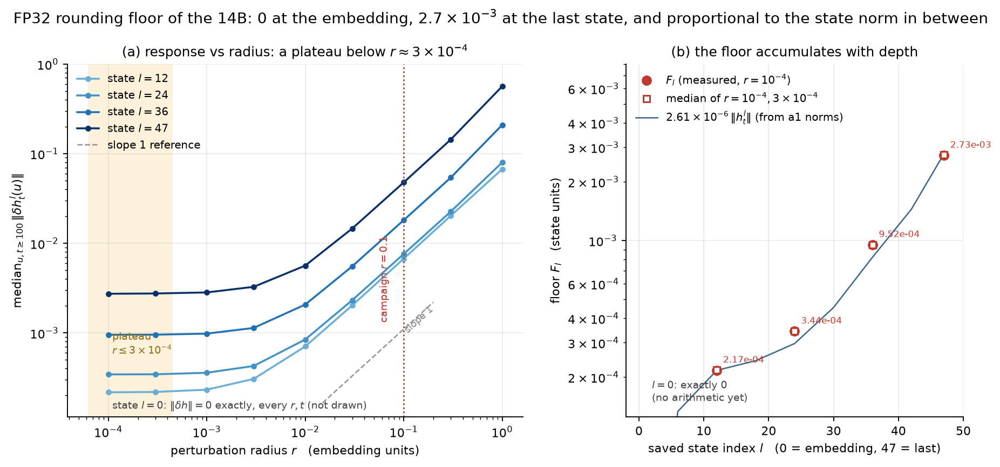
(a) Response against radius. $x$: $r$ on a log scale, $10^{-4}\dots1$. $y$: $M(r,l)$ on a log scale, one curve per non-zero saved state (four curves, light blue for the shallow state, dark blue for the deep one), with markers at the nine measured radii. The shaded band marks $r\le3\times10^{-4}$, the plateau; the red dotted vertical line is the campaign radius $r=0.1$; the grey dashed segment in the empty lower-right corner is a slope-1 reference (on log-log, a linear response is a straight line of slope 1).
Numbers: $M$ is tabulated below. At the two smallest radii all four curves are flat to within 1%; the local log-log slope over $10^{-4}\dots10^{-3}$ is 0.01–0.03, i.e. the curves do not move. Over $r=10^{-2}\dots3\times10^{-1}$ the same slopes are 0.99, 0.97, 0.96, 0.95 — the response is proportional to $r$ to within 5%. At the top, $r=0.3\dots1$, the slopes are 1.00, 1.05, 1.13, 1.14: the deepest states grow faster than linearly, which is the model's own nonlinearity already noted in Part 0, not floor.
(b) Floor against depth. $x$: saved state index $l$; $y$: $F_l$ on a log scale. Red discs are $F_l$ from $r=10^{-4}$; open squares are the two-radius plateau value (they coincide); the blue line is $2.61\times10^{-6}\,n_l$ using the nine norm_h0 layers of the A1 run, drawn at all nine saved indices — the four measured points lie on it, the other five are predictions. $F_l$ runs 2.17e-4, 3.44e-4, 9.52e-4, 2.73e-3 at states 12, 24, 36, 47; state 0 is annotated as exactly 0 because a log axis cannot show it.
The full table, every number in the figure:
| $r$ \ $l$ | 0 | 12 | 24 | 36 | 47 |
|---|---|---|---|---|---|
| 1e-4 | 0 | 2.169e-4 | 3.436e-4 | 9.523e-4 | 2.729e-3 |
| 3e-4 | 0 | 2.187e-4 | 3.446e-4 | 9.535e-4 | 2.749e-3 |
| 1e-3 | 0 | 2.320e-4 | 3.582e-4 | 9.795e-4 | 2.824e-3 |
| 3e-3 | 0 | 3.061e-4 | 4.267e-4 | 1.134e-3 | 3.261e-3 |
| 1e-2 | 0 | 7.049e-4 | 8.425e-4 | 2.068e-3 | 5.627e-3 |
| 3e-2 | 0 | 2.023e-3 | 2.314e-3 | 5.522e-3 | 1.460e-2 |
| 1e-1 | 0 | 6.720e-3 | 7.587e-3 | 1.809e-2 | 4.774e-2 |
| 3e-1 | 0 | 2.024e-2 | 2.253e-2 | 5.394e-2 | 1.434e-1 |
| 1 | 0 | 6.708e-2 | 7.976e-2 | 2.091e-1 | 5.636e-1 |
(Medians; the means are 1–5% higher, e.g. 2.856e-3 vs 2.729e-3 at state 47, because of the right tail.)
What the figure does not show. Only five states were saved, so between them the curves are straight lines in the drawing, not measurements; the blue norm law in (b) at states 6, 18, 30, 42 is a prediction. The medians erase a per-step variation of up to 8× at fixed $r$ (state 47, $r=0.1$: the per-step median over directions runs from 2.04e-2 to 1.63e-1). And a log axis hides the exact zero at state 0, which is why it is written out.
ds14floor_law.png — what the depth dependence is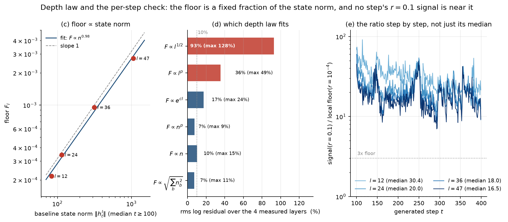
(c) Floor against state norm. $x$: $n_l$, $y$: $F_l$, both log. Four points, labelled by state. Solid line: the free power law $F\propto n^{0.977}$; dashed: slope 1. The exponent is 0.977 with an rms log residual of 0.074. The ratio $F_l/n_l$ is 2.614e-6, 3.019e-6, 3.027e-6, 2.568e-6 at states 12, 24, 36, 47 — a factor 1.18 total spread while $n_l$ changes by a factor 12.8. In units of fp32 machine epsilon (1.19e-7) that is 22, 25, 25 and 22 units.
(d) Which depth law fits. Horizontal bars: rms of $\ln(\text{predicted}/\text{measured})$ over the four layers, for six candidate laws; the text gives the rms and the largest single-layer deviation. The 10% dotted line is a visual reference, not a test. Results:
| law | rms | worst point (log dev.) | measured/predicted at $l=12,24,36,47$ | reading |
|---|---|---|---|---|
| $F\propto l^{1/2}$ | 93% | 128% | 0.28, 0.31, 0.70, 1.76 | rejected: predicts 1.98× growth from $l=12$ to 47, observed 12.58× |
| $F\propto l^{p}$ | 36% | 49% | 1.32, 0.61, 0.83, 1.49 | rejected: best $p=1.77$, residuals zigzag by up to 1.6× |
| $F\propto e^{cl}$ | 17% | 24% | 1.20, 0.79, 0.91, 1.16 | poor: one $e$-fold per 13.6 blocks, systematic S-shape |
| $F\propto n^{p}$ | 7.4% | 9.2% | 0.91, 1.06, 1.09, 0.95 | accepted, $p=0.977$ |
| $F\propto n$ | 10.4% | 14.8% | 1.00, 1.16, 1.16, 0.98 | accepted, $\kappa=2.610\times10^{-6}$ (21.9 ε) |
| $F\propto\sqrt{\sum_b n_b^2}$ | 7.2% | 11.0% | 1.02, 0.90, 1.09, 0.99 | accepted, $k_q=2.176\times10^{-6}$ (18.3 ε) |
(e) The ratio step by step. $x$: generated step $t\in[100,400)$; $y$: $\mathrm{median}_u\lVert\delta h^{l}_t\rVert\big/\mathrm{median}_u\lVert\delta h^{l}_t\text{ at }r{=}10^{-4}\rVert$ — the same ratio as in §4 but computed per step before taking any median over $t$, one curve per non-zero state. Solid grey line: 1 (signal equals floor); dotted grey: 3. Medians over $t$ are 30.4, 20.0, 18.0, 16.5 at states 12, 24, 36, 47; the 10th percentiles are 21.2, 14.9, 13.3, 10.6; the minima are 16.5 (t=313), 11.4 (t=293), 8.7 (t=294), 7.0 (t=293). No step out of 300 at any state falls below 7× the floor.
What the figure does not show. Four points cannot separate laws that differ by less than ~10%; the difference between $n^{0.98}$ and a quadrature sum of per-block errors is below that resolution (their rms values, 7.4% and 7.2%, are not significantly different). The freedom in (d) is 1–2 parameters per law fitted on the same four numbers that are then scored, so the residuals are optimistic. And the norm is borrowed from a second run.
At $r=0.1$ the median response and the floor give
| $l$ | signal $M(0.1)$ | $F_l$ | signal/floor | relative signal $M/n_l$ | relative floor $F_l/n_l$ | ratio of the two |
|---|---|---|---|---|---|---|
| 12 | 6.720e-3 | 2.169e-4 | 30.98 | 8.10e-5 | 2.61e-6 | 30.98 |
| 24 | 7.587e-3 | 3.436e-4 | 22.08 | 6.66e-5 | 3.02e-6 | 22.08 |
| 36 | 1.809e-2 | 9.523e-4 | 19.00 | 5.75e-5 | 3.03e-6 | 18.99 |
| 47 | 4.774e-2 | 2.729e-3 | 17.49 | 4.49e-5 | 2.57e-6 | 17.49 |
Where measurement is weakest: the deepest state, and the reason is the signal, not the floor. The floor relative to the state's own norm is the same at every layer (2.6–3.0e-6), so normalizing by the norm changes the ratio by at most 2% (last column). What falls with depth is the relative response: 8.1e-5 of the state norm per unit radius at state 12, 4.5e-5 at state 47. The deepest read-out is therefore the one closest to its floor, by a factor 1.8 — a real effect, but a small one.
The obvious comparison, signal at $r=0.1$ divided by the floor, is the right one for the campaign because $r=0.1$ is the radius actually used, but as a general metric it is misleading: it is proportional to $r$, so it says nothing about the model and everything about the chosen radius. The dimensionless version is $r/r_{\min}(l)$, which is the same number here (17.5 at the deepest state) and remains meaningful if the radius changes. Two more things the naive comparison hides, both checked:
Four accumulation models and their predictions:
The data support the last one, and its practical content is "$F_l$ is a fixed fraction of the state norm". The single-constant version $F_l=2.61\times10^{-6}n_l$ (21.9 ε) matches to 10% rms. Physically: every block's arithmetic leaves a relative error of order 20 fp32 units on the state it writes, and the visible floor is the quadrature sum of those errors weighted by the (growing) state norm. With four measured layers the two versions — proportional to the current norm, or quadrature over per-block norms — cannot be separated beyond the ~10% residual level; both are consistent, and both say the floor is set by the size of the numbers being rounded, not by the number of blocks alone.
That distinction matters for extrapolation. "Floor grows like $\sqrt{\text{depth}}$" would be reassuring; it is wrong here because the residual stream grows with depth. The measured statement is: absolute floor grows roughly as fast as the state norm grows, which for this model is a factor 12.6 between states 12 and 47, i.e. 7.5% per block on average.
Solving $G_lr=F_l$:
| $l$ | $G_l$ | $F_l$ | $r_{\min}=F_l/G_l$ | $r_{3F}=3F_l/G_l$ |
|---|---|---|---|---|
| 0 | 0 | 0 | undefined (no floor, no gain) | undefined |
| 12 | 6.720e-2 | 2.169e-4 | 3.23e-3 | 9.68e-3 |
| 24 | 7.587e-2 | 3.436e-4 | 4.53e-3 | 1.36e-2 |
| 36 | 1.809e-1 | 9.523e-4 | 5.26e-3 | 1.58e-2 |
| 47 | 4.774e-1 | 2.729e-3 | 5.72e-3 | 1.71e-2 |
Reading: at $r=r_{\min}$ the measured displacement is $\sqrt2$ times the linear term (the two contributions are equal and add in quadrature), so half of the squared response is arithmetic. At $r_{3F}$ the measured displacement is only 5.4% above what a floor-free linear response would give, and the floor's share of the squared response is 10%. The campaign radius 0.1 sits 17.5–31 times above $r_{\min}$, and 5.8–10.3 times above $r_{3F}$ — inside the safe region with room to spare, but not by orders of magnitude at the deepest state. A 10× margin over $r_{\min}$ would require $r\ge0.057$ at state 47, which is close to the campaign radius; the choice $r=0.1$ is therefore near the small end of what this 48-layer fp32 network can resolve at its last state, and a deeper model would need a larger radius for the same margin.
This is also consistent with the "clean window" of Part 0 ($r\in[0.03,0.3]$), which was defined by a different criterion — the radius range where $M(r)/r$ is constant to a few percent. $r_{\min}$ is the absolute validity edge (floor equals signal); 0.03 is where the floor inflates $M(r)/r$ by only ~2% (at state 47: $M(0.03)/0.03=0.487$ against the asymptotic $G=0.477$). Both numbers describe the same transition from opposite sides.
dh_norm is stored. Nothing is claimed about prompt positions, where the perturbation itself lives.The floor is not an inconvenience to be subtracted; it is a scale of the system "network + arithmetic", and it is set by the norm of the state being written at each depth. Three practical consequences, each backed by a number above:
The D2 analysis is now split so that the GPU only does what it is needed for. A GPU job (scripts_spark/d2_distances.py) writes one full $[N,N]$ Euclidean distance matrix per trajectory; a laptop script (scripts_spark/d2_local.py) turns those matrices into the correlation integral $C(\epsilon)$, its local slope, the valid-window bookkeeping, TwoNN, the Levina–Bickel MLE and two loop screens — figures and JSON, no GPU, no model, no torch. Run time is 6–7 s per 4095-token trajectory including building the matrix from the saved states, and 2–3 s per trajectory at $N=4000$ from a precomputed .npy (1000 tokens: 1.1 s).
Validated against the four 1.5B trajectories that exist locally. The reference estimator of results/d2/ is reproduced exactly — 2.978 vs 2.978, 3.894 vs 3.894, 9.195 vs 9.195 — which is the check that matters, because it means any disagreement below is about interpretation, not arithmetic. The interpretation does change: the reference "plateau" is a chord across 6–8 adjacent points of a percentile-spaced grid, 0.04–0.10 decades wide, with the $R^2$ of 0.9999 that any smooth curve gives over such a span; and on the two healthy trajectories the whole eps range between the depletion floor $10/N$ and saturation is only 0.08 decades wide, so no plateau can exist there by construction. The loop trajectories are identified by a lag-distance dip (period 53 and 69, dip to 6–10% of the neighbouring lags), and one of them produces a convincing but spurious 0.54-decade window with $\hat D_2=1.09$. Run over all 20 local trajectories the same test finds nine repetition loops and two partial ones, including six of the sixteen 1000-token runs that had been recorded as non-loops.
| item | value |
|---|---|
| input (GPU) | dist_<name>_h_last.npy, fp32 $[N,N]$ Euclidean distance matrix, one per trajectory |
| input (GPU, optional) | summary.json: n, dim, norm_median, norm_growth, rel_nearest, rel_nearest_p05 |
| input (laptop, validation only) | .pt (torch save, read here without torch) or .npz with h_last $[N,D]$ |
| output | notebook_big/figures/d2pipe_<tag>_<name>.png, …_summary.png, d2pipe_<tag>.json |
| command | python scripts_spark/d2_local.py --dir results_big/ds14/d2 --theiler 0,50,500 --out notebook_big/figures --tag ds14 |
| alternative | --pt <files or dirs> (or --dist <matrix.npy> …) computes the matrices locally in float64 |
Every epsilon below is quoted in units of $d_{typ}$, the median over points of the rms distance to the other points (a robust typical separation). That makes a 1.5B trajectory (state norm ≈ 10²) and a 14B one comparable on the same axis.
Let $d_{ij}=\lVert x_i-x_j\rVert$, $N$ points, Theiler window $W$.
| quantity | expression | note |
|---|---|---|
| correlation integral | $C(\epsilon)=\dfrac{\#\{(i,j):\ |i-j|>W,\ d_{ij}<\epsilon\}}{\#\{(i,j):\ |i-j|>W\}}$ | denominator $N(N-1)-2\sum_{k\le W}(N-k)$, so $C\to1$; for $W=0$ it is exactly $\frac{2}{N(N-1)}\#\{i |
| evaluation | sort the upper triangle once, then searchsorted at each $\epsilon$ |
90 log-spaced values of $\epsilon/d_{typ}\in[10^{-2},2.5]$; the $W$-band counts are subtracted from the $k=1\ldots W$ diagonals |
| local slope | $\mathrm{d}\log C/\mathrm{d}\log\epsilon$ | central differences, second-order at the edges |
| TwoNN | $\mu_i=r_2^{(i)}/r_1^{(i)}$, $\ \hat d=1/\langle\ln\mu\rangle$ | MLE for the Pareto tail $P(\mu>M)=M^{-d}$; the reference code's OLS fit of $-\ln(1-F)$ vs $\ln\mu$ is the same estimator and is returned too |
| Levina–Bickel MLE | $m_k(i)=\frac{1}{k-1}\sum_{j| $k=5,10,20$ |
|
| repetition screen | fraction of points with nearest distance at $\lvert i-j\rvert\ge50$ below $10^{-3}d_{typ}$ | plus the median and p05 of that relative distance |
| loop-period screen | $p(k)=\overline{\lVert x_t-x_{t+k}\rVert}/d_{typ}$; prominence $=p(k)/\mathrm{median}\,p(k\pm1,2,3)$ | a drifting loop has a sharp dip at its period; a healthy trajectory has none |
A window is marked valid only if all three hold simultaneously:
docs/FINDINGS_AND_PROCEDURE.md.The window width in decades is reported whether or not it is valid, together with the slope at both edges of the admissible range, so "no plateau" is a number and not a verdict. The finite-$N$ slope ceiling $2\log_{10}N$ (7.2 at $N=4095$) is drawn on every slope panel. If the window is empty the verdict is no scaling region; the pipeline also reports $\hat D_2$ over the whole admissible range ($C$ from $10/N$ to $0.1$) so the window dependence stays visible.
Four trajectories: two of the local long runs are period-53 / period-69 loops (cyber, great, both 4095 tokens at the last layer), two are healthy (interstellar, 1026 tokens; astronomy_observations, 1000 tokens). All four are 1536-dimensional last-layer states, greedy FP32, window 4096.
| trajectory | $N$ | loop period (coverage) | nearest-twin median | $\hat D_2$ valid window | window width | T4 estimator (reproduced / published) | TwoNN | MLE $k{=}10$ |
|---|---|---|---|---|---|---|---|---|
great (loop) |
4095 | 69 (90%) | 0.016 | — (none) | 0.00 dec | 2.978 / 2.978 | 5.44 | 3.19 |
cyber (loop) |
4095 | 53 (94%) | 0.017 | 1.09 (spurious) | 0.54 dec | 3.894 / 3.894 | 6.21 | 3.12 |
interstellar (healthy) |
1026 | — (0%) | 0.419 | — (none) | 0.00 dec | 9.195 / 9.195 | 6.23 | 7.91 |
astronomy_observations (healthy) |
1000 | — (0%) | 0.538 | — (none) | 0.00 dec | 11.35 / — | 6.12 | 10.13 |
Four things to read off it.
The reference numbers are reproduced exactly. The T4 estimator column is dimension.py:d2_curve run on the first 2000 states with Theiler 20, i.e. the code path that produced results/d2/d2_raw_vs_shuffled.json; it matches to the published four digits (2.9777, 3.8943, 9.1947). So the correlation integral and the fit search here are the same objects as in the reference implementation, and the rest of this section is a statement about what those numbers mean, not about whether they were computed right.
The healthy trajectories have no scaling region, and there is no room for one. For interstellar the admissible range runs from $\epsilon/d_{typ}=0.61$ ($C=10/N$) to $0.81$ ($C=0.1$) — 0.08 decades — and across it the local slope climbs 6.1 → 8.9. A 9-dimensional cloud with 1000 points simply cannot be measured: the depletion floor and saturation are 0.08 decades apart, which is why the whole "valid interval" in the earlier analysis was 0.00–0.04 decades wide. The T4 value 9.195 comes from a window 0.102 decades wide, 6 of 22 grid points, inside which $C$ rises by 0.14 (a seventh of the full range): a chord, not a plateau.
Loops give a low number, and one of them gives a valid-looking one. cyber has a 0.54-decade window with $\hat D_2=1.09$ that passes all three criteria — the drifting period-53 orbit really does trace a one-dimensional curve with $C\sim\epsilon^{1.1}$ over that range. The verdict is decided by the loop screens, not by the fit: 94% of its positions return to within $0.1\,d_{typ}$ after 53 tokens (90% for great), against 0% for both healthy trajectories, and the lag-distance dip is 0.06 of its neighbouring lags. great has the same structure but no flat run at all. The correct reading of a low $\hat D_2$ is therefore always "is this a loop?" first.
What does not separate the groups: TwoNN sits at 5.4–6.2 on all four, loops included, and the $k$-neighbour MLE at $k=10$ agrees with the truth on the healthy pair (7.9, 10.1) but is 3.1–3.2 on the loops — both are point-cloud statistics and neither is a loop detector. The repetition screen at the $10^{-3}$ threshold in the brief finds nothing in any of the 20 local trajectories: these loops drift, so a repeat sits at 1.6% of the cloud scale, not at $10^{-3}$. The usable screen is the lag-distance dip: over all 20 local trajectories the prominence is ≤0.22 for the nine full loops, 0.21 and 0.45 for two partial ones, and 0.91–0.99 for the nine clean ones — a factor-2 margin with no free parameter. There is no smoothness confound in this metric: consecutive last-layer states are already 0.84–1.03 $d_{typ}$ apart, so the lag curve is flat at $\approx1$ for a healthy run and only a genuine return produces a dip.
Theiler windows change nothing for the healthy trajectories (no window at $W=0$ or $W=500$) and remove even the spurious window of cyber at $W=500$; the same run at $N/2$ and $N/4$ loses it too, so it is a small-$N$ feature of the orbit.
The same two screens, run over every 1.5B trajectory that exists on this machine (three 4095-token prompt runs and the sixteen 1000-token runs, plus interstellar), split them nine loops / two partial / nine clean:
| period found | coverage | trajectories |
|---|---|---|
| 12, 17, 27 | 95%, 76%, 89% | renewable_energy_economics, history_of_music, sleep_and_memory |
| 53, 63, 69, 74, 81 | 94%, 77%, 90%, 91%, 70% | cyber, history_of_computing, great, future, ocean_currents |
| 53 | 80% | cybersecurity (the 1000-token run of the same prompt as cyber) |
| 50, 79 | 39%, 50% | transformer_architecture, urban_transportation (partial: prominence 0.45, 0.21) |
| — | 0–5% | interstellar, astronomy_observations, childhood_experiences, evolution_of_language, healthy_habits, history_of_mathematics, interstellar_travel, software_engineering_practices, volcanoes_and_plate_tectonics |
This contradicts the earlier note that the sixteen fresh 1000-token trajectories "flag none as loops (worst relative distance 0.135)". The two statements are reconcilable only if that screen thresholded something other than the fraction of positions that return — for renewable_energy_economics, 95% of positions come back to within $0.1d_{typ}$ after 12 tokens, with a mean lag-12 distance of $0.037d_{typ}$ against $1.06d_{typ}$ at the surrounding lags, so the loop shows up as a dip that a median or a maximum over points can easily miss. Whatever the earlier screen was, six of those sixteen trajectories (plus two partial ones) are repetition loops and their D2/MLE numbers are not usable as non-loop controls. The twelve trajectories behind results/d2/d2_raw_vs_shuffled.json live on the T4 and cannot be screened here; the three that are loops were correctly identified there, and the other nine need this check before their $\hat D_2$ of 9–11 is quoted.
Everything in results/d2/ was produced by fit_plateau, which slides over every sub-interval of the $\epsilon$ grid and keeps the one with the largest $R^2$. Three consequences, all visible in the numbers above:
min_points=6 counts grid points, not decades. The $\epsilon$ grid is made of percentiles of pairwise distances, so its spacing is very uneven (one 0.19-decade jump near the 2nd percentile, then ~0.01-decade steps near the 60th). Six adjacent points can be 0.02 or 0.3 decades; the width is never checked, so the "plateau" can be one grid step.d2_all_controls.py ran the raw curves at Theiler 20 and the shuffled ones at Theiler 0, so even the tautological raw-vs-shuffled comparison was not matched; and rqa passes theiler=0 to correlation_curve regardless of its argument, using the argument only for the recurrence mask.)TwoNN is implemented correctly there (the CDF slope fit is the Pareto MLE), but the widely quoted variant $\log 2/\langle\log\mu\rangle$ is not: it returns $\ln^2 2\cdot d=0.48\,d$, which was checked on uniform hypercubes of dimension 2, 5 and 10. The pipeline returns both so the difference stays visible. A related trap: exact duplicates give $r_1=0$, so $\mu=\infty$ and the point is dropped — the published vocab control lost 16 of 2000 points this way, and a bit-exact loop would hide its own degeneracy.
All five mechanisms were reproduced by the earlier pass on synthetic data, and the estimator recovers Hénon ($\hat D_2=1.18$ over a 1.1-decade window) and a uniform 3-cube (2.82, no valid window at $N=1500$ because the admissible range is 0.40 decades) — so the absence of scaling in the LLM states is a property of the data, not of the estimator.
# on the laptop, once the GPU job has written results_big/<model>/d2/
python scripts_spark/d2_local.py --dir results_big/ds14/d2 \
--theiler 0,50,500 --out notebook_big/figures --tag ds14
summary.json from the GPU side is picked up automatically and its rel_nearest is stored next to the laptop-side screen, so the two can be compared for every trajectory. Per-trajectory figures carry eight panels: $C(\epsilon)$ for all Theiler windows with the valid window shaded, the local slope against the $2\log_{10}N$ ceiling, the same slope at $N$, $N/2$, $N/4$, the TwoNN $\mu$ CDF, the MLE against $k$, the repetition histogram, the lag-distance loop test, and a numbers block. The JSON holds every quoted number including the T4-style reproduction and its window width.
What this does not show. One model, one layer (the last), one prompt set per trajectory. The valid-window rule has three thresholds (0.4 decades, 6%, 0.1 saturation) that were chosen before looking at the new data and are reported in the JSON for every run; the verdicts are robust to them here (the healthy trajectories have no admissible range at all, and the loops are caught by an independent period test), but a marginal case would need the width quoted, not just the verdict.
(This part and the next two share one dataset; each figure is a different slice of it. The dataset: DeepSeek-R1-Distill-Qwen-14B, FP32, prompt interstellar_travel ($P=65$ tokens), 300 greedy tokens, 1000 unit perturbation directions at radius $r=0.1$ added to the prompt embeddings, every perturbed pass teacher-forced on the baseline tokens. Attention: full — see the correction note. File results_big/ds14/a1_inter_w100/a1.npz, engine run_a1_big, 1590 s on the GB10.)
Why five views. The dataset has three axes — generated step $t$, saved state index $l$, and direction $u$ — plus one scalar response per $(t,u)$: the margin change $\delta m_t(u)$, and per $(t,l,u)$: the state displacement $\lVert\delta h_t^l(u)\rVert$. A single plot can show at most two of these honestly; the five figures below slice them as (t), (t,l), (t,u), (u), (u | t), so every claim in the summary tables can be checked against a picture.
ds14_margins.png — the decisions the baseline actually makes
Unperturbed run only, $r=0$. Left: $m_t=\ell^{(1)}_t-\ell^{(2)}_t$ (nats) against generated step $t$; the six tightest gaps are marked with vertical ticks and labelled with $(t,m_t)$. Right: ECDF of the same 300 values on a log $x$ axis. The three labelled spikes below 0.003 nats ($t=21,19,189$) are the ties that later control almost every flip; the median is 3.10 nats, so the model is usually confident and rarely at a knife's edge. This figure is the explanans for everything downstream: thresholds $r_c^-=m\,r/\max(-\delta m,0)$ inherit their smallest values from the smallest margins.
ds14_response_curves.png — what the perturbation does through depth and time
Median over the 1000 directions of $\lVert\delta h_t^l\rVert/r$ (state displacement per unit radius; the division by $r$ makes runs at different radii comparable and is exact in the linear regime $r\in[0.03,0.3]$ measured in Part 0). One panel per saved state $l\in\{0,6,12,18,24,30,36,42,47\}$; the shaded band is the 10–90 percentile range over directions. State 0 (embedding output at generated positions) is identically zero — the perturbation touches only the 65 prompt positions, so nothing can appear at generated positions before the first attention mix. The response grows with depth (0.077 at state 6 → 0.65 at state 47, median-over-t values; see the table in the deep part) and is bursty in $t$: individual baseline tokens (e.g. $t=258$) act as amplifiers at the deep states.
ds14_rc_ladder.png — the threshold map, all 1000 directions at once
For every direction $u$ and step $t$: the signed radius $r_c^-(t,u)=m_t\,r/\max(-\delta m_t(u),0)$ at which step $t$ would flip. Directions are sorted by $r_*(u)=\min_t r_c^-$, so the interesting directions are at the top. Color is log $r_c^-$; the dashed contour marks $r_c^-=r=0.1$ — below it in a column means "this step flips at the run radius". The side histogram shows the distribution of $r_*$. Reading: the dark region below the contour is column-shaped, not point-shaped: a few steps ($t=21$, $t=19$) are below the line for hundreds of directions while most steps are above it for all — the flip structure is organised by step, not by direction.
ds14_rstar_ecdf.png — the flux-tube radius distribution
ECDF of $r_*(u)$ over the 1000 directions, log $x$; vertical line at the run radius $r=0.1$; annotation: 46.4% of directions have $r_*\le r$ (predicted to flip). $r_*$ quantiles: p10 $=0.0171$, p50 $=0.116$, p90 $=2.59$; 166 directions need $r>1$ to flip anything within 300 tokens. For comparison the 1.5B (20 directions, same protocol and prompt) had $r_*$ p50 $=1.56$ — the 14B's tube is an order of magnitude narrower, entirely because its thinnest margin is 207× thinner (Part 2).
ds14_direction_gains.png — directions are not equal, but not special either
$G(u)=\mathrm{median}_t\lVert\delta h_t^{47}(u)\rVert/r$: histogram, log-ECDF, and three individual direction shapes normalised by their own medians (shapes agree to first order; they differ in amplitude by 13.7× from 0.224 to 3.06). The gain distribution is approximately log-normal in $G$. Whether a direction flips, however, is governed by its projection onto the logit-difference vector at the two razor-thin ties — the deep part shows this projection is only ~0.6% of $G$ and essentially independent across the ties.
Correction on the attention window (read this first). Every 14B result in Parts 1 and 2 was produced before we discovered that transformers 4.5x gates the sliding window on a
layer_typesconfig field that stock Qwen2.5 configs never set. The intendedwindow=100was therefore silently ignored: these runs used full attention (equivalent to W=4096 within the 365-token horizon). The data itself is valid and internally consistent (baseline and perturbed passes share the same attention pattern; the free-run validation matched it), but wherever a sentence below says "window 100" for the 14B, read "full attention". A rerun with the window genuinely active is in progress; its numbers will replace the affected comparisons. This also fully explains why the 14B shows no response surge at t=35 in Part 2: with full attention there is nothing to flush.
A single prompt of 65 tokens is sent through DeepSeek-R1-Distill-Qwen-14B in FP32, the model generates 300 tokens greedily, and then 1000 different unit perturbations of size $r=0.1$ are added to the prompt embeddings while the generated tokens are held fixed. For every direction and every generated step we record how much the top-1/top-2 logit gap would move; from that we compute the radius at which each step would flip. Almost half the directions (464 of 1000) would flip some token at $r=0.1$, but all 464 flips are decided at only two generated steps, $t=21$ and $t=19$, the two smallest logit gaps in the run. The directions that destroy the margin at $t=21$ are essentially unrelated to those that destroy it at $t=189$ (correlation $-0.14$), and the 24 stored response vectors are nearly orthogonal (mean cosine $+0.0025$). Consequently the direction's overall response strength $G$ is a weak predictor of its threshold radius (correlation $-0.18$): which razor-thin tie a direction happens to hit matters far more than how strong its hidden-state response is.
| item | value |
|---|---|
| model | DeepSeek-R1-Distill-Qwen-14B (48 blocks, hidden size 5120) |
| precision | FP32, one precision for the whole run; TF32 disabled |
| decoding | greedy, fixed length, no sampling, no EOS stop |
| prompt | "Provide a comprehensive technical review of current and proposed propulsion systems for interstellar travel. Compare chemical rockets, nuclear propulsion, laser sails, antimatter drives, and other theoretical concepts in terms of energy requirements, achievable speeds, technological feasibility, and projected timelines for development. Include discussion of major projects in the history of the field." |
| prompt length | $P=65$ tokens |
| attention window | full attention (the window-100 setting was silently inactive; see the correction note above) |
| continuation | $T=300$ baseline greedy tokens, stored in gen_ids |
| directions | $K=1000$, built as 50 independent simplex blocks of 20 |
| direction geometry | each direction is a unit vector with 20 non-zero coordinates on the $65\times5120$ prompt-embedding matrix; blocks use disjoint coordinates, so cross-block directions are exactly orthogonal; within a block every pair has inner product $-1/19=-0.0526$ |
| radius | one radius $r=0.1$ (radii=[0.1]) |
| perturbation support | all 65 prompt positions (not the generated positions) |
| teacher forcing | every perturbed forward pass is run on the baseline prompt_ids + gen_ids; the continuation tokens are identical to the unperturbed run, so the measured $\delta m$ is the continuous response at each baseline step, not the trajectory after a divergence |
| baseline check | two identical rows in one batch produced bit-identical tokens (baseline_duplicate_identical: true) |
| saved states | hidden-state indices [0, 6, 12, 18, 24, 30, 36, 42, 47]; state 0 is the embedding output, state $l\ge1$ is the output of block $l-1$ (transformers convention), so state 47 is the output of block 46, not the final block. The final-norm/lm_head input was stored only as 24 difference vectors (dh_last, directions 0–23) |
| engine / environment | run_a1_big, torch 2.14.1+cu130, transformers 4.57.6, 1590.6 s wall time on spark-d5eb |
| file | results_big/ds14/a1_inter_full/a1.npz (+ meta.json) |
Because this run used full attention, the prompt stays visible at every generated step: the late-time response is direct prompt influence, attenuated only by the network's own mixing, not by any attention window cutting the prompt off.
For a direction $u$ (row of simplex) and a generated step $t$:
| symbol | explicit expression | what it is | why this quantity |
|---|---|---|---|
| $m_t$ | $\ell_t^{(1)}-\ell_t^{(2)}$ | top-1 minus top-2 logit gap of the unperturbed greedy run (nats) | the only scalar that says how close the baseline decision is; a flip requires this gap to be closed |
| $\delta m_t(u)$ | $\ell_t'^{(1)}-\ell_t'^{(2)}-m_t$ at the perturbed forward pass (stored dm) |
change of that gap under perturbation (nats) | the continuous response of the decision variable; it is measured without letting the trajectory diverge |
| $g_t(u)$ | $\lvert\delta m_t(u)\rvert/r$ | local sensitivity of the gap to radius (nats per unit radius) | converts a response into the radius needed to close the gap |
| $r_c^-(t,u)$ | $m_t\,r/\max(-\delta m_t(u),0)$, $+\infty$ if $\delta m_t\ge0$ | the radius at which step $t$ would flip, for direction $u$ | a flip needs $\delta m_t\le -m_t$; solving for the radius gives this expression |
| $r_*(u)$ | $\min_t r_c^-(t,u)$ | the direction's threshold radius (smallest radius that flips some token) | one number per direction; direction $u$ flips at the run radius iff $r_*(u)\le r$ |
| $t_*(u)$ | $\arg\min_t r_c^-(t,u)$ | the controlling step | identifies which near-tie is the weak point for this direction |
| $G(u)$ | $\mathrm{median}_t \lVert\delta h_t^{47}(u)\rVert/r$ | typical last-state response gain (per unit radius) | a robust, scalar measure of how strongly the direction moves the final stored state |
| $R_t^{l}(u)$ | $\lVert\delta h_t^{l}(u)\rVert/\lVert h_t^{l}\rVert$ | relative response at state $l$ | says what fraction of the residual stream is being displaced; the absolute norm alone grows with depth simply because the stream grows |
| $\cos_{ij}$ | $\langle \delta h_i,\delta h_j\rangle/(\lVert\delta h_i\rVert\lVert\delta h_j\rVert)$ | angle between two response vectors | tests whether all directions produce one common response mode (1-D geometry) or many |
| $r_*(u)G(u)$ | product of the two scalars above | collapse test for the naive scaling $r_*\sim m/G$ | if $\delta m_t$ at the controlling step were proportional to $G$, this product would be constant |
The signed threshold is essential. The engine's stored r_c array was computed with $\lvert\delta m\rvert$ (run_a1_big.py, line 212), not with $\max(-\delta m,0)$. Recomputing the signed version is not cosmetic: the unsigned definition calls 810 directions flips at $r=0.1$, including directions whose margin is widened and which cannot flip. The signed definition gives 464. Every number below uses the signed definition.
| step $t$ | $m_t$ (nats) | directions with $t_*=t$ (all 1000) | of which flip at $r=0.1$ |
|---|---|---|---|
| 21 | $9.727\times10^{-5}$ | 503 | 421 |
| 19 | $1.144\times10^{-3}$ | 236 | 43 |
| 189 | $2.224\times10^{-3}$ | 146 | 0 |
| 273 | $1.916\times10^{-2}$ | 56 | 0 |
| 255 | $5.151\times10^{-2}$ | 8 | 0 |
| 171 | $5.393\times10^{-2}$ | 5 | 0 |
| 168 | $8.033\times10^{-2}$ | 1 | 0 |
| 205 | $8.067\times10^{-2}$ | 1 | 0 |
| 0 | $1.009\times10^{-1}$ | 5 | 0 |
| 247 | $1.121\times10^{-1}$ | 15 | 0 |
For reference the margin distribution is very skewed: median $m=3.096$ nats, mean $4.996$, minimum $9.727\times10^{-5}$ at $t=21$; 8 of 300 steps have $m<0.1$, 3 have $m<0.01$. The threshold radii are equally skewed: over all 1000 directions, $r_*$ has p10 $=0.0171$, median $=0.116$, p90 $=2.59$, maximum $55.5$. Among the 464 directions that flip, $r_*$ has median $0.0314$ (p10 $0.0112$, p90 $0.0770$, max $0.0995$); 536 directions have $r_*>0.1$ and 166 have $r_*>1$.
ds14_controlling_steps.png — two steps decide every flip
Setup. Same run as §1.1 (DS-R1-14B, FP32, greedy, $P=65$, window 100, $T=300$, 1000 unit directions, $r=0.1$, teacher-forced on the baseline tokens). Panel (a) is a histogram of $t_*(u)$ over all 1000 directions; the light bars are all directions, the dark bars are the subset with $r_*(u)\le0.1$ (the directions that actually flip). Panel (b) restricts the $x$-axis to the ten smallest-margin steps and counts how many directions have that step as their controller.
Axes. - (a) $x$: generated step $t$ (0 = first generated token); $y$: number of directions with $t_*(u)=t$. - (b) $x$: the ten near-tie steps, with the value of $m_t$ printed on the second line; $y$: number of directions controlled by that step, log scale.
What is in the figure. - There are 22 distinct controlling steps among 1000 directions, but only 2 among the 464 flipping directions. - Top-3 overall: $t=21$ controls 503 directions (421 flips), $t=19$ controls 236 (43 flips), $t=189$ controls 146 (0 flips). These three account for $885/1000=88.5\%$ of all directions. The two flipping steps account for $464/464=100\%$ of the flips. - The remaining 115 directions are spread over 19 steps, the largest being $t=273$ with 56 directions, $t=247$ with 15, $t=98$ and $t=255$ with 8 each. - In panel (b), the bars are not monotone in $m_t$: $t=247$ ($m=0.112$) controls 15 directions while $t=255$ ($m=0.0515$) controls 8 and $t=171$ ($m=0.0539$) controls 5. A near-tie is a necessary condition for a small $r_*$, but the response at that step also has to point the right way.
What the figure shows. The weak points are shared: nearly every direction is limited by the same two tokens, $t=21$ and $t=19$. It is not the case that a thousand directions explore a thousand different decisions.
What it does not show. It does not show that the other eight near-ties are irrelevant for other radii or other prompts. At $r=0.1$ their $r_*$ is above the run radius, so they do not flip here; at a larger radius they would. The figure also says nothing about the free-run consequences of a flip (that requires the separate free-run validation).
ds14_sign_structure.png — half destroy, half widen, and the two ties are independent
Setup. Same run. For each of the three most important controlling steps ($t=21,19,189$) the figure histograms the signed response $\delta m_t(u)/r$ over all 1000 directions. Red is $\delta m_t<0$ (the margin is being destroyed), blue is $\delta m_t\ge0$ (the margin is being widened; such a direction can never flip at that step). The dashed vertical line is $-m_t/r$: a direction to its left would flip at this step at radius $r=0.1$. The shaded region is that flip region. Panel (b) is a scatter of $\delta m_{21}$ against $\delta m_{189}$ in millinats (raw $\delta m$, no division by $r$).
Axes. - (a1)–(a3) $x$: $\delta m_t(u)/r$ (nats per unit radius); $y$: directions per bin. - (b) $x$: $\delta m_{21}(u)$ (millinats, $10^{-3}$ nats); $y$: $\delta m_{189}(u)$ (millinats).
Numbers for the three histograms.
| step | $m_t$ | $\delta m<0$ | $\delta m\ge0$ | pass $r_c^-\le0.1$ at this step | median $\delta m/r$ | p25 / p75 | p5 / p95 | median $g_t$ | median $g_t/G$ |
|---|---|---|---|---|---|---|---|---|---|
| 21 | $9.727\times10^{-5}$ | 52.9% | 47.1% | 42.7% | $-3.13\times10^{-4}$ | $-2.67\times10^{-3}$ / $+2.56\times10^{-3}$ | $-8.21\times10^{-3}$ / $+8.99\times10^{-3}$ | $2.61\times10^{-3}$ | $4.14\times10^{-3}$ |
| 19 | $1.144\times10^{-3}$ | 49.1% | 50.9% | 7.5% | $+2.33\times10^{-4}$ | $-4.65\times10^{-3}$ / $+5.11\times10^{-3}$ | $-1.40\times10^{-2}$ / $+1.40\times10^{-2}$ | $4.87\times10^{-3}$ | $7.47\times10^{-3}$ |
| 189 | $2.224\times10^{-3}$ | 50.7% | 49.3% | 0.1% | $-8.63\times10^{-5}$ | $-2.64\times10^{-3}$ / $+2.30\times10^{-3}$ | $-8.09\times10^{-3}$ / $+6.77\times10^{-3}$ | $2.48\times10^{-3}$ | $5.23\times10^{-3}$ |
The sign split is close to 50/50 at all three steps. The distributions are centered near zero and are symmetric to within a few percent. At $t=21$ the median absolute response is only $3.1\times10^{-4}$ nats per unit radius, i.e. about 16 times smaller than the median response at $t=19$ ($4.9\times10^{-3}$) and about 1900 times smaller than the median gain $G$ ($0.583$). The gap at $t=21$ is so thin that even this tiny projection is enough to close it.
The “pass” column is not the same as the “$\delta m<0$” column. At $t=21$, 52.9% of directions decrease the gap but only 42.7% decrease it by at least $m_t$; the remaining 10.2% move it by less than $9.7\times10^{-5}$ nats and do not flip at $r=0.1$. At $t=19$ the corresponding fraction passing is 7.5%; at $t=189$ it is 0.1%.
Among the flipping subset. At $t=21$, 92.45% of the 464 flipping directions have $\delta m_{21}<0$ (the other 7.55% are controlled at $t=19$ and are margin-widening at 21). At $t=19$ only 50.4% are negative, and at $t=189$ 47.2%; those two steps are not the controllers for most flips.
Panel (b): are the two near-ties the same direction geometry? No.
| pair | Pearson (all) | Spearman (all) | Pearson (flips) | Spearman (flips) |
|---|---|---|---|---|
| 21 vs 189 | $-0.142$ ($p=6.8\times10^{-6}$) | $-0.123$ | $-0.053$ | $-0.092$ |
| 21 vs 19 | $+0.072$ | $-0.032$ | $-0.176$ | $-0.207$ |
| 19 vs 189 | $-0.047$ | $-0.030$ | $-0.027$ | $-0.021$ |
Quadrant counts for 21 vs 189 (all directions): $(-,-)$ 245, $(-,+)$ 284, $(+,-)$ 262, $(+,+)$ 209 — essentially uniform. The 21-vs-189 correlation is statistically detectable because $n=1000$, but it explains only $0.02$ of the variance ($r^2=0.020$). The 21-vs-19 correlation even changes sign between all directions and the flipping subset. The two near-ties are not controlled by one shared direction geometry: a direction that suppresses the margin at 21 has essentially a 50/50 chance of widening it at 189.
Why this quantity. The signed response is the right object because a flip is one-sided: only $\delta m_t\le -m_t$ can flip, so the sign is part of the definition, not a nuisance. A histogram of $\lvert\delta m_t\rvert$ would hide the almost perfect 50/50 split and would make the direction set look uniformly dangerous when half of it is protective.
What the figure does not show. It does not show which directions flip in a free run after the first divergence, and it does not resolve the $t=21$ threshold visibly on the plotted scale: the dashed line sits at $-9.7\times10^{-4}$ per unit radius, only about one bin from zero. The printed “pass 42.7%” is the reliable number for that threshold.
ds14_gain_structure.png — strong, broadly spread, and nearly orthogonal responses
Setup. Same run. Panel (a) uses all 1000 directions and the state-47 response norm at every step; panel (b) uses the 24 directions (0–23) for which the full final-norm difference vectors were stored.
Definitions for this figure. - $G(u)=\mathrm{median}_t\lVert\delta h_t^{47}(u)\rVert/r$. State 47 is the deepest stored hidden state (output of block 46, per the transformers index convention). The median is over the 300 generated steps. - $\mathrm{median\ step}$ $t_{\rm med}(u)=\arg\min_t\bigl\lvert\lVert\delta h_t(u)\rVert-\mathrm{median}_{t'}\lVert\delta h_{t'}(u)\rVert\bigr\rvert$: the step whose response norm is closest to the direction's median norm. The 24 vectors are compared at their own median step. - $\cos_{ij}$: cosine between the final-norm difference vectors of directions $i$ and $j$ at their median steps.
Gain numbers (all 1000 directions).
| statistic | $G(u)$ |
|---|---|
| min | 0.224 |
| p5 | 0.370 |
| p25 | 0.475 |
| median | 0.583 |
| p75 | 0.877 |
| p95 | 1.648 |
| max | 3.064 |
| max/min | 13.7× |
The distribution is approximately log-normal (log10 $G$ has mean $-0.181$, std $0.195$). For comparison, the arithmetic mean over $t$ has median 0.815 (1.40× the median of $G$), and the maximum over $t$ has median 8.44 (14.5× the median of $G$). The mean and max are dominated by token-locked response bursts (§5), which is why $G$ uses the median. This is a deliberate choice: the mean would rank directions by whether they happen to sit on a burst token, not by their typical strength.
The 24 stored vectors. Their norms at the median step have median $1.528\times10^{-2}$ (p5 $1.05\times10^{-2}$, p95 $4.14\times10^{-2}$). Pairwise cosine over all $\binom{24}{2}=276$ pairs:
| statistic | pairwise $\cos_{ij}$ |
|---|---|
| mean | $+0.0025$ |
| median | $+0.0026$ |
| p5 | $-0.062$ |
| p25 | $-0.028$ |
| p75 | $+0.025$ |
| p95 | $+0.081$ |
| min | $-0.147$ |
| max | $+0.222$ |
| fraction with $\lvert\cos\rvert>0.1$ | 4.3% |
The responses are nearly orthogonal. The first principal component explains 6.5% of the variance, versus 4.17% expected for 24 isotropic vectors; the first eight PCs are 6.5, 6.3, 5.5, 5.2, 5.1, 4.6, 4.6, 4.5%. The cosine of each response vector to the pooled mean response has median 0.196, essentially the isotropic value $1/\sqrt{24}=0.204$. There is at most a faint common component, not a shared 1-D mode.
Within-block and cross-block responses are statistically indistinguishable: directions 0–19 share the same input subspace (their input-space cosines are $-1/19=-0.053$) but their response cosines average $+0.0025$; directions 20–23 are input-orthogonal to block 0 and their response cosines to it average $+0.0033$. The network does not preserve the input block geometry, and it does not collapse all responses onto one axis.
The response vectors are also only partly coherent in time: the median cosine between $\delta h_t$ and $\delta h_{t+1}$ is 0.317 (mean 0.329), at lag 10 it is 0.090 (mean 0.109), and at lag 50 it is 0.061 (mean 0.080). Adjacent steps share about a third of their direction; by ten steps the memory of the direction is mostly gone.
The requested response-vs-baseline-state angle is not recoverable from this dump. The run stored baseline state norms (norm_h0), not baseline state vectors, and it stored the cosine between the perturbed state and the baseline state, $\cos(h',h_0)$. That state cosine is $0.99998\ldots1.0000004$ (median exactly 1.0; 49.9% of entries are exactly 1.0 in float32). With $\lVert\delta h\rVert/\lVert h_0\rVert\sim10^{-4}$, the true angle would change $\cos(h',h_0)$ by only $\sim10^{-8}$, below the float32 resolution of the stored array. Recovering $\theta(\delta h,h_0)$ from these numbers is therefore impossible, not merely noisy. What can be said from the stored state cosine is that the perturbed state differs from the baseline state in direction by at most $\sqrt{2(1-\cos)}\approx0.007$ rad, which is an upper bound on the total rotation, not the angle of the response. A future run that stores the 5120-dimensional baseline vectors would make the requested quantity measurable. The substitute used here is the pairwise response cosine, which answers the more important question for this project: whether the geometry is effectively 1-D.
What the figure shows. Strength varies by a factor 13.7, but direction is almost uniformly distributed on the sphere: the responses are not copies of one another and there is no single “perturbation mode.” A scalar gain is therefore an incomplete description of a direction, and one should expect directions with similar $G$ to have very different effects on any particular logit gap.
What it does not show. It does not measure the response angle relative to the baseline state (not stored), and 24 directions are a small sample: 20 come from block 0 and 4 from block 1, so the cross-block comparison rests on 80 pairs. The PCA spectrum is estimated from 24 vectors and cannot resolve a common component much below 4%.
ds14_shape_by_layer.png — depth grows the response; the relative response shrinks
Setup. Same run, all 1000 directions. Each of the nine small panels is one stored hidden state $l\in\{0,6,12,18,24,30,36,42,47\}$. The solid line is the median over directions of $\lVert\delta h_t^l(u)\rVert/r$ at each step; the band is the interquartile range over directions. The right panel is a heatmap of the median relative response $\lVert\delta h_t^l(u)\rVert/\lVert h_t^l\rVert$ for the eight non-zero states, with a log color scale.
Axes. - Small panels: $x$ = generated step $t$ (0–299); $y$ = $\lVert\delta h_t^l\rVert/r$ (state-response norm per unit radius). Free $y$ range per panel. - Right panel: $x$ = step $t$; $y$ = state index $l$; color = $\lVert\delta h_t^l\rVert/\lVert h_t^l\rVert$ (dimensionless, log scale 5e-5 to 5e-4).
State 0 is exactly zero. At $l=0$ the state of a generated token is its token embedding; the perturbation is added only to the 65 prompt embeddings, so the generated-token embedding is untouched at every $t$. The array dh_norm[:,0,:] is exactly 0.0 for all $1000\times300$ entries (checked; max absolute value 0). This is a structural zero, not a small number. The response first appears at state 6, after attention has mixed prompt information into the generated positions.
Per-layer numbers (median over directions).
| state $l$ | median $G$-like gain | abs at $t=0$ | $t=10$ | $t=50$ | $t=100$ | $t=258$ | $t=299$ | peak of median curve | end/peak | median relative response |
|---|---|---|---|---|---|---|---|---|---|---|
| 0 | 0 | 0 | 0 | 0 | 0 | 0 | 0 | — | — | 0 |
| 6 | 0.0775 | 0.286 | 0.194 | 0.137 | 0.0815 | 0.0473 | 0.0521 | $t=1$, 0.301 | 0.17 | $1.53\times10^{-4}$ |
| 12 | 0.101 | 0.359 | 0.266 | 0.184 | 0.133 | 0.0596 | 0.0663 | $t=1$, 0.380 | 0.17 | $1.23\times10^{-4}$ |
| 18 | 0.100 | 0.321 | 0.281 | 0.176 | 0.292 | 0.125 | 0.0564 | $t=1$, 0.321 | 0.18 | $1.08\times10^{-4}$ |
| 24 | 0.110 | 0.297 | 0.253 | 0.183 | 0.502 | 0.230 | 0.0584 | $t=100$, 0.502 | 0.12 | $9.72\times10^{-5}$ |
| 30 | 0.151 | 0.322 | 0.253 | 0.242 | 0.824 | 0.429 | 0.100 | $t=100$, 0.824 | 0.12 | $8.75\times10^{-5}$ |
| 36 | 0.250 | 0.486 | 0.334 | 0.318 | 0.864 | 0.692 | 0.227 | $t=97$, 0.946 | 0.24 | $8.11\times10^{-5}$ |
| 42 | 0.428 | 0.767 | 0.561 | 0.451 | 1.242 | 1.707 | 0.425 | $t=258$, 1.707 | 0.25 | $7.85\times10^{-5}$ |
| 47 | 0.653 | 1.143 | 0.865 | 0.631 | 1.682 | 3.150 | 0.688 | $t=258$, 3.150 | 0.22 | $6.18\times10^{-5}$ |
Depth scaling. The typical gain rises from 0.0775 at state 6 to 0.653 at state 47, a factor 8.43. The peak of the median curve rises from 0.301 to 3.150, a factor 10.5. The baseline state norm, however, rises much faster:
| state | 0 | 6 | 12 | 18 | 24 | 30 | 36 | 42 | 47 |
|---|---|---|---|---|---|---|---|---|---|
| median $\lVert h_t^l\rVert$ | 1.52 | 51.5 | 84.0 | 93.6 | 114.3 | 175.2 | 311.5 | 549.8 | 1067.3 |
That is why the relative response falls: median relative response goes from $1.53\times10^{-4}$ at state 6 to $6.18\times10^{-5}$ at state 47, a factor 2.47. The residual stream grows roughly $1067/51.5=20.7\times$ over the same range while the response grows only $8.4\times$.
Both normalizations are necessary. The absolute norm is what the logits see: the margin change is $\delta m_t=\delta h_t^{\rm final}\cdot(W_{[{\rm top1}]}-W_{[{\rm top2}]})$, so a larger absolute response can move a gap more. The relative norm says what fraction of the state is being displaced, i.e. whether the response is a small perturbation of a growing stream or a large one. At state 47 the displacement is $\sim6\times10^{-5}$ of the state norm: tiny in relative terms, yet $0.65$ units of absolute norm per unit radius, enough to matter because the logit-gap direction is even more sensitive.
There is no simple rise–peak–decay in time. The response is largest at $t=0$–$1$ for states 6–18 (the first generated position sees the most direct prompt influence), then decays. At deeper states the largest values move to token-locked bursts: $t=258$ at states 42 and 47, $t=97$–$100$ at states 24–36, and $t=58,39,26$ in individual directions. At state 47 the median curve is 1.143 at $t=0$, 0.631 at $t=50$, 1.682 at $t=100$, 3.150 at $t=258$, and 0.688 at $t=299$. The peak step of the median curve therefore moves from $t=1$ (states 6–18) to $t=97$–$100$ (states 24–36) to $t=258$ (states 42–47). Per direction, the last-state maximum occurs at $t=258$ for 109/1000 directions, $t=58$ for 62, $t=39$ for 60, $t=97$ for 48, $t=26$ for 45; the rest are spread over many tokens.
This is why the “rise time” is not a fixed transient: the response amplitude is a property of the baseline token as much as of the layer. The same perturbation produces a 14.5× larger response at its best token than at its median token. Any single “response time” or “decay time” would be an artifact of averaging over token content.
Why the heatmap. Plotting eight relative curves on one axis produced an unreadable band because the curves differ by an order of magnitude and all contain sharp token spikes. The heatmap keeps the same information (state × step) and makes the two trends visible at once: an early bright region that fades with depth, and a bright vertical stripe at $t=258$ that appears only at the deepest states.
What the figure does not show. It does not separate “the perturbation is decaying” from “the prompt has left the 100-token attention window”; both happen together after $t\approx35$. It also does not show the final-norm response for all 1000 directions (only state 47 is stored for all; the final norm only for 24). And the small panels are medians over directions: a single direction can have a peak anywhere, as the per-direction peak counts show.
ds14_rstar_vs_gain.png — the tie, not the gain, sets the threshold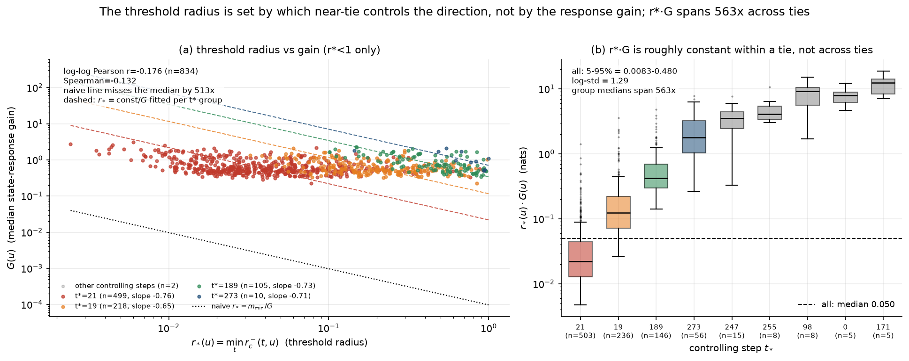
Setup. Same run. Panel (a) is a log–log scatter of $r_*(u)$ against $G(u)$ for the 834 directions with finite $r_*<1$ (166 directions have $r_*>1$; the threshold is above 1 and is not shown). Points are colored by the controlling step. The dashed lines are $r_*=c_t/G$ fitted separately inside each controlling-step group, with $c_t=\mathrm{median}(r_*G)$ for that group. The dotted line is the naive analytic guess $r_*=m_{\min}/G$ with the global minimum margin $m_{\min}=9.727\times10^{-5}$. Panel (b) is a box plot of $r_*G$ grouped by controlling step, with the number of directions in each group.
Axes. - (a) $x$: $r_*(u)=\min_t r_c^-(t,u)$ (threshold radius, log); $y$: $G(u)$ (median state-response gain, log). - (b) $x$: controlling step $t_*$; $y$: $r_*(u)G(u)$ (nats, log). A horizontal dashed line marks the median over all 834 directions.
Deriving the scaling. A step flips when $$m_t+\delta m_t\le0 \quad\Longleftrightarrow\quad \lvert\delta m_t\rvert\ge m_t\ (\delta m_t<0).$$ With $\delta m_t(u)=r\,g_t(u)$ and $g_t(u)=\lvert\delta m_t(u)\rvert/r$, $$r_c^-(t,u)=\frac{m_t}{g_t(u)}.$$ If the local sensitivity at the controlling step were proportional to the global gain, $g_{t_*}(u)=\beta_{t_*}\,G(u)$, then $$r_*(u)=\frac{m_{t_*(u)}}{\beta_{t_*(u)}\,G(u)},$$ so $r_*G=m_{t_*}/\beta_{t_*}$ should be constant within a group of directions sharing $t_*$, and should change across groups whenever $m_{t_*}$ or $\beta_{t_*}$ changes. This is the correct statement of the “$r_*\sim m/G$” intuition; the naive version with one global $m$ assumes that every direction is controlled by the same tie, which is false.
Global correlation. Over 834 directions, $$\mathrm{Pearson}\bigl(\log r_*,\log G\bigr)=-0.176\quad(p=3.1\times10^{-7}),\qquad \mathrm{Spearman}=-0.132.$$ So the raw correlation is weak, negative, and statistically detectable only because $n$ is large; $G$ explains about 3% of the variance in $r_*$. By contrast, $\mathrm{Pearson}(\log r_*,\log m_{t_*})=+0.742$ ($r^2=0.551$). A multiple regression $$\log r_*=2.863+0.695\log m_{t_*}-0.687\log G$$ has $R^2=0.610$: the margin of the controlling tie carries most of the explanatory power, and $G$ enters with a negative coefficient of the expected order ($-0.69$).
Within-group behavior. Inside a fixed controlling step, the slope of $\log r_*$ versus $\log G$ should be near $-1$ if $g_{t_*}\propto G$. It is:
| $t_*$ | $n$ | Pearson$(\log r_*,\log G)$ | slope | median $r_*G$ | p25–p75 of $r_*G$ | median $g_{t_*}/G$ |
|---|---|---|---|---|---|---|
| 21 | 503 | $-0.365$ ($p=2.9\times10^{-17}$) | $-0.806$ | 0.0222 | 0.0128–0.0446 | $4.37\times10^{-3}$ |
| 19 | 236 | $-0.302$ ($p=2.3\times10^{-6}$) | $-0.684$ | 0.1247 | 0.0718–0.2217 | $9.18\times10^{-3}$ |
| 189 | 146 | $-0.545$ ($p=1.2\times10^{-12}$) | $-0.978$ | 0.4250 | 0.3000–0.6926 | $5.23\times10^{-3}$ |
| 273 | 56 | $-0.591$ ($p=1.7\times10^{-6}$) | $-1.213$ | 1.7771 | 1.039–3.222 | $1.08\times10^{-2}$ |
| 247 | 15 | $-0.474$ ($p=0.074$) | $-2.447$ | 3.5006 | 2.442–4.416 | $3.20\times10^{-2}$ |
| 255 | 8 | $-0.515$ ($p=0.191$) | $-0.470$ | 4.0585 | 3.349–5.380 | $1.29\times10^{-2}$ |
| 98 | 8 | $-0.317$ ($p=0.444$) | $-0.627$ | 9.2162 | 5.638–10.508 | $5.22\times10^{-2}$ |
| 0 | 5 | $-0.759$ ($p=0.137$) | $-1.370$ | 7.9259 | 6.215–8.974 | $1.27\times10^{-2}$ |
| 171 | 5 | $-0.823$ ($p=0.087$) | $-1.670$ | 12.5128 | 8.392–14.142 | $4.31\times10^{-3}$ |
Within the four large groups the slope is between $-0.68$ and $-1.21$, i.e. close to the predicted $-1$; the correlation is weak but real because the local sensitivity $g_{t_*}$ has its own spread at fixed $G$. Across groups the median $r_*G$ goes from 0.0222 to 12.51, a factor 563. That is the collapse failure: the product is not a universal constant. The naive $m_{\min}/G$ line is below the data by a median factor of 513.
The product distribution. Over 834 directions, $r_*G$ has p5 $=0.00826$, p25 $=0.0184$, median $=0.0499$, p75 $=0.152$, p95 $=0.480$; log-standard-deviation 1.295, coefficient of variation 1.43, p95/p5 $=58$. This is not a constant.
Where the extra factor comes from. The local sensitivity at the controlling step is much smaller than the median state gain: $$g_{t_*}(u)=\frac{\lvert\delta m_{t_*}(u)\rvert}{r},\qquad \frac{g_{t_*}}{G}: \text{median }5.996\times10^{-3}\ (p5\ 9.13\times10^{-4},\ p95\ 2.50\times10^{-2}).$$ The median local sensitivity is $3.80\times10^{-3}$ nats per unit radius, about 0.6% of the median $G=0.583$. The correlation between $\log g_{t_*}$ and $\log G$ is only $+0.317$ (slope 0.77), so a strong direction is somewhat more effective at the tie, but only weakly. The reason is geometric: $G$ measures the norm of the full 5120-dimensional response, while $\delta m_t$ measures its projection onto one particular direction $W_{[\text{top1}_t]}-W_{[\text{top2}_t]}$. A direction can be strong overall and nearly orthogonal to that logit-difference vector, or weak overall and well aligned with it. The near-tie step $t=21$ is precisely such a case: its local gain is $2.61\times10^{-3}$, one of the smallest of the ten near-ties.
Why this quantity. The product $r_*G$ is the natural test of the hypothesis that “one scalar gain controls the threshold.” It is not a normalization chosen to make the data collapse; it is what the algebra predicts if $\delta m_t\propto G$. Showing that it fails by 563× across ties, while working approximately inside a tie, is the cleanest way to separate the two effects.
What the figure shows. (i) Within a tie, stronger directions do have smaller thresholds, with a slope near $-1$. (ii) Across ties, the margin $m_{t_*}$ dominates: a direction controlled by the $9.7\times10^{-5}$ tie has a threshold $\sim500$ times smaller than a direction of the same gain controlled by the $5\times10^{-2}$ tie. (iii) A single global $r_*\sim m/G$ law with one $m$ is wrong by two to three orders of magnitude.
What it does not show. It does not prove that the local sensitivity is unrelated to $G$ at every step; it shows the relation is weak at the controlling steps of this run. It does not include the 166 directions with $r_*>1$, where the linear extrapolation is farthest from the measured radius. And the within-group slopes are themselves uncertain for the small groups ($n\le15$), where the $p$-values are not significant.
Direct findings. 1. At $r=0.1$, 464/1000 directions flip some token; all 464 are controlled by $t=21$ (421) or $t=19$ (43). No other step produces a flip at this radius. 2. The three smallest-gap steps account for 88.5% of all controlling assignments (503 + 236 + 146 of 1000). 3. The signed response at a near-tie is almost symmetrically split: 52.9% destroy / 47.1% widen at $t=21$, 49.1%/50.9% at $t=19$, 50.7%/49.3% at $t=189$. 4. The responses at $t=21$ and $t=189$ are nearly independent across directions (Pearson $-0.142$; quadrants 245/284/262/209). There is no single “danger direction” shared by the two ties. 5. The state-response gain spans 13.7× (0.224–3.064, median 0.583), and the 24 stored response vectors are nearly orthogonal (mean cosine $+0.0025$; top PC 6.5%). The geometry is not 1-D. 6. The response grows 8.43× from state 6 to state 47 in absolute terms, but the relative response falls 2.47× because the baseline state norm grows 20.7×. State 0 is exactly zero. 7. Inside a controlling-step group, $\log r_*$ vs $\log G$ has slope $-0.68$ to $-1.21$; across groups the product $r_*G$ spans 563×. The controlling margin, not $G$, is the leading determinant of $r_*$ ($r^2=0.551$ alone; 0.610 with $G$). 8. The local logit-gap sensitivity at the controlling step is only $\sim0.6\%$ of the median state gain (median $g_{t_*}/G=6.0\times10^{-3}$), i.e. the decision direction is close to orthogonal to the typical response.
Limitations of this dump, stated explicitly.
- The engine's stored r_c/pred_T use $\lvert\delta m\rvert$ and overcount flips (810 vs 464). Use the signed recomputation.
- The response angle relative to the baseline state cannot be computed: only baseline norms and the state cosine were stored. The state cosine is 1 at float32 precision.
- $G$ uses state 47 (output of block 46), not the final-norm input that actually feeds the logits. For the 24 directions where both exist, $G_{47}/G_{\rm final}=4.06$ (p5 3.74, p95 4.20) with log-correlation 0.996; the proxy is a nearly constant rescaling, which is adequate for rankings and for the $r_*$ regression, but its absolute value should not be compared to final-norm numbers.
- Only one radius ($r=0.1$) was run. The threshold formula extrapolates linearly; the calibration run showed proportionality in $r\in[0.03,0.3]$, so the extrapolation to $r\sim0.002$–$0.05$ is an assumption, not a measurement.
- Teacher forcing holds the continuation fixed. The measured $\delta m_t$ is the response at each baseline step, before any divergence. It does not include the feedback of an already-flipped token.
- The 24 response vectors cover directions 0–23 only (20 from block 0, 4 from block 1). The pairwise-cosine result is a 24-dimensional sample of a 1000-dimensional ensemble.
- This run used full attention (see the correction note), so no part of the decay is attributable to the prompt leaving an attention window. The true-window run will separate that effect.
All numbers in this section are in notebook_big/figures/ds14_a1_deep_numbers.json; the figures are produced by scripts_spark/figs_a1_deep.py from results_big/ds14/a1_inter_full/a1.npz and meta.json.
At free-run radii $\rho=0.05,0.1,0.3$, the fraction of the 1000 directions that actually change the greedy continuation is 32.1%, 45.3% and 64.3%, against 31.6%, 46.4% and 67.1% predicted by the signed teacher-forced rule; at the calibrated radius $\rho=0.1$ there are 449 exact step matches, 1 wrong step, 14 false alarms and 3 misses out of 1000. Every flip happens at one of two razor-thin ties, $t=19$ or $t=21$ (plus 33 at $t=189$ and one at $t=273$ only at $\rho=0.3$), where the competing tokens are " reference" vs " research" and "Alright" vs "Okay". The stored 73.0/61.9/47.5% "post-flip agreement" is not a post-flip number: it averages over all directions, including the non-flipped ones that contribute exactly 1.0; among flipped directions the whole-run agreement is 16.0/15.9/18.4%, and strictly after the first flip it is 9.7/9.7/9.6%. After the shared 18-token restatement of the prompt the agreement falls to 1.7%, no run ever re-synchronises to the baseline, and the large apparent agreement is local boilerplate, not re-convergence. The flipped runs do re-converge to each other: all 33 saved raw continuations contain only three distinct texts, and flips at the two gates differ by a single token.
| item | value |
|---|---|
| model | DeepSeek-R1-Distill-Qwen-14B (48 blocks, hidden size 5120) |
| precision | FP32 |
| attention | full attention — the intended window-100 setting was silently inactive (correction note in the notebook); a true-window rerun is being generated |
| prompt | interstellar_travel, $P=65$ tokens, identical to the A1 run |
| baseline | $T=300$ greedy tokens, no sampling, no EOS stop |
| A1 (calibration) | 1000 unit directions at $r=0.1$, added to the prompt embeddings only; every perturbed pass teacher-forced on the baseline prompt_ids+gen_ids; 50 disjoint blocks of 20 non-zero coordinates per direction |
| free run | the same 1000 directions and the same perturbation construction, at $\rho\in\{0.05,0.1,0.3\}$; each row generates its own 300 greedy tokens with a KV cache |
| reference | an in-batch $r=0$ row in every chunk; it is not stored in gen_ids, but the non-flipped saved rows are bit-identical to A1's gen_ids |
| baseline identity | A1 top1[t] == gen_ids[t] for all $t$ (checked); the baseline is self-consistent |
| files | results_big/ds14/a1_inter_full/a1.npz, results_big/ds14/free_inter_full/free_run.npz, results_big/ds14/free_inter_full/summary.json |
Two data facts have to be stated before any number. (i) The summary's run field says results_big/ds14/a1_inter_w100, but the correction note applies: that run used full attention. The free rows confirm it — every non-flipped row equals the full-attention A1 gen_ids exactly. (ii) The writer of free_run.npz overwrote its all_gen dictionary once per generation chunk, so gen_ids contains only the last chunk: directions 989–999, 11 of 1000, at each radius. The mapping is not assumed: the first mismatch of each row reproduces obs[:,989:1000] exactly for all three radii, and non-flipped rows are bit-identical to A1. Direct token-level post-flip analysis therefore rests on 19 flipped rows (4 at $\rho=0.05$, 7 at $\rho=0.1$, 8 at $\rho=0.3$); the population statements below are recovered exactly from the stored whole-run agreement, as shown in §5.
Notation: $u$ indexes a direction, $t\in\{0,\dots,299\}$ a generated step, $m_t$ the top-1 minus top-2 logit gap of the unperturbed A1 run, $\delta m_t(u)$ its change under direction $u$ at the A1 radius $r=0.1$, and $\rho$ the free-run radius.
| symbol | explicit expression | meaning | why this quantity |
|---|---|---|---|
| $m_t$ | $\ell^{(1)}_t-\ell^{(2)}_t$ (nats) | gap between the two best tokens of the baseline | a flip needs this gap closed |
| $\delta m_t(u)$ | $m_t(u)-m_t$ (nats), stored dm |
first-order change of that gap at $r=0.1$ | response of the decision variable, measured without letting the text diverge |
| $r_c^-(t,u)$ | $m_t\,r/\max(-\delta m_t(u),0)$; $+\infty$ if $\delta m_t\ge0$ | radius at which step $t$ would flip | solve $-\delta m_t\ge m_t$ for the radius; only a negative $\delta m$ can close a gap |
| $r_*(u)$ | $\min_t r_c^-(t,u)$ | flux-tube radius | one number per direction: the largest radius that leaves every baseline argmax intact |
| $t_*(u)$ | $\arg\min_t r_c^-(t,u)$ | controlling tie | which near-tie is the global weak point |
| $T_{\rm pred}(\rho,u)$ | $\min\{t:\rho\ge r_c^-(t,u)\}$, $-1$ if no $t$ | first predicted flip in time | the prediction that the free run tests; $\rho\ge r_*(u)$ is equivalent to $T_{\rm pred}\ge0$ |
| ${\rm obs}(\rho,u)$ | first $t$ with free token $\ne$ baseline token, $-1$ if none | observed first flip | the experimental outcome |
| $A_{\rm after}(\rho,u)$ | $\frac{1}{T-{\rm obs}}\sum_{t>{\rm obs}}\mathbf 1[g_t=\hat g_t]$ | token agreement strictly after the first flip | does the run come back to the baseline text? |
| $A_{\rm late}(\rho,u)$ | the same sum for $t>{\rm obs}+45$ | agreement past the echoed task sentence | isolates genuine re-convergence from shared prompt restatement |
| $\Delta(u)$ | ${\rm obs}(\rho,u)-t_*(u)$ | latency relative to the controlling tie | "immediate" if 0, "delayed" if $>0$; negative is possible because the first crossing need not be the global minimum |
Signed versus sign-blind. The npz's stored r_c is built with $|\delta m_t|$, not $-\delta m_t$. Recomputation reproduces it to $1.5\times10^{-8}$, so the stored array is exactly $m_t r/|\delta m_t|$. A direction with $\delta m_t>0$ widens the gap and can never flip a top-1/top-2 decision, yet the sign-blind rule calls it a flip at a finite radius. At $\rho=0.1$ that rule predicts 810 flips against 464 for the signed rule; 360 of the 810 are directions that never mismatch in the free run (44.4% false-alarm rate). The signed rule's false-alarm rate is 3.0%. Every prediction below is the signed one.
First crossing versus argmin. $T_{\rm pred}$ is the first time the threshold is crossed, while $t_*$ is the time of the smallest threshold. These differ when an earlier step has a larger-but-still-crossed threshold: at $\rho=0.1$, 31 directions flip at $t=19$ while $t_*=21$. Those runs are exact predictions, not errors; the distinction is why $\Delta$ can be $-2$ without any failure of the rule.
| quantity | $\rho=0.05$ | $\rho=0.1$ | $\rho=0.3$ |
|---|---|---|---|
| observed flips / 1000 | 321 | 453 | 643 |
| predicted flips, signed / 1000 | 316 | 464 | 671 |
| predicted flips, sign-blind / 1000 | 599 | 810 | 969 |
| exact (obs $=T_{\rm pred}$) | 300 | 449 | 580 |
| wrong step | 1 | 1 | 37 |
| false alarm (pred flip, obs none) | 15 | 14 | 54 |
| miss (pred none, obs flip) | 20 | 3 | 26 |
| both none | 664 | 533 | 303 |
| classification accuracy | 96.4% | 98.2% | 88.3% |
| signed false-alarm rate | 4.75% | 3.02% | 8.05% |
| observed mean / median flip step | 20.9 / 21 | 20.7 / 21 | 29.2 / 21 |
| flips at $t=19$ / $t=21$ / $t=189$ / $t=273$ | 11 / 310 / 0 / 0 | 74 / 379 / 0 / 0 | 267 / 342 / 33 / 1 |
| post-flip agreement, population | 0.0969 | 0.0972 | 0.0962 |
| agreement after $t>{\rm obs}+45$ | 0.0172 | 0.0171 | 0.0171 |
The signed rule predicts the flip fraction to 0.5 percentage points at $\rho=0.05$ and 1.1 points at $\rho=0.1$; at three times the calibration radius it over-predicts by 2.8 points. The apparent rise of the mean flip step at $\rho=0.3$ is not a slowdown of the two main gates: the median is still 21, and the mean is pulled up by 34 late flips (33 at $t=189$, one at $t=273$).
ds14free_scorecard.png — the signed rule is nearly exact at and below the calibrated radius
Setup. All 1000 directions at each of the three radii. Each direction is assigned to exactly one class: exact if ${\rm obs}=T_{\rm pred}\ge0$; wrong step if both are $\ge0$ but differ; false alarm if $T_{\rm pred}\ge0$ and ${\rm obs}=-1$; miss if $T_{\rm pred}=-1$ and ${\rm obs}\ge0$; both none if $T_{\rm pred}={\rm obs}=-1$. The prediction uses the signed threshold $r_c^-$ recomputed from dm, and $T_{\rm pred}$ is the first crossing in time.
Axes. $x$: free-run radius $\rho$; $y$: number of directions, linear 0–1000. Bars are stacked in the order exact, wrong step, false alarm, miss, both none. Above each bar: observed and predicted flip counts. Counts below 30 are written as a callout to the right of the bar rather than inside a sliver.
Numbers.
| class | $\rho=0.05$ | $\rho=0.1$ | $\rho=0.3$ |
|---|---|---|---|
| exact | 300 | 449 | 580 |
| wrong step | 1 | 1 | 37 |
| false alarm | 15 | 14 | 54 |
| miss | 20 | 3 | 26 |
| both none | 664 | 533 | 303 |
| exact / predicted flips | 94.9% | 96.8% | 86.4% |
| exact / observed flips | 93.5% | 99.1% | 90.2% |
What is in the figure. - At $\rho=0.1$ — the radius at which $\delta m$ was measured — the scorecard is almost diagonal: 449 exact, 1 wrong step, 14 false alarms, 3 misses. The rule gets the event right for 982/1000 directions and the step right for 449/453 observed flips. - At $\rho=0.05$, below the calibration radius, the pattern is the same with a slightly larger miss count: 300 exact, 1 wrong step, 15 false alarms, 20 misses. The misses are not exotic third-token flips. Their smallest threshold radius lies in $[0.0509,0.147]$ with median 0.0567 (13% above $\rho$) and 90th percentile 0.0738 (48% above); only the extreme tail reaches 2–3x $\rho$. The false alarms have smallest threshold in $[0.0405,0.0492]$, just below $\rho$. The flip/no-flip boundary is sharp, and the misses are a small threshold-calibration error, not a qualitative failure. - At $\rho=0.3$, three times the radius at which the response was measured, linear extrapolation degrades: 580 exact, 37 wrong step, 54 false alarms, 26 misses. The false alarms again sit just below threshold (smallest $r_c$ median 0.159, maximum 0.297), while the misses reach as high as $r_c=13.2$: at this radius some directions flip without their top-1/top-2 gap ever being predicted to close, which is the signature of a genuinely nonlinear response or of a third token overtaking. - The sign-blind rule is not a viable alternative at any radius: 599/810/969 predicted flips and 49.7/44.4/34.4% false-alarm rates, against 4.8/3.0/8.1% for the signed rule (numbers in the JSON and §1.2).
What it shows. The signed teacher-forced rule is a calibrated predictor of whether a random prompt perturbation destroys the greedy continuation, and at the measurement radius it also predicts the exact step for 99% of the flips. The degradation at $\rho=0.3$ is confined to the step/threshold assignments; even there, 88.3% of directions are classified correctly.
What it does not show. It does not validate the rule at radii above 0.3 or below 0.05, nor for a different prompt or a different model. It does not show that a "miss" is a top-1/top-2 flip at all: the free run records only tokens, not the logits after divergence, so the missing third-token hypothesis cannot be tested here. And because the prediction and the free run share the same dm measurement, the agreement is not an independent estimate of the linear response — it is a test of whether that response extrapolates to a different radius and to free generation.
ds14free_survival.png — survival curves agree to 0.035
Setup. $S(t)=P(\text{first flip}>t)$, with a never-flipped direction treated as first flip $=+\infty$. Observed: from obs; predicted: from the signed $T_{\rm pred}(\rho,u)$. Both are step functions on $t=0,\dots,299$, one panel per radius. Vertical dotted lines mark $t=19$ and $t=21$.
Axes. $x$: generated step $t$, linear 0–300; $y$: survival probability, linear 0–1. Black solid: observed; red dashed: predicted signed.
Numbers.
| $\rho=0.05$ | $\rho=0.1$ | $\rho=0.3$ | |
|---|---|---|---|
| $S(19)$ observed / predicted | 0.989 / 0.988 | 0.926 / 0.925 | 0.733 / 0.720 |
| $S(21)$ observed / predicted | 0.679 / 0.684 | 0.547 / 0.536 | 0.391 / 0.356 |
| $S(189)$ observed / predicted | 0.679 / 0.684 | 0.547 / 0.536 | 0.358 / 0.329 |
| max $|S_{\rm obs}-S_{\rm pred}|$ (step) | 0.005 ($t=21$) | 0.011 ($t=21$) | 0.035 ($t=21$) |
What is in the figure. - Up to $t=19$ both curves are at 1.0: no direction flips before the first near-tie. The first drop is a single token at $t=19$, then the much larger drop at $t=21$: at $\rho=0.1$, 7.4% of directions are already gone at 19 and another 37.9% at 21, leaving 54.7% intact. - The predicted curve is slightly below the observed one at $\rho=0.3$ after $t=21$ (0.356 vs 0.391 at 21, 0.329 vs 0.358 at 189), which is the same 26 misses seen in the scorecard (the prediction flips more directions than are observed). At $\rho=0.05$ and $0.1$ the two curves are within 0.011 everywhere. - The late shoulder at $t=189$ exists only at $\rho=0.3$: 3.3% of directions flip there and one at $t=273$. The prediction puts 2.7% at 189 and none at 273.
What it shows. The entire distribution of first-flip times is reproduced, not just its mean: the two near-ties at 19 and 21, the absence of any earlier event, and the small late tail at the largest radius. A rule calibrated from teacher-forced gaps at $r=0.1$ predicts the survival curve of free-running generation.
What it does not show. Survival only records the first event; it says nothing about what happens after a flip. A curve that matches at $t\le21$ is compatible with completely different texts afterwards, which is exactly what §5 finds. It also does not resolve the mechanism of the 26 misses at $\rho=0.3$: they could be nonlinear threshold shifts or third-token flips.
ds14free_latency.png — the flips are immediate, and the step is predicted
Setup. Top row: histogram of observed first-flip steps, using only the steps that occur (19, 21, 189, 273); the never-flipped directions are annotated, not plotted on the log axis. Bottom row: bubble matrix of predicted step $T_{\rm pred}$ against observed step, all 1000 directions, including $-1$ ("never"). Bubble area scales as $\sqrt{n}$ and colour as $\log_{10} n$; labels give the count. The diagonal is the perfect prediction.
Axes. Top: $x$: observed step (categorical, only observed values); $y$: directions, log. The shaded band marks the two razor-thin ties. Bottom: $x$: predicted step; $y$: observed step; both categorical with ticks $\{-1,19,21,189,273\}$.
Numbers.
| $\rho=0.05$ | $\rho=0.1$ | $\rho=0.3$ | |
|---|---|---|---|
| immediate, ${\rm obs}=t_*$ | 315 | 422 | 496 |
earlier than $t_*$, ${\rm obs}| 6 |
31 |
132 |
|
| delayed, ${\rm obs}>t_*$ | 0 | 0 | 15 |
| ${\rm obs}-T_{\rm pred}=0$ | 300 | 449 | 580 |
| ${\rm obs}-T_{\rm pred}=\pm2$ | 1 | 1 | 24 |
| larger step errors | 0 | 0 | 13 |
| mean / median observed step | 20.9 / 21 | 20.7 / 21 | 29.2 / 21 |
What is in the figure. - At $\rho=0.05$ and $0.1$ every flip is at 19 or 21; there are no delayed flips at all. The six (resp. 31) "early" runs are not early relative to the first crossing: they are directions whose global minimum is at 21 but whose $r_c(19)$ is already below $\rho$, so $T_{\rm pred}=19$. They are counted as exact in the scorecard. - At $\rho=0.3$, 119 of the 132 early runs are the same $\pm2$ effect (19 vs 21). The remaining 13 jump between the 21/19 pair and 189/273: 9 flip at 21 although the global minimum is at 189 ($\Delta=-168$), 3 at 21 with $\Delta=-170$, one at 19 with $\Delta=-252$. The 15 delayed runs are the mirror image: 7 flip at 189 although the global minimum is at 21 ($\Delta=+168$), one at 189 with $\Delta=+170$, 5 at 21 with $\Delta=+2$, and one each with $\Delta=+11$ and $\Delta=+21$. - The mean 29.2 at $\rho=0.3$ is entirely composition: $(267\cdot19+342\cdot21+33\cdot189+1\cdot273)/643=29.18$, while the median stays 21. The late flips are 5.3% of the outcomes but add $[33(189-21)+1(273-21)]/643=9.0$ points to the mean. - The bubble matrix shows that the 580 exact directions are the two large diagonal bubbles at 21 (310) and 19 (248), plus 22 at 189. Off-diagonal mass is concentrated in the 19↔21 block and in the 21↔189 block; there is no diffuse scatter, because only four steps ever occur.
What it shows. Latency is not a free parameter: the rule predicts not only that a direction flips but at which of the two ties, and the "delayed" phenomenon is essentially absent at and below the calibration radius. At $\rho=0.3$ the rule still identifies the right pair of gates; the residual error is which member of the pair, or whether the 189 gate fires first.
What it does not show. It does not show that a flip at 19 is a different physical event from a flip at 21: both lead to the same alternative continuation (§6). The latency classes use $t_*=\arg\min r_c$, so the negative entries are a definitional artefact of first-crossing versus argmin, not evidence of a failure; measured against $T_{\rm pred}$ the same runs are exact. And the late 189/273 events are observed only at one radius, so their rate is not a calibrated function of $\rho$.
ds14free_resync.png — the 73% "post-flip agreement" is an average over non-flipped runs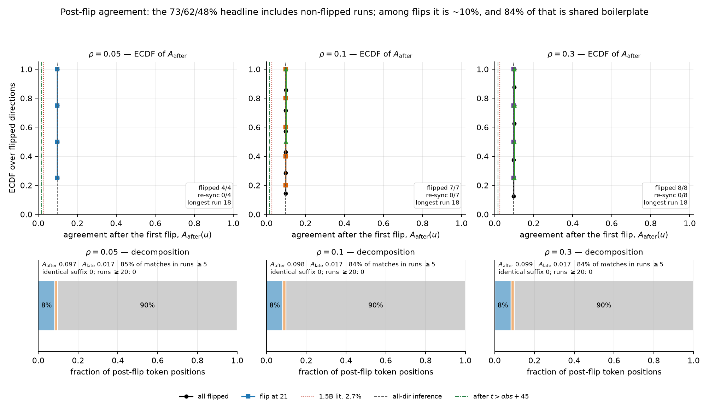
Setup. The stored summary.json field mean_postflip_agreement is, despite its name, the mean of agreement[ri,u] over all 1000 directions and over the whole 300-token run. The free-run writer computes agreement as the fraction of the 300 positions where the perturbed generation equals its in-batch $r=0$ reference, so a direction with obs=-1 contributes exactly 1.0. The figure decomposes that mean. Top row: ECDF of the directly measured $A_{\rm after}(u)$ for the 11 saved directions, separately for flips at 19 and 21; vertical lines mark the all-direction inference, the 1.5B literature value quoted in the brief (2.7%), and $A_{\rm late}$ ($t>{\rm obs}+45$). Bottom row: the post-flip token positions split into matches inside runs of length $\ge5$, isolated matches, and mismatches. The direct measurement uses 19 flipped rows; the population value is recovered algebraically below.
Axes. Top: $x$: $A_{\rm after}(u)$, linear 0–1; $y$: ECDF over flipped directions. Bottom: $x$: fraction of post-flip token positions; $y$: none (single stacked bar).
The population algebra. Let $f$ be the observed flip fraction, $\bar A$ the stored whole-run mean over all directions, and $\bar o$ the mean first-flip step among flipped directions. Non-flipped directions have $A=1$ exactly (obs=-1 means no mismatch anywhere). Hence the mean whole-run agreement among flipped directions is
$$\bar A_{\rm flip}=\frac{\bar A-(1-f)}{f},$$
and, because the prefix $t<{\rm obs}$ matches and the position $t={\rm obs}$ does not, the mean agreement strictly after the flip is
$$\bar A_{\rm after}=\frac{\bar A_{\rm flip}T-\bar o}{T-\bar o}.$$
This uses only stored quantities and is exact under the definition of obs; it reproduces the directly measured sample to the third decimal.
| $\rho=0.05$ | $\rho=0.1$ | $\rho=0.3$ | |
|---|---|---|---|
stored mean_postflip_agreement (all dirs, whole run) |
0.7303 | 0.6192 | 0.4754 |
| implied mean whole-run, among flipped | 0.1599 | 0.1595 | 0.1841 |
| implied mean after the first flip | 0.0969 | 0.0972 | 0.0962 |
| directly measured $A_{\rm after}$, saved rows | 0.0971 | 0.0979 | 0.0986 |
| directly measured $A_{\rm late}$ ($t>{\rm obs}+45$) | 0.0172 | 0.0171 | 0.0171 |
| re-synchronised runs (sustained suffix $\ge20$) | 0 / 4 | 0 / 7 | 0 / 8 |
What is in the figure.
- The headline 73.0/61.9/47.5% is a mixture, not a post-flip measurement. It falls with $\rho$ only because the flip fraction rises: 0.7303 = 0.679·1.0 + 0.321·0.1599, and similarly for the other radii. The agreement among flipped directions is remarkably constant, 0.159–0.184, and the strictly post-flip value is constant at 0.096–0.097.
- The small rise of the whole-run value among flipped directions at $\rho=0.3$ (0.184 vs 0.160) is not better agreement: 34 of the 643 flips happen at 189/273, so those runs have less time to diverge. The post-flip value stays at 0.096.
- The direct token analysis shows what the matching tokens are. Of the 108 matching post-flip positions across the 4 saved $\rho=0.05$ flips, 92 (85%) lie in just two contiguous runs: ", so I need to" (5 tokens immediately after the gate) and an 18-token run at $t=28$–$45$, " a comprehensive technical review of current and proposed propulsion systems for interstellar travel. The user has". The second is a verbatim restatement of the prompt sentence. Pooled over all 19 flipped rows, 437 of the 519 matching tokens (84.2%) are inside runs of length $\ge5$; outside those runs only 82 of the remaining 4,857 positions match (1.7%).
- After $t={\rm obs}+45$ the agreement is 1.7%, and it never returns. The longest identical run anywhere after a flip is 18 tokens (the prompt echo); the identical-suffix length is 0 for every flipped row; the last token differs in every case. Under the stated definition — 20 consecutive identical tokens, or an identical suffix of 20 — the re-synchronisation count is 0/19.
- The flip-19 and flip-21 variants differ at exactly one token (the $t=19$ gate), agreement 0.9967. All rows that flip at the same gate are bit-identical over all 300 tokens. Across the 33 saved rows (11 directions × 3 radii) there are only three distinct continuations: the baseline, the alternative entered at $t=21$, and the alternative entered at $t=19$ (one token different from the second).
What it shows. The apparent 73% is not a cross-scale anomaly; it is a mixture artefact. Once the mixture is removed, the 14B behaves like the 1.5B literature value: token agreement after a flip is ~9.7% if the shared prompt restatement is counted, and ~1.7% if it is not, against 2.7% quoted for the 1.5B with no re-synchronisation. The correct cross-scale statement is therefore no major difference, not a 27-fold one. What does differ is the ensemble behaviour: perturbed runs re-converge to one another almost perfectly (pairwise agreement 0.9967–1.0), because they all enter the same alternative basin, while none re-converges to the baseline.
What it does not show. The direct ECDF rests on 19 flipped rows, all from the saved final chunk (directions 989–999); the population curve is inferred, not measured token-by-token. It cannot separate "synonym-like gate token" from "same semantic plan" as causes: "Alright"→"Okay" is a discourse-marker substitution, and " reference"→" research" is a plausible noun substitution, but the downstream essays are different outlines, not paraphrases of the same sentences. Token agreement is not semantic agreement — the two texts are both on-topic reviews, so a human would call them similar even though 90% of tokens differ. And the 2.7% 1.5B number is quoted from the brief, not recomputed on the same protocol here; the comparison is order-of-magnitude, not a controlled cross-model contrast.
ds14free_flipword.png — what the two competing tokens are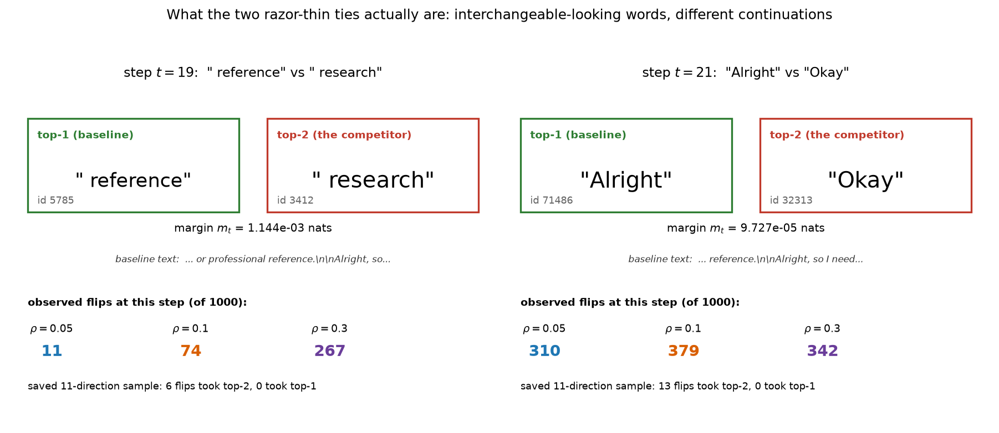
Setup. The unperturbed A1 top-1 and top-2 tokens at the two gates, decoded with assets/tok_ds14/tokenizer.json (the tokenizers library), with their token ids and the logit margin $m_t$. Below each gate: the number of directions whose first mismatch is at that step, per radius, and which token the 11-direction saved sample took.
Axes. None (text cards); the numbers are counts of directions.
Numbers.
| gate | top-1 (baseline) | top-2 (competitor) | $m_t$ (nats) | observed first flips at the gate, $\rho=0.05/0.1/0.3$ | saved flips taking top-2 |
|---|---|---|---|---|---|
| $t=19$ | " reference" (id 5785) |
" research" (id 3412) |
$1.144\times10^{-3}$ | 11 / 74 / 267 | 6 / 6 |
| $t=21$ | "Alright" (id 71486) |
"Okay" (id 32313) |
$9.727\times10^{-5}$ | 310 / 379 / 342 | 13 / 13 |
(The saved-flips column is six of six and thirteen of thirteen across all radii; no saved flip took top-1.)
What is in the figure.
- The two gates are ordinary words in an ordinary sentence. The baseline reads "...or professional reference.\n\nAlright, so I need to provide a comprehensive technical review...". A $t=19$ flip gives "...or professional research.\n\nOkay, so I need to write a comprehensive technical review..."; a $t=21$ flip gives "...professional reference.\n\nOkay, so I need to write...". Both alternatives then continue with the same essay, which is why the flip-19 and flip-21 texts differ by one token.
- $t=21$ is the thinner tie by a factor 11.8 ($9.7\times10^{-5}$ vs $1.14\times10^{-3}$ nats), and it is the dominant gate at the two smaller radii (310/321 flips at $\rho=0.05$, 379/453 at $\rho=0.1$). At $\rho=0.3$ the 19 gate gains ground (267 vs 342, still behind 21 but far closer than the 74 vs 379 at $\rho=0.1$).
- Both gate words are near-synonyms in context (Alright/Okay; reference/research after "professional"), so the first few tokens look almost unchanged: the first 5 post-flip tokens match 100% (flip at 21) or 80% (flip at 19), the first 10 match 90%/80%, the first 20 match 95%/90%. That local agreement is the synonym-like part (these window fractions are for the representative saved rows, dir 989 at $\rho=0.05$ and dir 995 at $\rho=0.1$). It does not persist: the first 50 match only 46%/48%, and after $t={\rm obs}+45$ only 1.7% of the remaining 254 positions match.
- At $\rho=0.3$ two further gates appear: 33 flips at $t=189$ (" by" vs " about", $m=2.22\times10^{-3}$ nats) and one at $t=273$ ("," vs " today", $m=1.92\times10^{-2}$ nats). They are 5.3% of the flips and do not change the two-gate picture at the calibrated radius.
What it shows. The answer to "what are the two competing tokens": at $t=21$, "Alright" (baseline, id 71486) and "Okay" (id 32313, taken by all 13 saved runs whose first flip is at 21); at $t=19$, " reference" (baseline, id 5785) and " research" (id 3412, taken by all 6 saved runs whose first flip is at 19). Both are single-token, locally interchangeable substitutions at the two smallest logit gaps in the run. They are not random vocabulary: they are the two best candidates of a nearly tied decision.
What it does not show. The token identity is directly verified only for the 19 saved flips; for the other 1000-direction runs the evidence is that their first mismatch step is 19 or 21 and that the only tracked competitor at those steps is top-2. A third token overtaking top-1 without top-2 winning cannot be excluded from obs alone, but it is not observed in any saved row. And a one-token substitution at the gate does not imply a one-token change in meaning: §5 shows the essays diverge from token 24 onward.
layer_types field that the stock config does not set). Non-flipped saved rows are bit-identical to the full-attention A1 gen_ids, so the validation is internally consistent, but it is not a window-100 validation. A true-window rerun is being generated; the window can change the margin spectrum, so the $t=19/21$ gate structure may move in that run.gen_ids contains only the final chunk. The writer overwrote its dictionary per chunk, so raw tokens exist for directions 989–999 only. The mapping was verified against obs; the direct post-flip ECDF is 19 rows, and the population post-flip value is an algebraic inference from the stored whole-run means, not a token-level census.mean_postflip_agreement is the whole-run agreement averaged over all directions, with non-flipped directions at exactly 1.0. It must not be quoted as "agreement after the flip". The corrected values are 0.0969/0.0972/0.0962 (post-flip) and 0.0172/0.0171/0.0171 (after the prompt echo).dm no longer describes the state. The analysis can say where and when a run left the baseline and how far it went, but it cannot compute a causal threshold radius for the new text."Alright"→"Okay" and " reference"→" research".python scripts_spark/figs_free_full.py
Writes notebook_big/figures/ds14free_{scorecard,survival,latency,resync,flipword}.png (dpi 170) and notebook_big/figures/ds14free_numbers.json, which contains the full scorecard, the sign-blind comparison, the latency distributions, the survival curves, the per-run post-flip records (including the decoded longest shared run), the population inference, and the decoded gate tokens with their ids. The script reads the two npz files and the summary in place; it does not modify them. The tokenizer is assets/tok_ds14/tokenizer.json via the tokenizers package.
Under a verified sliding window of 100, the free run at $\rho=0.1$ flips 483/1000 directions (48.3%) against 493 predicted by the signed rule (49.3%): 478 exact steps, 2 wrong steps, 13 false alarms, 3 misses, 98.2% classified correctly. At $\rho=0.3$ it flips 703/1000 (70.3%) against 723 predicted (72.3%), with 625 exact, 41 wrong steps, 57 false alarms, 37 misses (86.5%). The two early ties are unchanged by the window: the margins at $t=19$ and $t=21$ are bit-identical to the full-attention run (the prompt is 65 tokens, so the window cannot drop a key before generated step $t=36$), and the flip counts at 19/21 are literally the same numbers, 74/379 at $\rho=0.1$ and 267/342 at $\rho=0.3$. The window adds one new razor tie at $t=297$ — " These" vs " Each", $m=4.8\times10^{-3}$ nats — which is the entire excess at $\rho=0.1$ (483 = 453 + 30); at $\rho=0.3$ it reorganises the late gates (271 and 297 replace the full-attention 189 and 273). With gen_ids now complete for all 1000 directions at both radii, the post-flip analysis is a census of all 1186 flipped runs: every one took top-2 at its gate, post-flip agreement for the long-horizon flips is 10.5%/10.1% (2.6%/2.0% after the prompt echo), and 0/1186 re-synchronise to the baseline. The longest shared run anywhere is 17 tokens, the verbatim prompt echo.
| item | value |
|---|---|
| model | DeepSeek-R1-Distill-Qwen-14B, FP32 |
| attention | true sliding window 100 (actuation verified; no key is dropped for $t\le35$ by construction) |
| prompt | interstellar_travel, $P=65$ tokens, $T=300$ generated tokens |
| A1 calibration | 1000 directions at $r=0.1$, teacher-forced on the baseline |
| free run | same 1000 directions and perturbation, $\rho\in\{0.1,0.3\}$, greedy, own KV cache |
| files | results_big/ds14/a1_inter_w100/a1.npz, results_big/ds14/free_inter_w100/{free_run.npz,summary.json} |
Data integrity. This run fixes the accumulation bug: gen_ids is 2 x 1000 x 300. All 1000 rows at each radius reproduce obs exactly (first_mismatch == obs), the 517 (resp. 297) non-flipped rows are bit-identical to the A1 gen_ids, and the stored whole-run agreement is recovered from the raw rows to $3\times10^{-8}$. The A1 baseline is self-consistent (top1[t] == gen_ids[t] for all $t$).
Notation as in the full-attention section: $m_t$ is the top1–top2 gap of the unperturbed A1 run, $\delta m_t(u)$ its change at $r=0.1$, $r_c^-(t,u)=m_t r/\max(-\delta m_t(u),0)$, $T_{\rm pred}(\rho,u)=\min\{t:\rho\ge r_c^-(t,u)\}$, and ${\rm obs}$ is the first generated token that differs from the baseline. The npz's r_c is the sign-blind $m_t r/|\delta m_t|$; every prediction below uses the signed $r_c^-$. $A_{\rm after}$ is the token agreement strictly after ${\rm obs}$, $A_{\rm late}$ the same for $t>{\rm obs}+45$.
| quantity | $\rho=0.1$ | $\rho=0.3$ |
|---|---|---|
| observed flips / 1000 | 483 | 703 |
| predicted flips, signed | 493 | 723 |
| predicted flips, sign-blind | 834 | 976 |
| exact (${\rm obs}=T_{\rm pred}$) | 478 | 625 |
| wrong step | 2 | 41 |
| false alarm | 13 | 57 |
| miss | 3 | 37 |
| both none | 504 | 240 |
| classification accuracy | 98.2% | 86.5% |
| signed false-alarm rate | 2.64% | 7.88% |
| observed mean / median flip step | 37.8 / 21 | 56.9 / 21 |
| flips at $t=19/21/271/297$ | 74 / 379 / 0 / 30 | 267 / 342 / 6 / 88 |
| $A_{\rm after}$, flips at 19/21 | 0.105 | 0.101 |
| $A_{\rm late}$ ($t>{\rm obs}+45$) | 0.026 | 0.020 |
The signed rule tracks the flip fraction to 1.0 point at $\rho=0.1$ and 2.0 points at $\rho=0.3$. The sign-blind rule predicts 834/976 flips with 42.4%/28.7% false alarms and is rejected as before.
ds14w100free_scorecard.png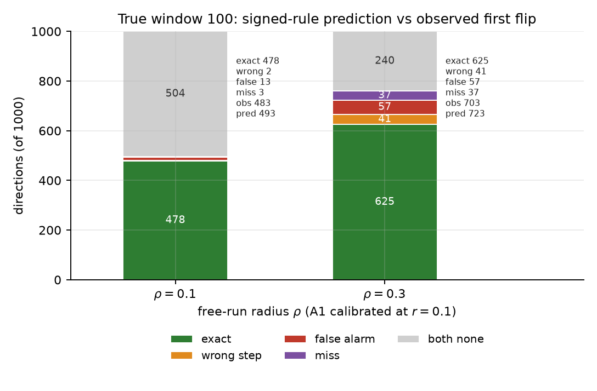
All 1000 directions at each radius, one class per direction (exact, wrong step, false alarm, miss, both none).
| class | $\rho=0.1$ | $\rho=0.3$ |
|---|---|---|
| exact | 478 | 625 |
| wrong step | 2 | 41 |
| false alarm | 13 | 57 |
| miss | 3 | 37 |
| both none | 504 | 240 |
| exact / predicted flips | 97.0% | 86.4% |
| exact / observed flips | 99.0% | 88.9% |
ds14w100free_survival.png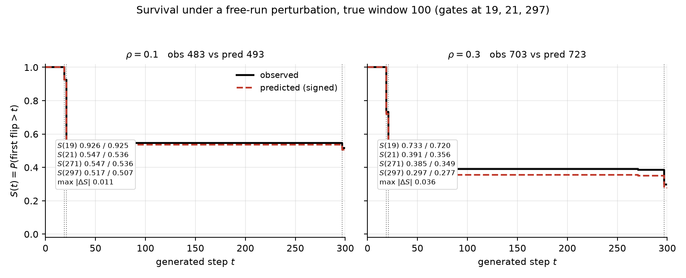
$S(t)=P(\text{first flip}>t)$, never-flipped treated as $+\infty$; observed vs signed prediction, one panel per radius.
| $\rho=0.1$ | $\rho=0.3$ | |
|---|---|---|
| $S(19)$ obs / pred | 0.926 / 0.925 | 0.733 / 0.720 |
| $S(21)$ obs / pred | 0.547 / 0.536 | 0.391 / 0.356 |
| $S(271)$ obs / pred | 0.547 / 0.536 | 0.385 / 0.349 |
| $S(297)$ obs / pred | 0.517 / 0.507 | 0.297 / 0.277 |
| max $|S_{\rm obs}-S_{\rm pred}|$ | 0.011 ($t=21$) | 0.036 ($t=21$) |
The distribution of first-flip times is reproduced, including the new drop at $t=297$. At $\rho=0.1$ there is no event between 21 and 297: the curve is flat at 0.547 for 276 steps, then loses the 30 directions that flip at 297. At $\rho=0.3$ the predicted curve is consistently 0.013–0.036 below the observed one after $t=19$, the same 37 misses seen in the scorecard.
ds14w100free_latency.png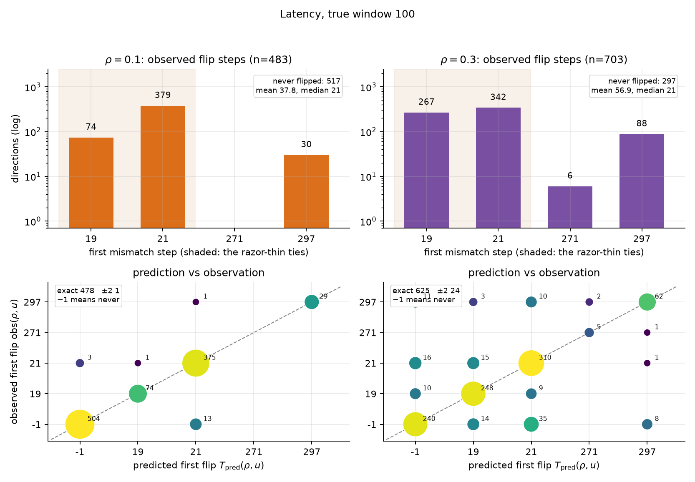
Top: histogram of observed first-flip steps. Bottom: predicted vs observed step, all 1000 directions.
| $\rho=0.1$ | $\rho=0.3$ | |
|---|---|---|
| immediate (${\rm obs}=t_*$) | 448 | 527 |
| earlier than $t_*$ | 35 | 164 |
| delayed (${\rm obs}>t_*$) | 0 | 12 |
| ${\rm obs}-T_{\rm pred}=0$ | 478 | 625 |
| $\pm2$ | 1 | 24 |
| larger step error | 1 | 17 |
ds14w100free_resync.png — full census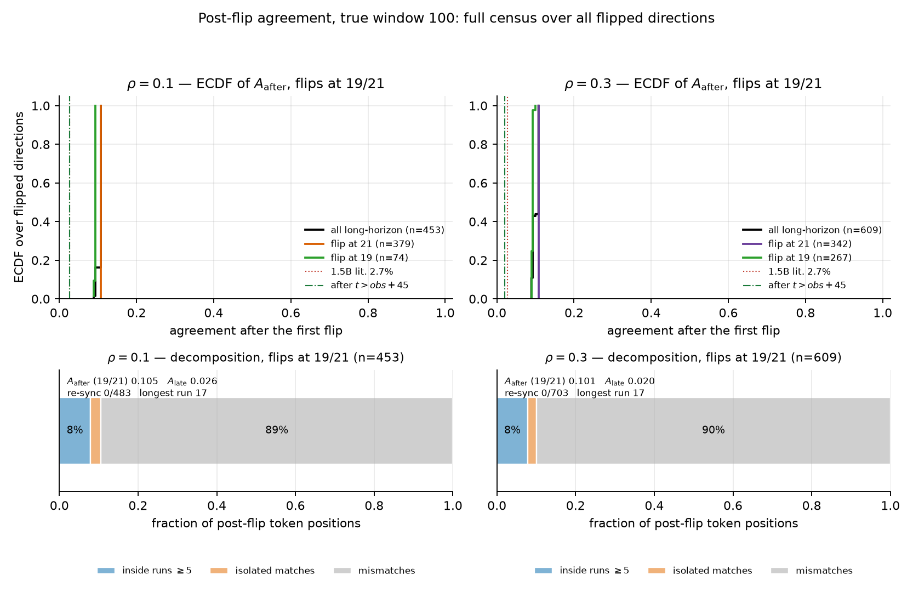
With every row decoded, this is no longer an inference. Over the 1186 flipped rows:
| $\rho=0.1$ | $\rho=0.3$ | |
|---|---|---|
| flipped rows | 483 | 703 |
| $A_{\rm after}$, flips at 19/21 | 0.1054 | 0.1010 |
| $A_{\rm after}$, flips at 19 only | 0.0925 | 0.0921 |
| $A_{\rm after}$, flips at 21 only | 0.1079 | 0.1079 |
| $A_{\rm late}$ ($t>{\rm obs}+45$) | 0.0265 | 0.0202 |
| matching positions inside runs $\ge5$ | 75.0% | 78.1% |
| re-synchronised (run $\ge20$ or suffix $\ge20$) | 0 / 483 | 0 / 703 |
| longest identical run | 17 | 17 |
| distinct continuations (flipped) | 4 | 9 |
| pairwise agreement, flipped (sample) | 0.773 | 0.493 |
" a comprehensive technical review of current and proposed propulsion systems for interstellar travel. The user", a verbatim echo of the prompt; the identical-suffix length is 0 for every flipped row. Under the stated definition the count is 0/1186.mean_postflip_agreement is 0.6222/0.4876, a mean over all directions and the whole run. Removing the non-flipped directions ($A=1$) and the matched prefix gives 0.1049/0.1003, which matches the measured 0.1054/0.1010.ds14w100free_flipword.png — the three ties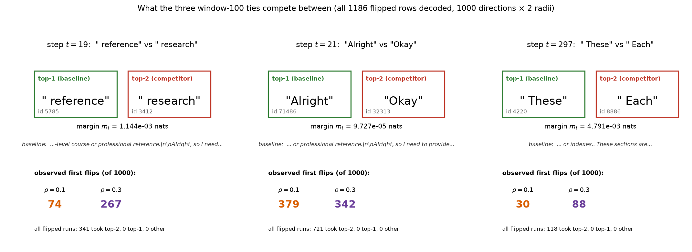
| gate | top-1 (baseline) | top-2 (competitor) | $m_t$ (nats) | observed first flips $\rho=0.1/0.3$ |
|---|---|---|---|---|
| $t=19$ | " reference" (5785) |
" research" (3412) |
$1.144\times10^{-3}$ | 74 / 267 |
| $t=21$ | "Alright" (71486) |
"Okay" (32313) |
$9.727\times10^{-5}$ | 379 / 342 |
| $t=297$ | " These" (4220) |
" Each" (8886) |
$4.791\times10^{-3}$ | 30 / 88 |
| ($t=271$) | " key" (1376) |
" target" (2169) |
$5.221\times10^{-2}$ | 0 / 6 |
What the new tie competes between. The baseline text is
"... additional elements like appendices or indexes.. These sections are"
and a $t=297$ flip reads
"... additional elements like appendices or indexes.. Each of these"
So " These" $\to$ " Each" is a sentence-initial determiner swap between two grammatical continuations; only three tokens ($t=298,299$) follow it inside the 300-token horizon, so its downstream text cannot be compared here. The gate is the third-smallest gap in the window run (after 21 and 19) and controls 29 directions at $\rho=0.1$: 174 directions have $t_*=297$ and 34 have $r_*\le0.1$, but for 29 of them 297 is the first crossing, which is what $T_{\rm pred}$ reports. All 29 predicted crossings are exact; one further direction flips at 297 while predicted at 21.
All 1186 flipped rows took top-2 at their gate; none took top-1 or a third token. The 271 gate is not razor-thin ($5.2\times10^{-2}$ nats) and only fires at $\rho=0.3$ (6 rows, two downstream branches).
| full $0.1$ | w100 $0.1$ | full $0.3$ | w100 $0.3$ | |
|---|---|---|---|---|
| observed flips / 1000 | 453 | 483 | 643 | 703 |
| predicted flips (signed) | 464 | 493 | 671 | 723 |
| exact | 449 | 478 | 580 | 625 |
| wrong step | 1 | 2 | 37 | 41 |
| false alarm | 14 | 13 | 54 | 57 |
| miss | 3 | 3 | 26 | 37 |
| both none | 533 | 504 | 303 | 240 |
| classification accuracy | 98.2% | 98.2% | 88.3% | 86.5% |
| agreement after flip | 0.097 | 0.105 | 0.096 | 0.101 |
| mean flip step | 20.7 | 37.8 | 29.2 | 56.9 |
| flips at 19 / 21 / late gates | 74/379/0 | 74/379/30 | 267/342/34 | 267/342/94 |
"Each of these") is locally grammatical.python scripts_spark/figs_free_w100.py
Writes notebook_big/figures/ds14w100free_{scorecard,survival,latency,resync,flipword}.png and ds14w100free_numbers.json (full scorecards, sign-blind comparison, gate table, latency, survival curves, census-level post-flip records, variant counts, and the recomputed full-attention reference). It also asserts the gen_ids census, the baseline identity, and the reproduction of the summary fields.
The same prompt, seed and 1000 directions were run twice on DeepSeek-R1-Distill-Qwen-14B in FP32, once with full attention and once with a true sliding window of 100 tokens (the layer_types patch was verified by a bitwise departure test). The two runs are bit-identical up to generated step 34 and first differ at exactly $t=35=W-P$, as the window law requires; the greedy text itself changes at $t=45$. The same two razor ties survive: $m_{21}=9.727\times10^{-5}$ and $m_{19}=1.144\times10^{-3}$ nats in both runs, and 418 and 41 of the windowed flips are still controlled at $t=21$ and $t=19$. The window adds one new late tie at $t=297$ ($m=4.79\times10^{-3}$ nats), which raises the predicted flip fraction from 46.4% to 49.3% without removing a single full-attention flip. The last-layer response jumps by a factor 2.20 across $t=35$ (the 1.5B showed 1.73), the typical response gain rises from 0.58 to 1.49, and the late-time response decays to 0.58 of its early value under full attention but stays at 0.93 under the window. In other words the window does not cut the late response: it makes it larger and more bursty, because only one prompt position leaves the window per step and the perturbation survives in the generated-token states that stay inside it.
| item | full attention | true window 100 |
|---|---|---|
| model | DeepSeek-R1-Distill-Qwen-14B (48 blocks, hidden size 5120) |
same |
| precision / decoding | FP32, TF32 off; greedy, fixed length | same |
| prompt | interstellar_travel, $P=65$ tokens |
same |
| continuation | $T=300$ baseline greedy tokens | same, but a different text from $t=45$ |
| directions | $K=1000$, 50 disjoint simplex blocks of 20, unit norm on the $65\times5120$ prompt embeddings | same construction, same seed |
| radius | $r=0.1$ only | same |
| attention | full: the request window=100 was silently inactive (transformers gates it on layer_types, which the stock config does not set) |
true: patched, window 100, verified |
| saved states | indices $[0,6,12,18,24,30,36,42,47]$ | same |
| file | results_big/ds14/a1_inter_full/a1.npz |
results_big/ds14/a1_inter_w100/a1.npz |
| wall time | 1590.6 s | 1606.8 s |
Two auxiliary files are used for checks, not for the main comparison:
results_big/ds14/a1_inter_w4096/a1.npz — 32 directions, 500 tokens, window 4096. Its first 300 baseline tokens are identical to the full-attention run's and its margins differ from them by at most $4.8\times10^{-5}$ nats (batch-shape round-off). It confirms that the full-attention run is a valid "no clipping within the horizon" reference.results_big/ds14/calib/calib.npz — 8 directions, 400 tokens, 9 radii, meta.json says window: 100. It is not a true-window run. Its first 300 baseline tokens are identical to the full-attention run's (not to the windowed run's) and its margins differ from the full run's by at most $7.2\times10^{-5}$ nats. The window field in these metadata files records the requested value, not the active mask (the full-attention meta also says window: 100). The calibration therefore establishes radius linearity for full attention only; it is used below with that caveat.dh_norm[:, P:P+T]) and the margin of the token predicted from position $P+t-1$. The first margin difference is therefore at $t=36$, one step after the first state difference. The first token difference is at $t=45$; the two baseline continuations diverge there (" has" versus "'s"), so every margin, threshold and response after $t=45$ refers to a different text in the two runs.Let $u$ index a direction and $t\in\{0,\dots,299\}$ a generated step. All thresholds use the signed rule, because only a negative change of the top-1/top-2 gap can close it.
| symbol | explicit expression | meaning | why it is used |
|---|---|---|---|
| $m_t$ | $\ell_t^{(1)}-\ell_t^{(2)}$ (nats) | gap between the two best tokens of that run's own baseline | a flip requires this gap to be closed |
| $\delta m_t(u)$ | $m_t(u)-m_t$ (nats, stored dm) |
change of that gap under direction $u$ at $r=0.1$ | response of the decision variable without letting the text diverge |
| $r_c^-(t,u)$ | $m_t\,r/\max(-\delta m_t(u),0)$; $+\infty$ if $\delta m_t\ge0$ | radius at which step $t$ would flip | solve $-\delta m_t\ge m_t$ for the radius |
| $r_*(u)$ | $\min_t r_c^-(t,u)$ | threshold radius of the direction | flips at the run radius iff $r_*(u)\le0.1$ |
| $t_*(u)$ | $\arg\min_t r_c^-(t,u)$ | controlling step | which near-tie is the weak point |
| $\rho_t^{47}(u)$ | $\lVert\delta h_t^{47}(u)\rVert/r$ | absolute response of the last saved state (layer 47) per unit radius | the quantity that the window acts on |
| $G(u)$ | $\mathrm{median}_t\,\rho_t^{47}(u)$ | typical last-state gain of the direction | one number per direction, robust to single-step bursts |
| $\Phi$ | $\mathrm{median}_{t\in[36,45]}\rho_t^{47}\big/\mathrm{median}_{t\in[25,34]}\rho_t^{47}$ | flush ratio across the first clipped position | tests the 1.5B flush signature |
| $\Lambda$ | $\mathrm{median}_{t\in[150,300)}\rho_t^{47}\big/\mathrm{median}_{t\in[0,50)}\rho_t^{47}$ | late-time fraction | tests whether the window suppresses the late response |
The two windows in $\Phi$ and $\Lambda$ are pooled over directions and steps; medians over directions at each step, then over steps, give the same answers to within 5% and are reported in the JSON.
| quantity | full attention | true window 100 |
|---|---|---|
| smallest margin, step | $9.727\times10^{-5}$ (t=21) | $9.727\times10^{-5}$ (t=21) |
| second margin, step | $1.144\times10^{-3}$ (t=19) | $1.144\times10^{-3}$ (t=19) |
| median / mean margin over 300 steps (nats) | 3.096 / 5.00 | 1.826 / 2.92 |
| margins below 0.05 / 0.1 / 0.5 | 4 / 8 / 34 | 6 / 9 / 52 |
| predicted flips at $r=0.1$ | 464 (46.4%) | 493 (49.3%) |
| flips controlled at t=19 / 21 / 297 | 43 / 421 / 0 | 41 / 418 / 34 |
| flips that are new under the window | — | 29, all at t=297 |
| flush ratio $\Phi$ | 0.99 | 2.20 |
| late fraction $\Lambda$ | 0.58 | 0.93 |
| median gain $G$ | 0.583 | 1.493 |
| depth growth, state 1 -> state 8 | x8.4 | x38.6 |
| first differing baseline token | — | t=45 (" has" vs "'s") |
ds14reg_margins.png — the early razor ties are untouched; every late near-tie is new
Setup. Both runs, same prompt, same directions, $r=0.1$. Each panel plots the full margin trace $m_t$ of that run's own greedy continuation, $t=0\dots299$. The grey band on the left is the region $t\le35$ where the two runs are identical by construction (it contains both razor ties); the dashed line is $t=35=W-P$. Dotted horizontals are 0.05, 0.1 and 0.5 nats. The inset lists the five smallest gaps and the number of steps below each threshold; the eight smallest are given in the table below.
Axes. $x$: generated step $t$ (0 = first generated token), 0–300. $y$: top-1 minus top-2 logit gap in nats, log scale $6\times10^{-5}$–40, chosen freely because the gaps span six decades.
Numbers.
| rank | full attention (step: nats) | true window 100 (step: nats) |
|---|---|---|
| 1 | 21: $9.727\times10^{-5}$ | 21: $9.727\times10^{-5}$ |
| 2 | 19: $1.144\times10^{-3}$ | 19: $1.144\times10^{-3}$ |
| 3 | 189: $2.224\times10^{-3}$ | 297: $4.791\times10^{-3}$ |
| 4 | 273: $1.916\times10^{-2}$ | 145: $4.010\times10^{-2}$ |
| 5 | 255: $5.151\times10^{-2}$ | 88: $4.050\times10^{-2}$ |
| 6 | 171: $5.394\times10^{-2}$ | 239: $4.109\times10^{-2}$ |
| 7 | 168: $8.033\times10^{-2}$ | 271: $5.221\times10^{-2}$ |
| 8 | 205: $8.067\times10^{-2}$ | 152: $5.965\times10^{-2}$ |
| threshold (nats) | full | window |
|---|---|---|
| $m_t<0.05$ | 4 | 6 |
| $m_t<0.1$ | 8 | 9 |
| $m_t<0.5$ | 34 | 52 |
| median $m_t$ | 3.096 | 1.826 |
What is in the figure.
- The first two gaps are identical to the bit, because both steps precede the first clipped margin at $t=36$. The two ties are not merely "similar"; they are the same numbers.
- The margin traces diverge from $t=36$ onward. The maximum difference is 20.0 nats at $t=53$, where the full run has a very confident decision (21.2 nats) and the windowed run has a nearly tied one (1.20 nats; different tokens: ids 51998/24306 vs 11/13).
- The whole spectrum shifts down under the window: the median gap falls from 3.096 to 1.826 nats and the mean from 5.00 to 2.92, so the count below 0.5 nats rises from 34 to 52. This is not caused by the truncation of a few states; it is a property of the different continuation.
- The late near-tie list is completely replaced. Full attention has 189, 273, 255, 171, 168, 205; the window has 297, 145, 88, 239, 271, 152. Only $t=21$ and $t=19$ survive.
- The baseline text itself changes at $t=45$: full continues "The user has specified several systems to compare: chemical rockets, nuclear propulsion, ..."; the window continues "The user's query is detailed, well-organized, suitable for a graduate-level course or professional reference. The document is detailed, well...". The windowed text is visibly more repetitive (see §3 and §8).
What it shows. The window changes the decision landscape in two distinct ways: it raises the number of gaps below 0.05 nats from 4 to 6 and below 0.5 nats from 34 to 52, and it replaces every late weak point with a new one, while leaving the two earliest ties exactly where they were.
What it does not show. It cannot say whether a given late margin differs because the attention renormalisation changed the state or because the text took a different branch at $t=45$; after $t=45$ the two traces are margins of different sentences. It also says nothing about which of these late ties would actually flip a free-running windowed continuation, because no such run exists yet and the thresholds are teacher-forced predictions.
ds14reg_response_shape.png — a x2.2 flush at the first clipped token, then bursts
Setup. For each run, $\rho_t^{47}(u)=\lVert\delta h_t^{47}(u)\rVert/r$ at the last saved state (layer 47), median over the 1000 directions at each step; the shaded band is the 25–75% range over directions. Both curves use their own run's baseline (the perturbed and unperturbed forward passes of the same run), so the difference is the response to the same direction under the two attention masks — after $t=45$ on two different baseline sentences. Dashed line: $t=35=W-P$. Log $y$.
Axes. $x$: generated step $t$, 0–300. $y$: $\lVert\delta h_t^{47}\rVert/r$, median and interquartile band, log scale 0.15–25.
Numbers.
| quantity | full | true window 100 |
|---|---|---|
| median $\rho^{47}$ over $t\in[25,34]$ (pre-clip) | 0.836 | 0.836 |
| median $\rho^{47}$ over $t\in[36,45]$ | 0.832 | 1.837 |
| flush ratio $\Phi$ | 0.99 | 2.20 |
| $\Phi$ from per-step medians (median of ratios) | 0.93 | 2.11 |
| steps with median $\rho^{47}>3$ | 1 / 300 | 57 / 300 |
| largest per-step median $\rho^{47}$ | 3.15 at $t=258$ | 15.25 at $t=291$ |
Step-by-step ratio of the two median curves just after the first clip:
| step | $\rho^{47}$ full | $\rho^{47}$ window | window / full |
|---|---|---|---|
| 35 | 0.0877 | 0.0910 | 1.04 |
| 36 | 0.0864 | 0.2059 | 2.38 |
| 37 | 0.0592 | 0.1414 | 2.39 |
| 38 | 0.0751 | 0.1585 | 2.11 |
The per-state flush ratio for the window run is 1.65 (state 1, block 0), 2.83 (state 2), 2.72, 2.32, 2.11, 2.12, 2.02, 2.20 (state 8, layer 47); for the full run it lies between 0.92 and 1.12 at every state.
What is in the figure.
- The two curves are identical up to $t=34$. At $t=35$ the windowed response is 4% larger; at $t=36$ it is 2.4x larger, and it stays around 2x through $t=45$. This is the same flush the 1.5B showed, with a larger amplitude (2.20 against 1.73).
- The flush is strongest at shallow depth: 2.83 at state 2, against 1.65 at state 1 and 2.20 at the last state. The effect of the truncation is largest just after the first block and is partly damped on the way to layer 47.
- Beyond $t=50$ the windowed curve does not decay smoothly. It has two burst stretches, $t\approx114$–$132$ and $t\approx260$–$294$, where the median response reaches 6–15 per unit radius; the full run never exceeds 3.15. These stretches coincide with the most repetitive passages of the windowed text ("...sections like an introduction, a structure, then sections on..." around $t=114$; "introduction, structure, content organization, conclusion..." around $t=270$). The coincidence is suggestive but not a controlled test.
- In the troughs between bursts the windowed curve falls to 0.3–1.0, so the median over $[150,300)$ is 1.03 while the burst steps reach 15. The median is the robust statistic used below; the band shows the spread over directions is wide at every step.
What it shows. The true window produces the advertised flush at the first clipped prompt position, with a depth-dependent amplitude. It does not suppress the deep response later; if anything it amplifies it, intermittently.
What it does not show. The median curve is not a typical trajectory: the 25–75% band is a factor 2–3 wide and the bursts are a population effect, not a single direction blowing up. It does not establish that repetition causes the bursts (the text is itself an output of the window), and it cannot separate the direct effect of dropping a prompt key from the indirect effect of the different continuation. The response is measured at one radius only; a larger radius may leave the linear regime.
ds14reg_rstar.png — 46.4% -> 49.3% predicted flips, all of them still at the same two ties
Setup. Left: empirical distribution (ECDF) of the signed threshold radius $r_*(u)=\min_t r_c^-(t,u)$ over all 1000 directions, for both runs, truncated at $r_*=60$ (the largest finite value is 55.5). The vertical dashed line is the measurement radius $r=0.1$; the dotted horizontals are the predicted flip fractions. Right: the number of directions whose controlling step is each of eight steps, for both runs.
Axes. Left: $x$: threshold radius $r_*$, log, $2\times10^{-3}$–60; $y$: fraction of directions, 0–1. Right: $x$: directions with that controlling step, 0–590; $y$: step $t_*$, categorical.
Numbers.
| quantity | full | true window 100 |
|---|---|---|
| predicted flip fraction at $r=0.1$ | 46.4% (464) | 49.3% (493) |
| $r_*$ p10 / p50 / p90 / p95 | 0.0171 / 0.116 / 2.59 / 7.21 | 0.0171 / 0.104 / 1.85 / 3.47 |
| $r_*>1$ | 166 | 148 |
| controlling step 21 / 19 | 503 / 236 | 488 / 201 |
| controlling step 297 / 276 | 0 / 0 | 174 / 80 |
| flips controlled at 19 / 21 / 297 | 43 / 421 / 0 | 41 / 418 / 34 |
| flips shared with the other run | 464 | 464 |
| flips present only in this run | 0 | 29 (all at t=297) |
What is in the figure. - The two ECDFs are indistinguishable below $r_*\approx0.02$ and separate only in the upper tail. The median threshold falls from 0.116 to 0.104 and the 90th percentile from 2.59 to 1.85; the window makes the average direction somewhat easier to flip, but not dramatically. - The flip fraction is 46.4% under full attention, exactly the number in the earlier A1 section, and 49.3% under the window: a rise of 2.9 percentage points. - The flip sets are nested: every one of the 464 full-attention flips is also a predicted flip at $r=0.1$ under the window. The 29 new flips are all controlled at $t=297$, the window's new late near-tie ($m=4.79\times10^{-3}$ nats). Five further directions have their controlling step moved to $t=297$ while already flipping at 19 or 21, which is why 34 flips are attributed to $t=297$. - The controlling-step counts stay concentrated: 68.9% of all directions have $t_*=21$ or $19$ under the window (73.9% full), and 93.1% of the windowed flips are decided at those two steps (100% full). The window adds a third late gate; it does not replace the first two.
What it shows. The window changes the count of predicted flips by +2.9 points, but changes the mechanism of the extra flips completely: they come from a new late tie, not from the two razor ties moving. This is the opposite of the 1.5B window comparison quoted in the introduction: there the minimum margin moved from 0.0201 to 0.0031 and the controlling step changed. On the 14B the minimum margin is at $t=21$, before the first clipped position, so it cannot move; the window's effect appears only in the late tail.
What it does not show. These are predicted flips from a first-order teacher-forced response, not observed free-run flips. The prediction for the window run uses the window's own margins and dm on its own text; it is a statement about that continuation, not about all windowed continuations. The ECDF is truncated at 60; the tail above that is not shown. And the +29 is an addition to the flip set, not evidence that a free-running window run would flip 29 more directions: the linear rule is calibrated at $r=0.1$ but not re-validated on a windowed free run.
ds14reg_direction_gain.png — the typical gain is 2.6x larger and the late decay nearly disappears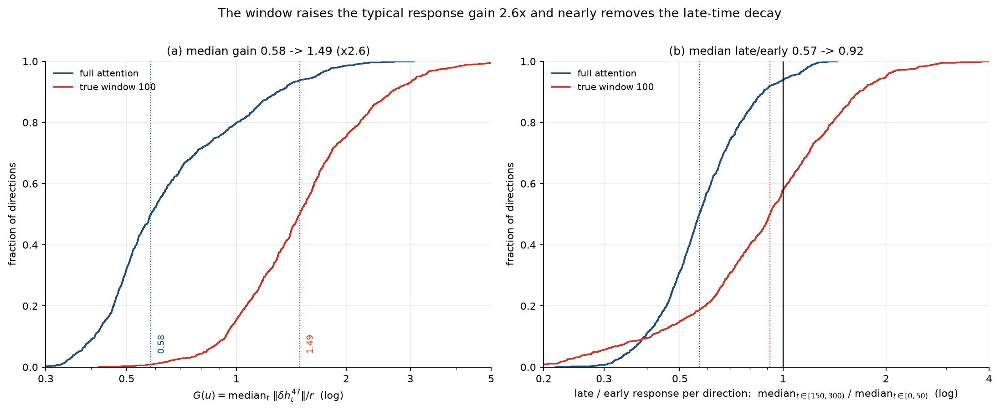
Setup. Left: ECDF of $G(u)=\mathrm{median}_t\lVert\delta h_t^{47}(u)\rVert/r$ over the 1000 directions, both runs. Right: ECDF of the per-direction late/early ratio $\mathrm{median}_{t\in[150,300)}\rho_t^{47}(u)\big/\mathrm{median}_{t\in[0,50)}\rho_t^{47}(u)$, both runs; the vertical black line is 1 (no change), the dotted lines are the medians.
Axes. Left: $x$: $G(u)$, log, 0.3–5; $y$: fraction of directions. Right: $x$: late/early ratio, log, 0.2–4; $y$: fraction of directions.
Numbers.
| quantity | full | true window 100 |
|---|---|---|
| $G$ p10 / p50 / p90 | 0.409 / 0.583 / 1.297 | 0.936 / 1.493 / 2.659 |
| $G$ mean | 0.738 | 1.670 |
| median per-direction late/early | 0.570 | 0.917 |
| median per-direction late/pre-clip early ($t\in[25,34]$) | 0.594 | 1.147 |
| pooled late/early ($\Lambda$) | 0.577 | 0.930 |
| directions with late/early $>1$ | 6.1% | 42.3% |
What is in the figure. - The entire gain distribution shifts right by a factor 2.6 at the median. The shift is not a few outliers: p10 rises from 0.41 to 0.94 and p90 from 1.30 to 2.66, so the two ECDFs barely overlap. - Under full attention the late response is systematically smaller than the early one: the median direction retains 57% of its $[0,50)$ response, and 94% of directions are below 1. Under the window the median retains 92%, and 42% of directions are above 1. - Measured against the pre-clip level $[25,34]$, which is bit-identical in the two runs, the contrast is sharper: full falls to 0.59, the window rises to 1.15. The window does not cut the late response; it roughly preserves it, and at depth it increases it. - The premise "the window cuts the prompt's direct influence after $t=35$, so the late response should be smaller" is not what the data show. The direct prompt visibility does fall — one prompt position leaves per step, and none are left after $t=99$ — but by then the perturbation has been written into the key/value states of generated tokens that remain inside the window, and those states feed every later step. The late response is therefore carried by the generated-token chain rather than by direct prompt attention, and it is larger, not smaller. The data cannot apportion the effect between attention reweighting, the different continuation, and deep-layer amplification.
What it shows. The window raises the response gain of every direction and nearly removes the late-time decay that full attention shows. The effect is a population shift, not a tail.
What it does not show. $G$ is an absolute norm; the response relative to the residual-stream norm stays small (about $10^{-4}$ typically and $10^{-3}$ at the largest burst), so "larger gain" does not mean a destabilised state. The comparison is between two different texts after $t=45$, so the late/early ratio mixes the mask effect with the continuation effect. The $[0,50)$ window contains the flush in the windowed run, which inflates its denominator; the $[25,34]$ variant is given for that reason.
ds14reg_depth_gain.png — the window halves block 0 and doubles layer 47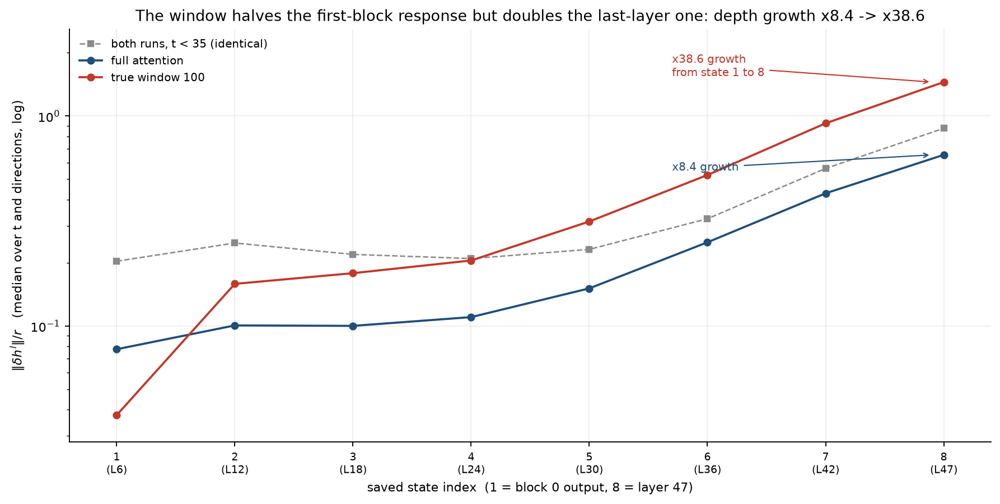
Setup. For each saved state $l$, the median of $\lVert\delta h^l(u)\rVert/r$ over all directions and all 300 steps, both runs. The dashed grey line is the same quantity computed on $t<35$ only; there the two runs are bit-identical, so one line serves both and it is a direct check that the pre-window depth profile is the common starting point. State 0 is omitted because its response is exactly zero (the perturbation is added to the prompt embeddings, not to the generated-token embeddings).
Axes. $x$: saved state index 1–8, labelled with the layer the engine stored (state 1 = block 0 output, layer 6; state 8 = layer 47). $y$: $\lVert\delta h^l\rVert/r$, median over $t$ and directions, log 0.028–2.6.
Numbers.
| state (layer) | full, all $t$ | window, all $t$ | both, $t<35$ |
|---|---|---|---|
| 1 (6) | 0.0775 | 0.0376 | 0.2035 |
| 2 (12) | 0.1006 | 0.1587 | 0.2484 |
| 3 (18) | 0.1001 | 0.1785 | 0.2192 |
| 4 (24) | 0.1102 | 0.2051 | 0.2095 |
| 5 (30) | 0.1510 | 0.3145 | 0.2317 |
| 6 (36) | 0.2504 | 0.5237 | 0.3241 |
| 7 (42) | 0.4285 | 0.9234 | 0.5626 |
| 8 (47) | 0.6532 | 1.4509 | 0.8739 |
| growth 1→8 | x8.4 | x38.6 | x4.3 |
What is in the figure. - Before the window acts, the depth profile is identical in the two runs: it rises from 0.2035 at block 0 to 0.8739 at layer 47, a factor 4.3. - Averaged over all 300 steps, full attention lowers the whole profile because the late response decays: 0.0775 at block 0 to 0.6532 at layer 47 (factor 8.4). The window lowers block 0 further (0.0376, half the full-run value) but raises every state from 2 upward, ending at 1.4509 at layer 47 (2.2x the full-run value; factor 38.6 from block 0). - The two profiles cross between states 1 and 2 relative to each other (window below full at state 1, above it from state 2 on); the window profile crosses its own pre-window level between states 4 and 5. Shallow layers see a smaller time-averaged response under the window, deep layers a larger one. This is the opposite of a uniform attenuation, and it is consistent with the shallow flush being damped on the way down while the late bursts accumulate at depth.
What it shows. The window reverses the direction of the depth change: the response becomes more top-heavy, not uniformly weaker. The growth from the first block to layer 47 rises from 8.4x to 38.6x.
What it does not show. The profile is descriptive: it mixes two effects (the time average includes the late bursts and the different text) and the eight states are samples, not all 48 blocks. A monotone statement about every layer is not justified. The pre-window line is a check on the setup, not a separate condition.
" has" vs "'s"). Every margin, threshold and response after that step describes a different sentence. The design is paired in prompt and directions, not in continuation.results_big/ds14/calib/ has window: 100 in its metadata and was intended as a true-window calibration, but its baseline tokens equal the full-attention run's and its margins match them to $7\times10^{-5}$ nats. The window was inactive in that run too. Radius linearity is therefore established for full attention (at layer 47, $\mathrm{d}h/r$ is flat to 1.1% between $r=0.03$ and $0.3$, and rises at $r\ge1$), not for the windowed run. The windowed run provides a single radius."...professional reference. The document is detailed, well-organized, suitable for a graduate-level course or professional reference..."). The two response bursts fall inside the most repetitive stretches. Whether the repetition causes the bursts is an open question and the natural target of the windowed free run.python scripts_spark/figs_w100_vs_full.py
Writes notebook_big/figures/ds14reg_{margins,response_shape,rstar,direction_gain,depth_gain}.png (dpi 170) and notebook_big/figures/ds14reg_numbers.json. The JSON contains the eight smallest margins and threshold counts per run, the full median response profiles, the per-state flush ratios, the burst ranges, the $r_*$ distributions, the gain distributions, the controlling-step tables, the flip-set comparison, the radius-linearity table, and both auxiliary checks. The script reads the npz files in place and does not modify them.
Six true sliding-window runs of All six runs share the identical With a sliding window of width $W$, the generated position $P+t$ attends only
to positions $\max(0,P+t-W+1)\ldots P+t$. A perturbed prompt position $p$
(0-indexed) is therefore inside the window while
$p\ge P+t-W+1$, i.e. while $t\le p+(W-P)$; the first generated step at which
it is gone is
$$t^*(p)=p+(W-P).$$
For a direction $u$ whose perturbed positions have maximum $p_{\rm last}(u)$,
the block-0 response must fall to the floor at
$$t^*_1(u)=p_{\rm last}(u)+(W-P),$$
because before that at least one perturbed position is visible and after it
none is. Deeper blocks keep a response longer: block $\ell$ at position
$P+t$ reads block-$(\ell-1)$ states at previous positions inside its own
window, so the last possible path carries the information one window span
per block,
$$t^*_\ell=t^*_1+(\ell-1)(W-1).$$
This is a strict upper bound on the last nonzero contribution (a "front"),
not a claim about where the response becomes numerically invisible. When
$P>W$ the formula still applies: positions $p The brief asks for the first $t$ with So the literal test gives no deaths at all, and the reason is visible in
the last two columns: the response bottoms out at the same
$2$–$3\times10^{-5}$ in every window. This is not physics. The residue is present at every step,
before and after the expected death, and its size scales with the state norm:
it behaves like fp32 round-off from the different batch shapes (a single-row
baseline forward versus perturbed rows in batches of 8), not like a surviving
response. At block 0 the relative size is
$\approx1.0\times10^{-6}$ of the state norm (median norm 29.9,
hence $3\times10^{-5}$). At deeper states the residue scales with the larger
residual norm, reaching $2.3$–$3.5\times10^{-6}$ relative at layers 8–47
($1.7\times10^{-4}$ to $3.1\times10^{-3}$ absolute). The residue is
direction-independent in size and present at every step, including the
pre-death plateau, so it cannot be mistaken for a surviving response. At
$W=500$ the directions with the latest support do not reach the floor inside
the 500-token horizon (their predicted death is at 490–499); the 5th
percentile of the tail is then only a floor estimate, not evidence that all
directions died, which is why no $W=500$ direction is counted as resolved.
On the 1.5B the baseline and perturbed passes are numerically identical at
zero response, and exact zeros do occur (§8). Death is therefore defined in this section as the first step that starts
the final excursion below the round-off floor: Setup. Each point is one direction: predicted death step
$p_{\rm last}(u)+(W-P)$ on $x$, measured death (first step at the floor, rule
above) on $y$; one colour per window. Panel (a) is state 1 (block-0 output),
which should follow the law exactly. Panels (b) and (c) are states 2 and 3,
which are tested against the cascade bound $t^*_\ell$; the line there is a
bound, so all points must be at or below it. Open black squares in (a) are the
1.5B's exact zeros (four directions per window, five windows); they are not
used in any 14B statistic. Axes. $x$: predicted step, tokens since the first generated token.
$y$: measured death step. Both axes share the identity line; limits are
chosen per panel to contain every point. No logarithmic compression. Numbers. The "unresolved" directions are not failures of the law: at $W=500$ the
predicted death is $490$–$499$, leaving fewer than 11 steps, and at large $W$
the pre-death signal of directions with late $p_{\rm last}$ has decayed to
within a factor 3 of the floor, so the crossing step cannot be localised
better than a token or two. The maximum absolute deviation among all 831
resolved directions is 3 tokens, in one $W=200$ direction. What it shows. The equality holds to the token wherever the measurement
is resolved: for $W=50$ and $W=100$ every single direction dies exactly at
$p_{\rm last}+(W-P)$, with no scatter at all (240/240 and 205/205). The
identity line is not a fit. The support of $p_{\rm last}$ is the same in
every run (55–64), so the five colours that have resolved points occupy
disjoint diagonal segments at the predicted offsets $W-65$: this is a scan
of the window width, not of the directions. What it does not show. It cannot show the exact zero the brief asked
for, for the numerical reason in §1.3. It also cannot distinguish "the
response is exactly zero" from "the response is below $3\times10^{-5}$";
the 1.5B points show that where the exact zero is observable, the two
coincide. It says nothing about what happens at $W>500$ with 500 tokens,
because the predicted death then lies beyond the horizon. Setup. Panel (a): for each window, the median over directions of the
measured death at saved state $l$ (solid, markers) and of the predicted bound
$t^*_l$ computed from each direction's own $t^*_1$ (dashed, same colour).
$W=100$ and $W=200$ are drawn bold, the other windows thin for context.
Panel (b): the 1500-token cascade run
( Axes. $x$: saved state index $l$ (1 = block-0 output; the saved-state
spacing in depth is not uniform, but the cascade prediction depends only on
the index). $y$: death step, median over directions. Linear axes; the dashed
bounds have slope $W-1$ by construction. Numbers. Median deviation (measured − bound), in tokens, with the 5th–95th percentile range:
$W=50$: state 2 −9 [−17,−1], state 3 −29.5 [−44,−11], state 4 −50 [−69,−17],
state 6 −107, state 8 −180; $W=100$: state 2 −27 [−42,−6], state 3 −70
[−96,−43], state 4 −111 [−138,−60]; $W=150$: state 2 −32, state 3 −129;
$W=200$: state 2 −50 [−77,−16]. For every cascade state ($l\ge2$), 100% of
resolved directions die at or before the bound except $W=50$ state 2, where
one direction is one token late ($98.7\%$ at or before). State 1 is the
equality of §2, so its ±1–3 token jitter puts a minority of points on either
side of the line. The 1500-token run (panel b), state by state. Bound $t^*_l=92+99(l-1)$;
"death" is the §1.3 threshold crossing; "zero" is the first bitwise-zero step: All 8 directions are resolved at every state (112 of 112 direction-states),
and all 112 threshold deaths are at or before the bound. What it shows. The threshold death is an amplitude landmark, not the
cascade. On the 1500-token run the measured medians move from 92 to 454.5 over
14 states, a slope of 26 tokens per state, while the bound moves by 99; the
median gap is already −22 at $l=2$, −64 at $l=3$, −120 at $l=4$, and −924.5 at
$l=14$. The 500-token early-death finding is therefore confirmed and extended
rather than revised: for $W=100$, state 2 is −22 here against −27 in the
500-token run, state 3 −64 against −70, state 4 −120 against −111 (different
runs and direction sets, same effect). From $l=7$ the threshold medians
saturate — 388, 401, 415.5, 429.5, 447, 447, 447, 454.5 — moving 67 tokens
while the bound moves 693, because deeper states start with a larger peak
($13\times$ the floor at $l=1$, $577\times$ at $l=14$) but their late-time
decay reaches the $10^{-6}$ cap at nearly the same step. That saturation is a
property of the threshold, not a physical time. The literal test behaves the opposite way. At What it does not show. The exact-zero equality is support geometry, not an
amplitude law: it says when the last path is cut, not how strong it is. The
residue issue is also batch-dependent, not resolved: the 500-token runs
( Setup. Three support-scan runs at $W=100$: 240 directions restricted to
prompt positions $[0,22)$, $[22,44)$ and $[44,65)$, 300 tokens, the same
prompt, the same fixed tokens, the same direction construction. Each
direction's $p_{\rm last}$ is computed from its own restricted coordinates;
prediction $p_{\rm last}+35$ (because $W-P=35$). Points: one per direction,
colour by support. Everything except the support is held fixed — this is the
controlled version of the law. Axes. $x$: predicted death step $p_{\rm last}+35$. $y$: measured death
step (state 1, same floor rule). Identity line dashed. Equal aspect. Numbers. What it shows. All 720 directions are resolved and all lie within two
tokens of $p_{\rm last}+35$; the latest-support group is exact for 240/240.
The three clusters are disjoint and separated by exactly the $p_{\rm last}$
shift (about 22 and 21 tokens). This rules out the
alternative explanation that the death step is set by the window width alone
or by the token index: the width and the prompt are identical; only the
support moved, and the death step moved with it one-for-one. What it does not show. It is a single window width ($W=100$); it does not
test the $(W-P)$ term (that is the six-window scan in §2). The +1/+2 tokens
in the early groups are floor-crossing jitter, not a second mechanism. Setup. Two prompt lengths, each with its own no-clipping reference. The
short prompt is Axes. $x$: predicted death step $p_{\rm last}+(W-P)$, with $P$ from
Numbers. Short prompt. With $P=8$, $W=50$ gives $t^*=p_{\rm last}+42=48$–$49$, not
$p_{\rm last}+44$: the window regime is indeed $W\gg P$, and the predicted
offset is larger than guessed. Every one of the 120 directions dies exactly
on the line at $W=50$ and at $W=100$ (240/240 exact, no scatter). At $W=200$
all 120 die at 199: 100 of the 112 resolved directions exactly and the other
12 one step late (their $t^*=198$). At $W=300$ the predicted death is
298–299 — the last
one or two steps of the run — so the 30-step excursion test cannot be
applied; the per-state floor estimate is also contaminated ($4.2\times
10^{-4}$ instead of $3.0\times10^{-5}$, because the response never reaches
the floor inside the run), and the 120 "deaths" the rule returns are not
usable. At $W=500$ the prompt would leave the window at $t=492$–$499$,
beyond the 300-step run: the state-1 response is still $1.1\times10^{-3}$ at
$t=299$ (literal minimum over $t$: $7.3\times10^{-4}$), so no death occurs;
the 102 crossings reported by the rule are crossings of the contaminated
floor ($7.7\times10^{-4}$). In both cases the horizon, not the law, sets the
limit. Long prompt, $P>W$ ($W=50,100$). The prompt does not fit: at $t=0$ the
window already excludes prompt positions $0\ldots140$ ($W=50$) or
$0\ldots90$ ($W=100$), so the model sees only the last $W-1$ prompt
positions plus generated tokens. The law as stated nevertheless applies
without correction, because it refers only to $p_{\rm last}$: every
direction has $p_{\rm last}=164$–$186>P-W$, hence its last perturbed
position is visible at $t=0$ and $t^*=p_{\rm last}-140=24$–$46$ (or
$p_{\rm last}-90=74$–$96$) is positive. Measured: 100 of 120 directions
exact at $W=50$ (the other 20 are one token late) and 80 of 120 exact at
$W=100$ (20 one step late and 20 two steps late); all 120 are within two
tokens in both runs. There is no systematic early, late, or absent death:
the deaths sit on the line. What the non-fitting window changes is the amplitude
— the state-1 response starts at $3.4\times10^{-3}$ ($W=50$) or
$7.0\times10^{-3}$ ($W=100$) instead of $6.8\times10^{-3}$ ($W=500$) because
most of each direction's positions are already invisible — and the flush
kink: $t=W-P=-140$ or $-90$ lies before the first generated token, so the
flush happens inside the prompt and there is no surge in the generated trace
(the surge ratios are undefined here). Long prompt, $P What it shows. Prompt length only shifts $t^*$. The equality holds with
$P$ read from the tokenizer: 240/240 short-prompt directions exact at
$W=50,100$, 180/240 long-prompt directions exact over the same windows and
240/240 within two tokens. The regime that looked most likely to break the
law — the prompt not fitting the window — does not break it, because the law
concerns the last perturbed position, which is still inside the window when
$p_{\rm last}>P-W$; deaths are neither early nor late. The law fails only
where it cannot be measured: when $W-P$ puts $t^*$ at or beyond the horizon. The same fixed-token comparison as §7, each prompt against its own $W=4096$
reference: For the short prompt the $W$-dependence is the same in kind as for the
65-token interstellar prompt: the trace is bit-identical to the reference
through $t=W-P$ and first differs at $t=W-P+1$ (43, 93, 193, 293 for
$W=50,100,200,300$), the median margin rises monotonically toward the
full-attention value (1.542 → 2.134 → 2.801 → 4.474 → 4.507, reference
4.507), and the count below 0.5 nats falls (72 → 57 → 49 → 32 → 31, reference
31). At $W=500$, $W\ge P+T=308$, so the window is a no-op and the trace is
bit-identical to full attention. The difference from the interstellar scan is
only in level — that scan goes 1.135 → 2.463 with reference 2.989 and 120 → 62
near-ties against 63 — because the prompt and the continuation differ; the
onset rule and the direction of the change are identical. The long prompt does not follow that pattern. $W=50$ and $W=100$ differ
from $t=0$ (the prompt does not fit), and the median margin is not monotone
in $W$: 1.635, 1.197, 0.722, 1.346, 2.471, with the minimum at $W=200$
(114 of 300 steps below 0.5 nats). So "a narrower window flattens the
decisions" transfers from the short and interstellar prompts to the long one
only in the onset rule (first change at $W-P+1$, or at $t=0$ when $P>W$), not
in the sense of the change. $W=500$ again reproduces the reference
bit-for-bit. What it does not show. The scan has no window within a few tokens of $P$:
with $P=8$ and $P=190$ against $W\in\{50,100,200,300,500\}$, the $P\approx W$
regime is not sampled. It cannot observe the death of prompt positions with
$p Setup. For each window, $\lVert\delta h_t^{47}\rVert/r$ at the last saved
state (layer 47), median over the 240 directions at each step; the band is
the 25–75% range over directions, drawn for $W=100$ only to keep the panel
readable. The dashed grey curve is the $W=4096$ no-clipping reference on the
same tokens (32 directions). Vertical dotted lines mark $t=W-P$ for each
window. Log $y$. Axes. $x$: generated step $t$, 0–500. $y$: response norm per unit radius
at layer 47 (median over directions, log). Free $y$-range $3\times10^{-2}$ to
$30$; the curves span three decades. Numbers. Ratio of the median response in the ten steps after the first
clipped position to the ten steps before,
$\Phi_W=\mathrm{median}{t\in[t^+1,t^+10]}\rho_t/
\mathrm{median}{t\in[t^-10,t^-1]}\rho_t$: The 1000-direction true-window-100 core run gives $\Phi=2.20$ by the same
pooled definition (2.28 by the per-direction median); the 1.5B window-100
value is 1.73 (quoted from the earlier 1.5B analysis). What it shows. Each window produces a visible upward step exactly at its
own $t=W-P$, not at a fixed token: 35, 85, 135, 235, 435. The no-clipping
reference has no such step anywhere. The surge is not a small effect — it
doubles the last-layer response at $W=100$ and nearly quadruples it at
$W=300$; the six values ($W=100\ldots500$) range from 2.00 to 3.95 and are
not monotonic in $W$. The $W=50$ curve starts
high (median 4.6) because its window already excludes prompt positions
0–15 at $t=0$, so the baseline itself is different from the first step. What it does not show. It does not establish the mechanism of the surge
(renormalisation after dropping one key versus a burst of the surviving
paths); both are consistent with these traces. It also does not show whether
the surge changes any decision — that is the margin panel, and there the
changes are at other steps. The absolute levels are not comparable across
windows before $t=W-P$: a smaller window changes the baseline forward pass
itself, so the same direction produces a different response even while no
perturbed prompt position has yet left. Setup. The same 500 fixed tokens and the same 240 directions under each
window. Panel (a): median and minimum top-1 minus top-2 gap over the 500
steps versus $W$ (log $x$); dashed/dotted grey lines are the $W=4096$
reference median and minimum. Panel (b): the full margin trace of each run,
one light line per $W$, with the $t=35=W-P$ line for $W=100$. Axes. (a) $x$: window width in tokens (log, labelled with the six
values); $y$: margin in nats (log). (b) $x$: generated step 0–500; $y$:
margin in nats (log). Numbers. The early ties are preserved to the bit for every $W\ge100$: the two razor
gaps are $m_{21}=1.02997\times10^{-4}$ and $m_{19}=1.1293\times10^{-3}$,
identical in all five runs and in the reference (these are the same two ties
seen in the 1000-direction full/window comparison). For $W\ge100$ the margin
trace is bit-identical to the reference through $t=W-65$ and first differs at
$t=W-64$; for $W=50$, where $P>W$, it differs from $t=0$. What it shows. Two separate effects. First, the mask changes the logits
on identical tokens: median margin rises overall from 1.135 at $W=50$ to
2.463 at $W=500$, approaching the reference 2.989, and the count below 0.5
nats falls from 120 to 62. Second, the early landscape is untouched for
$W\ge100$: the $t=21$ and $t=19$ ties survive to the bit, because both lie
before the first clipped position. At $W=50$ the prompt does not fit and the
first clipped position is $t=0$: both ties are gone ($m_{21}=0.382$,
$m_{19}=0.119$ nats), and the minimum margin moves to a new step, $t=122$.
So the window does not merely attenuate propagation of a perturbation; it
reshapes which decisions are close. What it does not show. These are margins of a teacher-forced baseline
that is identical in all runs, so no text divergence contaminates the
comparison — but also no free-running consequence is measured. The margin
distribution of one 500-token continuation is not the margin distribution of
the model, and the count "below 0.5 nats" is not a flip count. The reference
has 32 directions, not 240, although margins do not depend on directions. The 1.5B flush sweep ( The 1.5B numbers satisfy both formulas exactly: 78 = 43+35, 177 = 78+99,
276 = 78+198, 277 = 128+149, 426 = 128+298, 377 = 178+199, with
$p_{\rm last}=43$ and $P=65$. On the 14B the first formula is confirmed at
the floor-crossing level and the second is confirmed as an upper bound at the
threshold level. The 1500-token run then produces exact zeros at every state:
its first zero lands on the bound for all 112 direction-states, from 92 to
1379, so the cascade is an equality for the support. The two statements are
consistent: the cascade's exact-zero time is the moment the last, already tiny
contribution vanishes; in the 500-token runs that contribution sits below the
fp32 batch residue, so only the earlier threshold crossing is observable,
while in the 1500-token run ( Nothing in the brief is now missing locally. The 1500-token cascade
( The prompt-length scan of §5 is complete: all ten runs
($P=8$ and $P=190$; $W=50,100,200,300,500$) are local and processed. The scan
does not include $W=150$: with $P=8$ or $P=190$ it would only repeat the
$P Everything else in the brief is complete. The script
A single random unit kick in the residual stream at one generated position is absorbed quickly — the response at the last saved state falls to half its value at the injection point in 1–5 steps at seven of ten positions, and in 24 steps at $s=32$ — but it does not disappear: for kicks at $s\ge32$ the largest response occurs 41–259 steps later, at $t\approx291$, where it is 2.4–98 times the immediate response. The late maximum is a property of the baseline trajectory, not of the kick position (it is at the same $t$ for every kick from $s=16$ onward), and it is not a state-norm artefact (the state norm at $t=291$ is $0.82$ of the median). Every kick except the one at the last position $s=299$ can flip some token at radius $\le1$: 42–92% of the 24 directions, depending on $s$. Kicks at $s=8$ and $16$ flip the razor ties at $t=19/21$ ($m_{21}=9.7\times10^{-5}$, $m_{19}=1.1\times10^{-3}$): 11 and 3 steps later at $t=19$ for most directions (14/24 and 9/24), or 13 and 5 steps later at $t=21$ for the rest. Kicks after $t=21$ can only act through the late ties at $t=271$/$276$ or the razor tie at $t=297$ ($m_{297}=4.8\times10^{-3}$). The depth spectrum confirms the 1.5B verdict, and more strongly. The absolute tangent volume grows only $2.7$–$45.9\times$ over 48 blocks ($h_{\rm depth}=0.16$–$0.64$ nats), while the baseline state norm grows $655$–$833\times$; dividing by state growth, the tangent contracts in 61 of 64 token-chunks, with an overall rate of $-0.061$ to $-0.120$ nats/block. The 1.5B's "absolute expansion is radial drift; normalized every block contracts" is therefore reproduced. The three exceptions are $+0.0003$, $+0.0052$ and $+0.0083$ nats/block — at the resolution of the 6-block normalization, not a qualitative failure. The token at the razor tie, $t=21$, is the single most expansive token in the absolute spectrum: $h_{\rm depth}=0.638$ (1.55× the next largest, 2.5× the median of the other seven), final $\lambda_i\approx0.08$ (the only token reaching the 1.5B range $0.08$–$0.18$), first-block exponent $2.40$ (vs $0.98$–$1.42$) and total tangent growth $45.9\times$ (vs $2.7$–$11.8\times$). Normalized by state growth it is not exceptional — it contracts least ($-0.061$ vs $-0.090$ to $-0.120$) because its state norm also grows most, and two of the three slightly positive chunks are at $t=21$. The 14B Jacobians have the same U-shaped non-normality as the 1.5B — extreme at block 0, normal in the middle, extreme at the last block — but the last block is more extreme. Full-block $\sigma_{\max}$ is $96.2$ at block 0 (range $66.2$–$128.5$), $3.7$–$4.9$ at blocks 12–36 and $14.2$ at block 47; $\kappa=\sigma_{\max}/\rho$ is $7.35$ at block 0, $1.60$–$2.27$ in the middle and $7.07$ at block 47. The 1.5B reference is $\sigma_{\max}=95$–$195$, $\rho=11$–$39$, $\kappa=5$–$8$ at block 0; $\sigma_{\max}=2.7$–$3.6$, $\kappa=1.7$–$2.5$ in the middle; $\sigma_{\max}=6$–$9$, $\kappa=3$–$5.3$ at the last block. The middle matches; the 14B's last block has 1.6–2.4× larger $\sigma_{\max}$ and $\kappa$ ≈ 7 instead of 3–5.3. The MLP alone at block 47 has $\sigma_{\max}=118$ (94–147), against the 1.5B's 58–93. Principal angles are 86.96° overall (per-token medians 84.1–87.8°), slightly more orthogonal than the 1.5B's 83.6°: consecutive blocks' top singular directions are nearly unrelated in both models. The state margins are bit-identical to the A1 margins (checked with 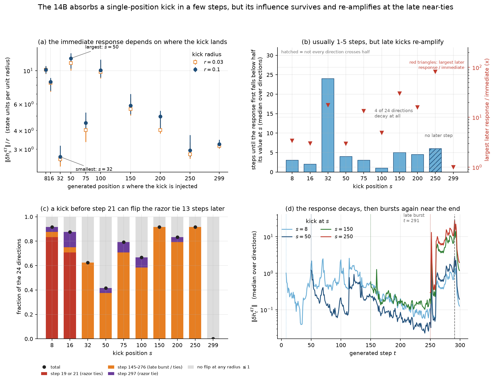 (a) Immediate response against position. $x$: generated position $s$ at which the kick is injected. $y$: $\lVert\delta h^{47}_s\rVert/r$, the response at the same token and the last saved state, per unit radius, on a log scale; filled circles are $r=0.1$, open squares $r=0.03$, error bars are the 25–75% range over the 24 directions. The response varies by a factor 4.5 across positions: $12.07$ at $s=50$, $10.15$ at $s=8$, $10.06$ at $s=100$, down to $2.67$ at $s=32$ and $2.94$ at $s=250$. The two radii agree per unit radius to within 6% at seven positions, by 7% and 10% at $s=50$ and $75$, and by 19% at $s=200$; the immediate response is close to linear at these radii. The variation across $s$ is a property of the token at $s$, not of the radius. (b) Initial half-life and late re-amplification. $x$: kick position $s$. Left $y$: median over directions of the number of steps until the response first falls below half its value at $s$; bars, hatched when not every direction crosses half. Right $y$ (red triangles, log): largest later response divided by the immediate response. Most positions decay in 1–5 steps; $s=32$ takes 24 steps; at $s=250$ only 4 of 24 directions ever fall below half, and at $s=299$ there is no later step. The red triangles are the surprise: at $s=32,75,150,200,250$ the late maximum is 17×, 17×, 31×, 17×, 98× the immediate response, while at $s=8,16,50,100$ it is only 2.5×, 1.8×, 2.4×, 5.0×. The late maximum is at $t=291$ for every kick except $s=8$ (where it is at $t=114$) and $s=299$ (only $t=299$). It is therefore a property of the trajectory around $t=291$, not of the kick position. (c) Which later tie is crossed. $x$: kick position $s$. $y$: fraction of the 24 directions. Bars are stacked by the earliest later step at which $r_c^-(t)\le1$: red = $t=19$ or $21$ (the razor ties), orange = $t=145$–$276$ (late burst / late near-ties), purple = $t=297$ (razor tie), grey = no flip at any radius $\le1$. Black dots are the total. The pattern is sharp: The counts at $r=0.03$ agree with these within one direction at every position (the largest differences are $s=32$: 16 vs 15, and $s=200$: 19 vs 20). The median smallest threshold over directions ranges from $0.023$ at $s=250$ to $1.087$ at $s=50$; the single smallest is $0.0041$ at $s=250$. A kick at $s=8$ or $16$ reaches the $t=19/21$ razor pair before the baseline would decide it, and 20/24 or 17/24 directions flip there — mostly at $t=19$ (14/24 at $s=8$, 9/24 at $s=16$), the rest at $t=21$. The first crossing is at 19 even though 21 has the smaller margin, because the response at 19 is larger; this is the same first-crossing-versus-argmin distinction as in the free-run part. A kick at $s\ge32$ cannot reach $t=21$; it must act through the late near-ties at $t=271$ ($m=0.052$), $t=276$ ($m=0.165$) or $t=297$ ($m=0.0048$), or through the late burst at $t=262$ (where the baseline margin is $1.465$ and the flip requires a margin change of order one nat). This is why the total flip fraction is not monotone in $s$. (d) Response trajectories. $x$: generated step $t$. $y$: $\lVert\delta h^{47}_t\rVert$, median over directions, log scale; four kick positions. The dotted vertical line marks each injection, the dashed line $t=291$. The earlier kicks ($s=8,50,150$) drop by an order of magnitude in the first 5–20 steps and then sit at $0.1$–$1$; the late kick $s=250$ instead grows immediately ($0.29$ at $s$, $7.7$ at $t=260$). All curves then show the common burst at $t\approx291$, where the late kicks jump to $10$–$30$. The state norm at $t=291$ is $905.9$, below the median $1100.7$ of the 300 steps, so the burst is not the state growing; it is a tangent amplification of the difference. What the figure does not show. The half-life is measured from the immediate response at $s$; it is not a global half-life. For $s\ge32$ the global maximum is late, so a half-life measured from the global maximum would not exist inside the 300-step window. The flip counts use the linear threshold $r_c^-$ from 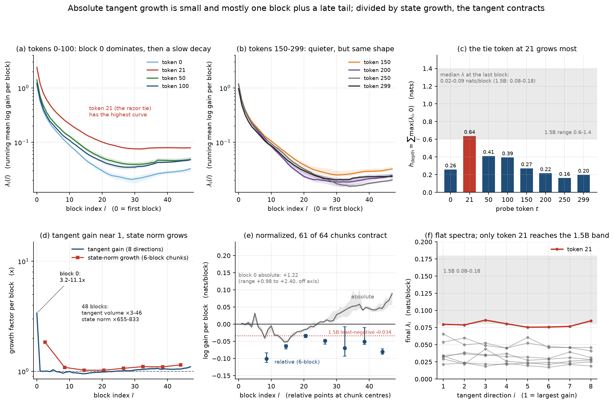 (a), (b) The depth spectrum. $x$: block index $l$, 0 = first block. $y$: $\lambda_i(l)=(1/(l+1))\sum_{b\le l}\log|R_{ii}(b)|$, the running mean per-block tangent exponent, log scale; one line per token (median over the 8 tangent directions), shaded band = 25–75% over the 8 directions. Panel (a) has tokens $0,21,50,100$; panel (b) $150,200,250,299$. Every token has the same shape: a huge first block, then a rapid drop, then a slow decay to a final running mean of $0.02$–$0.09$ nats/block. Token 21 is visibly the highest curve throughout; token 0 is the lowest over most of the depth. (c) Total tangent growth per token. $x$: probe token. $y$: $h_{\rm depth}=\sum_i\max(\lambda_i(47),0)$, the sum of the eight final positive exponents, in nats. Bars: token 21 red. The grey band is the 1.5B reference range $0.6$–$1.4$. Token 21 reaches the bottom of the 1.5B band at $0.638$; the other seven are $0.163$–$0.412$. (d) Tangent gain against state-norm growth. $x$: block index. $y$: growth factor per block, log scale. Blue: median over tokens of (e) Absolute and relative exponents. $x$: block index (the relative points are at 6-block chunk centres). $y$: log gain per block, nats/block. Grey: absolute per-block exponent $e_l$, median over tokens with the 25–75% band; block 0 is $+1.22$ (range $+0.98$ to $+2.40$) and is off the plotted range. Blue: relative exponent, tangent minus state-norm growth, median over tokens with the 25–75% range over tokens. The absolute exponent is near zero or slightly negative through the middle and becomes $+0.03$ to $+0.09$ in the last blocks. The relative exponent is negative at every chunk centre: the median over tokens ranges from $-0.408$ at blocks 0–5 to $-0.034$ at blocks 18–24; every other chunk lies between $-0.100$ and $-0.048$. The red dotted line is the 1.5B's least-negative relative exponent, $-0.034$; the 14B's chunk medians are at or below it except for three tiny positive cells. (f) Final spectrum per token. $x$: tangent direction $i=1,\dots,8$. $y$: final $\lambda_i$, nats/block. Each grey line is one token; token 21 is red. The spectra are flat across directions (the 8 values span at most $0.017$–$0.086$), which is why the scalar $h_{\rm depth}$ is meaningful. The grey band is the 1.5B range $0.08$–$0.18$: only token 21 reaches it. The final individual $\lambda_i$ run from $0.0171$ to $0.0859$, all positive; the median per token is $0.020$–$0.079$. The block-0 exponent is $0.98$–$2.40$; the late-block exponent (blocks 44–47) is $0.03$–$0.15$. The middle blocks are not uniformly expansive: their per-block exponents scatter around zero, and the median The eight chunks and the median over the 8 tokens: (Tangent and norm are medians over tokens; the tangent exponent is the average over the 8 directions.) The first chunk is the strongest contraction: the tangent grows $e^{0.201}=1.22\times$ per block while the state norm grows $e^{0.611}=1.84\times$ per block, a relative $-0.408$ nats/block. After that the tangent is nearly flat ($-0.040$ to $+0.052$) while the norm keeps growing $e^{0.019}$–$e^{0.140}$ per block, so the relative exponent stays negative. 61 of the 64 token-chunks contract. The three positive cells are: All three are at most $+0.008$ nats/block, i.e. a relative expansion of at most 0.8% per block, at the resolution of a 6-block average. The overall relative rate (mean over all chunks) is $-0.061$ at token 21 and $-0.090$ to $-0.120$ at the other tokens. The one place where the 14B does not literally reproduce the 1.5B sentence is the word "every": at 6-block resolution three token-chunks are positive. The violations are $+0.0003$ to $+0.0083$ nats/block, far below the $\pm0.03$–$0.1$ spread between tokens in the same chunk, and they are exactly the chunks where the 14B's tangent is flat and the state norm growth is modest. A per-block test could in principle resolve them, but Yes, in the absolute spectrum. Token 21's $h_{\rm depth}$ is $0.638$, 1.55× the next largest (token 50, $0.412$) and 2.5× the median of the other seven ($0.258$). Its first-block exponent is $2.40$ against $0.98$–$1.42$ for the other tokens; its first-block local gain is $11.13$ against $2.72$–$4.26$; its total tangent growth is $45.9\times$ against $2.7$–$11.8\times$; its final $\lambda_i$ are $0.076$–$0.086$, at the bottom of the 1.5B range; no other token exceeds $0.066$. The depth spectrum therefore agrees with the non-normality run, where token 21 also has the largest block-0 full-block $\sigma_{\max}$ ($128.5$). It is not special in the relative spectrum. Its state norm grows by $733\times$, almost the same as the other tokens ($655$–$833\times$), and its relative rate is the least negative ($-0.061$ vs $-0.090$ to $-0.120$). The large absolute tangent growth is accompanied by a large state norm, so normalized it is the mildest contraction, not an expansion. Two of the three positive chunks are at token 21. The correct reading is: the razor-tie token is the dynamical hotspot of the absolute tangent (largest gain, largest final spectrum), but it still contracts when divided by its own state growth. This is exactly the 1.5B lesson — a large absolute number at a sensitive token is mostly the state scale. 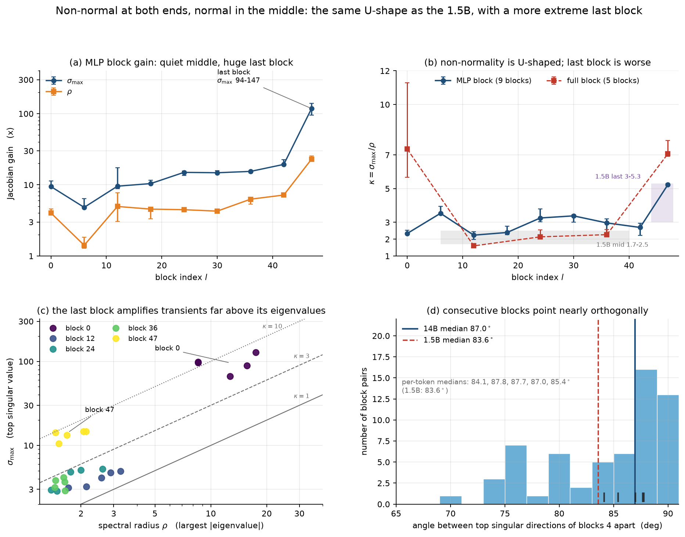DeepSeek-R1-Distill-Qwen-14B (FP32, same
65-token prompt interstellar_travel, the same 240 directions at radius
$r=0.1$, the same 500 teacher-forced baseline tokens, windows
$W=50,100,150,200,300,500$) show that a prompt perturbation disappears from
the first block at exactly the step the window law predicts. For every
direction whose perturbed prompt positions have maximum $p_{\rm last}$, the
block-0 response is nonzero while some perturbed prompt position is inside the
window and reaches the numerical floor at
$t^*=p_{\rm last}+(W-P)$. The equality is exact for all 240 directions at
$W=50$ and all 205 resolved directions at $W=100$; at larger $W$ the floor
sits closer to the pre-death signal and the measured crossing jitters by
$-3\ldots+2$ tokens, never more. A separate support scan (the same $W=100$,
the same prompt length, the same tokens and directions, only the perturbed
positions moved to $[0,22)$, $[22,44)$ or $[44,65)$) moves the death step by
exactly the change in $p_{\rm last}$: 720 of 720 directions lie within two
tokens of $p_{\rm last}+35$.
The literal test asked for in the brief — "the response becomes bitwise zero"
— fails on the 14B for a numerical reason, not a physical one: 0 of 1440
directions ever reach exactly zero or even $10^{-6}$: fp32 SDPA leaves a
round-off residue of about $1.0\times10^{-6}$ of the state norm
($2.9$–$3.0\times10^{-5}$ absolute at block 0, rising with depth), consistent
with the baseline being a single row while the perturbed rows run in batches
of 8. The same
test on the 1.5B, where the residue is absent, gives exact zeros at
$p_{\rm last}+(W-P)$ to the token for all five windows.
The cascade prediction $t^*_l=t^*_1+(l-1)(W-1)$ is confirmed as an upper
bound, not an equality, at the 14B's observable precision: every measured
death is at or before the bound, but the response reaches the floor 9–32
tokens early at state 2 and 30–129 tokens early at state 3 (medians; the gap
grows with depth). On the 1.5B, where the exact zero is observable, the
cascade is an exact equality: state 2 dies at 177, 277, 377 for
$W=100,150,200$ — exactly $t^*_1+(W-1)$. The 14B's smooth decay simply falls
below the fp32 floor before the last (already tiny) contribution disappears.
A 1500-token cascade run (8 directions, $W=100$, 15 saved states) now follows
the law up the stack and sharpens both statements. The threshold death tracks
the law only at $l=1$: medians run 92, 169, 226, 269.5, … , 454.5 for
$l=1\ldots14$, a slope of 26 tokens per state against the predicted 99, and
the median gap grows monotonically from $-22$ at $l=2$ to $-924.5$ at $l=14$;
all 112 resolved direction-states die at or before their bound, so the
500-token early-death pattern is confirmed and extended. The same run also
makes the literal test observable: at batch_dirs=2 the perturbed row becomes
bitwise identical to the baseline once the prompt is fully outside the window,
and the first exact zero lands on $t^*_l$ for all 8 directions at all 14
states ($92,191,\ldots,1379$; 112 of 112). The last nonzero path therefore
survives to the combinatorial bound exactly, but its amplitude crosses the
$10^{-6}$-relative floor hundreds of tokens earlier — the bound is attained
only by the support, not by the signal.
Finally, the window changes the decision landscape itself on identical
tokens: the two early razor ties are preserved bit-for-bit for every
$W\ge100$, while the number of margins below 0.5 nats nearly doubles from 62
($W=500$, approaching the no-clipping reference) to 116–120 at $W=100/50$;
at $W=50$ the prompt does not fit and the $t=21$ tie is destroyed. Every
window shows a flush surge one step after $t=W-P$: x2.19 at $W=100$ (the
1000-direction core run gave x2.20), x2.00 at $W=150$, x2.59 at $W=200$,
x3.95 at $W=300$, x2.41 at $W=500$ (the 1.5B reference was x1.73).
Two further scans close the remaining free parameters. A prompt-length scan
(the same construction with an 8-token prompt and a 190-token prompt, 120
directions each, $W=50,100,200,300,500$) gives the same equality:
$t^*=p_{\rm last}+(W-P)$ predicts the death step with $P$ read from the
tokenizer, not guessed. With $P=8$, all 240 directions over $W=50,100$ are
exact, and at $W=200$ 100 of the 112 resolved directions are exact with the
other 12 one step late. With $P=190$ and $P>W$ ($W=50,100$) the prompt does
not fit at $t=0$, yet 180 of 240 directions are exact and all 240 are within
two tokens; for $W=200,300$ ($P
1. Runs, construction, and the fp32 floor
1.1 Setup
item
value
model
DeepSeek-R1-Distill-Qwen-14B (48 blocks, hidden size 5120)
precision / decoding
FP32, TF32 off; greedy baseline, teacher-forced repeats
prompt
interstellar_travel, $P=65$ tokens
perturbation
unit direction $\times\,r=0.1$, added to prompt embeddings only
directions
$K=240$ per run, 12 disjoint simplex blocks of 20, same seed, same directions in all six runs
window
true sliding window, patched and verified; $W=50,100,150,200,300,500$
continuation
the same 500 greedy tokens in every run (fixed from
a1_inter_w4096)
saved states
16 per run,
layers = [0,1,2,3,5,8,12,16,20,24,28,32,36,40,44,47]; state 1 = block-0 output, state 0 = input embedding
reference
a1_inter_w4096, $W=4096$ (no clipping within 500 tokens), 32 directions
files
results_big/ds14/a1_inter_w{W}_fixed/a1.npzgen_ids array (checked), so there is no
text divergence anywhere in this section: every margin difference is caused
by the attention mask alone. The 240 directions are also identical across
runs; the perturbed positions of each direction are 20 random prompt
positions, and $p_{\rm last}(u)$ — the largest of them — takes values
$55\ldots64$ with median 59.5 in every run.1.2 Window mechanics (the law being tested)
1.3 The literal zero test: 0 of 1440 directions reach zero on the 14B
dh_norm[1] <= 0 (state 1 = block-0
output), with $10^{-6}$ as a tolerance. Measured over all six runs:
W
directions
reach exactly 0
reach $<10^{-6}$
smallest value over all $t$
floor (5th pct of tail)
50
240
0
0
$2.19\times10^{-5}$
$2.99\times10^{-5}$
100
240
0
0
$2.14\times10^{-5}$
$2.94\times10^{-5}$
150
240
0
0
$2.02\times10^{-5}$
$2.92\times10^{-5}$
200
240
0
0
$2.09\times10^{-5}$
$2.91\times10^{-5}$
300
240
0
0
$2.12\times10^{-5}$
$2.89\times10^{-5}$
500
240
0
0
$2.49\times10^{-5}$
$2.98\times10^{-5}$
dh_norm(t) <= 2 x floor
and at least 90% of the next 30 steps stay below 4 x floor, where the floor
is the 5th percentile of the last 60 steps (per state) and at least
$10^{-6}\times$ the median state norm. A direction is counted as resolved
only if its pre-death signal exceeds $10\times$ the floor and at least 11
steps remain in the run. On the 1.5B, where exact zeros exist, this rule
returns the same steps as the literal rule; on the 14B it is the only rule
that can be applied to all 240 directions. The raw arrays are unchanged; the
JSON reports the literal counts alongside the calibrated ones.
2. Figure
ds14win_departure.png — state 1 dies exactly at $p_{\rm last}+(W-P)$
W
directions resolved
exactly on the line
within ±2 tokens
median deviation
min
max
50
240 / 240
240
240
0
0
0
100
205 / 240
205
205
0
0
0
150
185 / 240
100
185
0
0
+1
200
149 / 240
64
148
+1
−3
+2
300
52 / 240
45
52
0
−2
+1
500
0 / 240
—
—
—
—
—
3. Figure
ds14win_cascade.png — the threshold crossing runs early with depth; the bitwise-zero support sits exactly on the bound
results_big/ds14/a1_inter_w100_cascade), $W=100$, $P=65$, 8 directions,
15 saved states (0–14; states 1–14 used), tokens fixed from the 1500-token
$W=4096$ baseline. The 8 directions share one simplex block and therefore the
same 20 prompt coordinates: $p_{\rm last}=57$ and $t^*_1=92$ for every
direction, so the bound is a single line. The death rule is exactly the one of
§1.3. The run used batch_dirs=2 rather than 16, and that matters: the last 60
steps are bitwise zero at every state, so the per-state floor is the rule's
$10^{-6}\times$median-norm cap ($2.95\times10^{-5}$ at $l=1$ rising to
$9.95\times10^{-5}$ at $l=14$), not a measured residue. Panel (b) therefore
shows two observables: the same threshold death as panel (a) (filled, with the
interquartile range over directions), and the first step at which dh_norm is
bitwise zero (open circles), which this run makes observable.
W
l=1
l=2
l=3
l=4
l=6
l=8
50 measured
44.5
84.0
111.0
141.0
182.0
208.0
50 bound
44.5
93.0
142.5
191.5
289.5
387.5
100 measured
94.0
168.0
224.0
279.0
—
—
100 bound
94.0
193.0
292.5
391.5
—
—
150 measured
144.0
264.0
310.0
—
—
—
150 bound
144.0
294.0
442.5
—
—
—
200 measured
195.0
346.0
—
—
—
—
200 bound
194.0
394.0
—
—
—
—
$l$
bound
threshold death
deviation (median [min,max])
first zero
1
92
92.0
0 [0,0]
92
2
191
169.0
−22 [−37,−11]
191
3
290
226.0
−64 [−93,−51]
290
4
389
269.5
−119.5 [−159,−110]
389
5
488
282.5
−205.5 [−238,−185]
488
6
587
335.5
−251.5 [−284,−225]
587
7
686
388.0
−298 [−337,−253]
686
8
785
401.0
−384 [−426,−351]
785
9
884
415.5
−468.5 [−516,−425]
884
10
983
429.5
−553.5 [−597,−519]
983
11
1082
447.0
−635 [−696,−588]
1082
12
1181
447.0
−734 [−795,−687]
1181
13
1280
447.0
−833 [−894,−786]
1280
14
1379
454.5
−924.5 [−970,−874]
1379
batch_dirs=2 the perturbed row
becomes bitwise identical to the baseline once no prompt position is inside
any window, so dh_norm is exactly 0 from $t^*_l$ onward; the first zero is
$t^*_l$ for all 8 directions at all 14 states. This is partly structural — a
row with no prompt in its receptive field must compute the same function as
the baseline — but it is also a measurement: at every step before the bound
the response is nonzero, so the last path genuinely survives to the
combinatorial bound. As a statement about the support, the cascade is an
equality over the whole stack; as a statement about the signal, it is a loose
upper bound. The last nonzero values are far below the $10^{-6}$ cap (for
direction 0 at state 2 they run $8.4\times10^{-5}$ at $t=175$ down to
$1.7\times10^{-6}$ at $t=190$: that direction's support outlives its threshold
crossing by 12 steps; the median gap at $l=2$ is 22 and at $l=14$ it is 925).batch_dirs=16) carry a $\approx10^{-6}$-relative residue at the tail and
never reach a bitwise zero, while this batch_dirs=2 run reaches exact zeros
at every state. The cause is presumably a kernel / reduction-order difference
between batch shapes, but it was not isolated here, so threshold death times
should not be compared across batch sizes to better than a token or two. The
run has one prompt, one window, and one simplex block (all directions share
$p_{\rm last}=57$), so it does not scan direction geometry. Finally it does
not follow states beyond $l=14$ (block 14 of 48); extrapolating the 26-token
slope would put the threshold crossing of the last block near $t\approx1550$,
beyond even this 1500-token horizon, but the saturation makes that
extrapolation unsafe.
4. Figure
ds14win_support.png — moving the support moves the death step exactly
support
$p_{\rm last}$
predicted
resolved
exactly on line
within ±2
max deviation
$[0,22)$
18–21
53–56
240 / 240
80
240
+2
$[22,44)$
40–43
75–78
240 / 240
140
240
+2
$[44,65)$
61–64
96–99
240 / 240
240
240
0
5. Figure
ds14win_plen.png — prompt length only shifts the death step
Explain how tides work., $P=8$ tokens; the long prompt
is a review of climate physics, $P=190$ tokens (both read from
meta.json; the brief's estimates of $\approx6$ and $\approx250$ were not
exact). For each prompt, five true sliding-window runs
$W=50,100,200,300,500$ (no $W=150$), 120 directions at $r=0.1$, 300
teacher-forced tokens fixed from that prompt's own $W=4096$ run
(a1_short_prompt_w4096, a1_long_prompt_w4096), the same 16 saved states
and the same floor/death rule as §1.3. The five windows of a prompt share
identical gen_ids with their reference (checked), so there is no text
divergence. A direction's $p_{\rm last}$ is the largest perturbed prompt
position. Directions are built in blocks of 20 that share their 20 prompt
positions (only the coordinates inside them differ), so $p_{\rm last}$ takes
one value per block: 1 block at 6 and 5 blocks at 7 for the short prompt
(20 directions at 6, 100 at 7), and 164, 168, 173, 174, 182, 186 (20
directions each) for the long prompt. Panel (a) is the short
prompt, panel (b) the long one; colour is the window, and circle/triangle
distinguishes the prompt, but the panels never mix. Only runs with at least
one resolved direction are plotted.meta.json. $y$: measured state-1 death (first step at the floor). Dashed
identity line; equal aspect. Panel (b) marks the 300-step horizon
($t=299$): a predicted death beyond it cannot be observed in these runs.
prompt
$P$
$W$
$W-P$
$p_{\rm last}$
$t^*=p_{\rm last}+(W-P)$
died at $t^*$
resolved
exact
within ±2
max dev
short
8
50
+42
6–7
48–49
120 / 120
120
120
120
0
short
8
100
+92
6–7
98–99
120 / 120
120
120
120
0
short
8
200
+192
6–7
198–199
120 / 120
112
100
112
+1
short
8
300
+292
6–7
298–299
at horizon
0
—
—
—
short
8
500
+492
6–7
498–499
none
0
—
—
—
long
190
50
−140
164–186
24–46
120 / 120
120
100
120
+1
long
190
100
−90
164–186
74–96
120 / 120
120
80
120
+2
long
190
200
+10
164–186
174–196
120 / 120
27
26
27
+1
long
190
300
+110
164–186
274–296
120 / 120
5
5
5
0
long
190
500
+310
164–186
474–496
none
0
—
—
—
resolved, exact, within ±2 and max dev use the §1.3 resolution guard
(pre-death signal at least $10\times$ the floor and 11 steps left); died at
$t^*$ counts all 120 directions regardless of the guard. The two rows with
0 resolved are horizon statements, not measured deaths.5.1 Margins of the fixed tokens
prompt
$W$
median margin
minimum (step)
steps $<0.1$
steps $<0.5$
first step differing from 4096
short
50
1.542
0.0113 (61)
11
72
43
short
100
2.134
0.0198 (168)
10
57
93
short
200
2.801
0.0060 (297)
9
49
193
short
300
4.474
0.0087 (222)
8
32
293
short
500
4.507
0.0087 (222)
8
31
none (identical)
short
4096
4.507
0.0087 (222)
8
31
—
long
50
1.635
0.0033 (71)
12
58
0
long
100
1.197
0.0367 (94)
9
66
0
long
200
0.722
0.0014 (167)
30
114
11
long
300
1.346
0.0016 (270)
17
72
111
long
500
2.471
0.0020 (165)
9
45
none (identical)
long
4096
2.471
0.0020 (165)
9
45
—
6. Figure
ds14win_response_shape.png — a flush surge one step after $t=W-P$
W
$t^*=W-P$
$\Phi_W$
per-direction median ratio
50
−15 (prompt does not fit)
—
—
100
35
2.19
2.34
150
85
2.00
2.02
200
135
2.59
2.33
300
235
3.95
3.58
500
435
2.41
2.36
4096 (ref)
—
no kink
—
7. Figure
ds14win_margins_by_w.png — the window changes the decision landscape itself
W
median margin
minimum margin (step)
steps < 0.1 nats
steps < 0.5 nats
first step differing from W=4096
50
1.135
$8.20\times10^{-5}$ (122)
28
120
0
100
1.357
$1.030\times10^{-4}$ (21)
31
116
36
150
1.507
$1.030\times10^{-4}$ (21)
16
113
86
200
1.471
$1.030\times10^{-4}$ (21)
25
108
136
300
1.936
$1.030\times10^{-4}$ (21)
20
86
236
500
2.463
$1.030\times10^{-4}$ (21)
16
62
436
4096
2.989
$1.030\times10^{-4}$ (21)
15
63
—
8. Comparison with the 1.5B law
chaos_llm_2026/results/local_data/flush_sweep/w*,
read-only) used the same 65-token prompt, $r=0.1$, 4 directions, 500 tokens,
and exact zeros are attained there (the baseline and perturbed passes are
numerically identical at zero response).
quantity
1.5B
14B
state corresponding to block 0
saved state 0
saved state 1
exact-zero death, $W=100/150/200/300/500$
78 / 128 / 178 / 278 / 478
not observable in the 500-token runs (floor $3\times10^{-5}$); 92 at $W=100$ in the 1500-token run
predicted $p_{\rm last}+(W-P)$
78 / 128 / 178 / 278 / 478
matched exactly at $W=50,100$; ±1–3 tokens at $W=150$–$300$
exact-zero cascade, state 2, $W=100/150/200$
177 / 277 / 377
191 at $W=100$ (1500-token run; 8/8 directions); threshold crossing 22–50 tokens early (median)
exact-zero cascade, state 3, $W=100/150$
276 / 426
290 at $W=100$ (1500-token run; 8/8); threshold crossing 64–129 tokens early (median)
exact-zero cascade, state 14, $W=100$
—
1379 (8/8 direction-states, exactly $92+13\cdot99$)
flush ratio at $W=100$
1.73
2.19 (fixed 240 dirs), 2.20 (core 1000 dirs)
batch_dirs=2) it is not hidden and the literal
zero appears at the bound. The 14B's lower numerical precision therefore
costs the exact-zero test only when the batch residue is present, not the law.
9. What remains
a1_inter_w100_cascade) is processed and fills panel (b) of
ds14win_cascade.png; it resolves the cascade to $l=14$ and supplies the
literal zeros that the 500-token runs could not observe (§3). It does not
change the $W=200$ picture, which still stops at $l=2$ because the run has
only 500 tokens.scripts_spark/figs_window.py detects each file independently, so a partial
later arrival produces the corresponding figure without touching the rest.
Part state kicks, depth spectrum and non-normality (DS-R1-14B, true window 100)
Summary
1. What was measured
1.1 Setup
item
value
model
DeepSeek-R1-Distill-Qwen-14B, 48 blocks, $d=5120$
precision
FP32, no autocast
prompt
interstellar_travel, $P=65$ tokens
baseline
300 greedy tokens from the true window-100 A1 run, teacher-forced in every perturbed pass
state kicks
one random unit vector in the 5120-d residual stream at the embedding of generated position $s$, 24 directions per cell, radii $r=0.03$ and $0.1$; $s=8,16,32,50,75,100,150,200,250,299$
saved states for kicks
0, 12, 24, 36, 47; the response is read at layer 47 (input to the final norm)
depth
8 orthonormal tangent vectors at one generated token, JVP through each of the 48 blocks, QR-renormalised after every block (Benettin); tokens $0,21,50,100,150,200,250,299$
non-normality
MLP analytic SwiGLU Jacobian at 5 tokens × 9 blocks ($0,6,\dots,42,47$); full-block power iteration + Arnoldi at 5 tokens × 5 blocks ($0,12,24,36,47$); principal angles between blocks 4 apart
non-normality tokens
$21,50,100,189,273$
baseline state norms
a1_inter_w100/a1.npz, norm_h0, states $0,6,12,\dots,42,47$ (9 values per generated step)
data
results_big/ds14/state_w100/state2.npz, depth_w100/depth.npz, nonnorm_w100/nonnorm.npz, a1_inter_w100/a1.npzarray_equal), so the kick run is on exactly the same baseline trajectory as the depth and non-normality runs. The true window is 100: the A1 metadata says window=100, and the margins used here are the stored ones from that run.1.2 Quantities
symbol
explicit expression
meaning
why this quantity
$\delta h^l_t$
$h^l_t(u)-h^l_t(0)$
displacement of the state at depth $l$, step $t$
the object a state kick changes
immediate
$\lVert\delta h^{47}_s\rVert/r$, median over 24 directions
response at the injection token and the last saved state, per unit radius
measures how strongly position $s$ itself reacts
half-life
per direction, first $t>s$ with $\lVert\delta h^{47}_t\rVert<\tfrac12\lVert\delta h^{47}_s\rVert$
initial decay time of the response
separates "absorbed at once" from "persists"
late ratio
$\max_{t\ge s}\lVert\delta h^{47}_t\rVert\,/\,\lVert\delta h^{47}_s\rVert$
largest later response relative to the immediate one
tests whether the response really decays
$r_c^-(t,u)$
$m_t\,r/\max(-\delta m_t(u),0)$; $+\infty$ if $\delta m_t\ge0$
radius at which step $t$ would flip
one number per direction and later step
flip count
number of directions with $\min_{t\ge s}r_c^-(t,u)\le1$
directions for which some radius $\le1$ flips a token
the latency question in one count
$\lambda_i(l)$
$(1/(l+1))\sum_{b\le l}\log|R_{ii}(b)|$ after QR each block
running mean per-block tangent exponent
the depth spectrum; not the local gain and not a cumulative sum
$e_l$
$(l+1)\lambda(l)-l\lambda(l-1)$
per-block tangent exponent
the actual block-by-block growth
$h_{\rm depth}$
$\sum_i\max(\lambda_i(47),0)$
total positive tangent exponent
a scalar "how expansive" per token
$n_l$
$\lVert h^l_t(0)\rVert$ at saved states
baseline state norm
the scale the tangent is compared with
relative exponent
$e_l-\frac1{6}\log(n_{l+6}/n_l)$ on 6-block chunks
tangent growth per block minus state-norm growth per block
the 1.5B "normalized" test
$\sigma_{\max}$
top singular value of the block Jacobian
largest instantaneous gain
how much a direction can be stretched in one block
$\rho$
largest $|\text{eigenvalue}|$ of the block Jacobian
long-term spectral radius
distinguishes transient from sustained growth
$\kappa$
$\sigma_{\max}/\rho$
non-normality ($1$ = normal)
high $\kappa$ means large transient amplification
angle
$\arccos|\langle v_l,v_{l+4}\rangle|$, degrees
angle between top singular directions 4 blocks apart
whether the amplifying direction rotates with depth
1.3 The one normalization that could not be done per block
norm_h0 stores the baseline norm at nine states only: $0,6,12,18,24,30,36,42,47$. The relative exponent is therefore computed on eight 6-block chunks (the last one is 5 blocks, $42$–$46$, because state 48 is not saved). Per-block state normalization would need all 48 norms; it is not available, and no per-block statement below should be read as measured. The last transformer block (47) is included in the tangent growth but not in the norm growth, because its output state 48 was not saved; this makes the reported contraction slightly conservative (the missing final norm growth would make it more negative, not less). The 1.5B's per-block normalization cannot be reproduced at the same resolution; the comparison is made on the 6-block medians.
2.
ds14sd_state_kicks.png — a kick is absorbed quickly, then re-amplifies late
$s$
immediate $/r$ ($r=0.1$)
half-life
directions decaying
flips / 24
earliest flips (19/21, 145–276, 297, none)
8
10.15
3
24/24
22
20, 1, 1, 2
16
8.43
2
24/24
21
17, 1, 3, 3
32
2.67
24
24/24
15
0, 15, 0, 9
50
12.07
4
24/24
10
0, 9, 1, 14
75
4.49
3
24/24
19
0, 17, 2, 5
100
10.06
1
24/24
16
0, 14, 2, 8
150
5.86
5
24/24
22
0, 22, 0, 2
200
4.94
4.5
24/24
20
0, 19, 1, 4
250
2.94
6
4/24
22
0, 22, 0, 2
299
3.24
—
0/24
0
0, 0, 0, 24
dm at $r=0.1$; the measured dm at $r=0.1$ is $2.74\times$ the value at $r=0.03$, not the $3.33\times$ of a linear response, so the extrapolation is already 18% sublinear at the upper radius. The counts at $r=0.03$ and $0.1$ agree within one direction, which bounds this effect on the count but not on the exact threshold. The late burst is measured only as the norm of the layer-47 difference; the figure does not decompose it into a direction or a token-level event.
3.
ds14sd_depth_spectrum.png — absolute growth is one block plus a late tail; normalized, it contractslocal_gain, the mean $\lVert Jq_i\rVert$ over the 8 tangent directions, with the 25–75% band over tokens. Red: state-norm growth $\exp(\frac16\log(n_{l+6}/n_l))$ from the A1 norm_h0 at the 6-block chunk centres. The tangent gain is 3.37 at block 0 (range 3.2–11.1), then hovers at 1.00 (0.93–1.07) through the middle, and rises to 1.04–1.10 in the last 8 blocks; 58% of blocks have a median gain above 1. The state-norm line is $1.77$–$1.91$ per block in the first chunk and $1.02$–$1.15$ afterward. Over the full depth the tangent volume grows $2.7$–$45.9\times$ while the state norm grows $655$–$833\times$; the tangent therefore grows 16–280× less than the state.3.1 The numbers per token
token $t$
$h_{\rm depth}$
median final $\lambda_i$
tangent volume growth
state norm growth
relative mean (nats/block)
0
0.258
0.033
4.71×
655×
−0.107
21
0.638
0.079
45.9×
733×
−0.061
50
0.412
0.048
11.83×
723×
−0.090
100
0.395
0.048
10.67×
760×
−0.093
150
0.271
0.032
5.10×
833×
−0.110
200
0.216
0.025
3.66×
689×
−0.112
250
0.163
0.020
2.66×
742×
−0.120
299
0.199
0.023
3.29×
691×
−0.114
local_gain is below 1 in 42% of blocks. The absolute expansion is therefore not "every block expands" in the 14B; it is "block 0 plus a late tail", with a middle that is nearly neutral.3.2 The relative test, chunk by chunk
chunk
blocks
tangent exponent
norm exponent
relative
0→6
0–5
+0.201
+0.611
−0.408
6→12
6–11
−0.015
+0.078
−0.100
12→18
12–17
−0.040
+0.024
−0.064
18→24
18–23
−0.014
+0.019
−0.034
24→30
24–29
+0.010
+0.066
−0.048
30→36
30–35
+0.038
+0.100
−0.070
36→42
36–41
+0.049
+0.094
−0.051
42→47
42–46
+0.052
+0.140
−0.080
token
chunk
relative
21
30–36
+0.0052
21
36–42
+0.0003
50
36–42
+0.0083
3.3 Comparison with the 1.5B depth result
quantity
14B (this run)
1.5B reference
verdict
final $\lambda_i$
0.017–0.086 nats/block
0.08–0.18
14B is less expansive; only token 21 reaches the 1.5B range
$h_{\rm depth}$
0.16–0.64 nats
0.6–1.4
14B is lower; token 21 (0.638) is at the bottom of the 1.5B band
absolute tangent growth
2.7–45.9× over 48 blocks
positive exponents, $e^{0.08}$–$e^{0.18}$ per block
14B's absolute growth is much weaker
state norm growth
655–833×
×30 in block 0, ×1.05–1.18 afterward
same qualitative pattern; the 14B does not isolate block 0 because norms are only saved every 6 states
normalized relative exponent
−0.061 to −0.120 overall; 61/64 chunks negative; least-negative chunk median −0.034
every block contracts, worst −0.034
confirmed, with three near-zero exceptions at 6-block resolution
what the growth is
tangent volume grows 2.7–45.9× while the norm grows 655–833×
"absolute expansion is radial drift; normalized contracts"
confirmed, more strongly in the 14B
norm_h0 does not contain the 48 per-block norms needed for it. The honest statement is: the 14B confirms normalized contraction at 6-block resolution, and the three exceptions are at the resolution floor, not a qualitative contradiction.3.4 Is the token at the razor tie special?
4.
ds14sd_nonnorm.png — the same U-shape as the 1.5B, with a more extreme last block
(a) MLP block gain. $x$: block index. $y$: Jacobian gain, log scale. Blue: $\sigma_{\max}$ of the MLP block, median over the 5 tokens with min–max range; orange: spectral radius $\rho$. Nine measured blocks ($0,6,\dots,42,47$). The MLP gain is $9.45$ at block 0, drops to $4.82$ at block 6, rises slowly from $9.57$ at block 12 to $19.36$ at block 42, then jumps to $117.65$ (94.36–146.54) at block 47. The spectral radius follows the same shape, $4.02\to1.41\to4.96\to\dots\to22.94$.
(b) Non-normality $\kappa$. $x$: block index. $y$: $\kappa=\sigma_{\max}/\rho$, linear scale. Blue: MLP block (9 blocks, median + min–max); red dashed: full block (5 blocks, $0,12,24,36,47$). The grey band is the 1.5B mid-layer range $1.7$–$2.5$; the purple band the 1.5B last-block range $3$–$5.3$. The 14B is U-shaped: $\kappa=7.35$ (full, block 0), $1.60$ (block 12), $2.14$ (24), $2.27$ (36), $7.07$ (47). The MLP alone has a milder block 0 ($\kappa=2.34$) but a large last block ($5.23$).
(c) $\sigma_{\max}$ against $\rho$. $x$: spectral radius $\rho$, log; $y$: $\sigma_{\max}$, log; one point per token per full block, colour = block. The grey lines are $\kappa=1$ (normal), $3$ and $10$. Block 0 sits at $\rho\approx8.5$–$17.5$, $\sigma_{\max}\approx66$–$128$ ($\kappa=5.2$–$11.5$); block 47 sits at $\rho\approx1.5$–$2.1$, $\sigma_{\max}\approx10.5$–$14.7$ ($\kappa=6.9$–$9.8$). The last block has a small spectral radius but a large top singular value: its gain is a transient, not sustained growth. Blocks 12–36 are the normal middle ($\kappa=1.5$–$2.8$).
(d) Principal angles. $x$: angle between the top singular directions of blocks 4 apart, degrees; $y$: number of block pairs (5 tokens × 12 pairs). Blue bars: histogram; vertical lines: 14B median $86.96°$ and 1.5B median $83.6°$. Per-token medians are $84.14°$ (21), $87.76°$ (50), $87.66°$ (100), $87.01°$ (189), $85.42°$ (273). The full range is $69.8$–$89.8°$. Consecutive-block amplifying directions are nearly orthogonal in both models; the 14B is 3.4° more orthogonal.
| block | MLP $\sigma_{\max}$ (range) | MLP $\rho$ | MLP $\kappa$ | full $\sigma_{\max}$ (range) | full $\rho$ (range) | full $\kappa$ (range) |
|---|---|---|---|---|---|---|
| 0 | 9.45 (8.87–12.08) | 4.02 | 2.34 | 96.22 (66.2–128.5) | 12.67 (8.5–17.5) | 7.35 (5.23–11.50) |
| 6 | 4.82 (4.53–11.70) | 1.41 | 3.53 | — | — | — |
| 12 | 9.57 (7.52–18.62) | 4.96 | 2.24 | 4.12 (3.1–5.0) | 2.57 (1.7–3.3) | 1.60 (1.52–1.85) |
| 18 | 10.41 (9.19–12.12) | 4.56 | 2.40 | — | — | — |
| 24 | 14.97 (13.35–16.35) | 4.47 | 3.26 | 4.85 (2.9–5.2) | 1.75 (1.4–2.6) | 2.14 (1.93–2.77) |
| 30 | 14.78 (12.15–16.23) | 4.27 | 3.38 | — | — | — |
| 36 | 15.44 (13.46–20.17) | 6.28 | 2.96 | 3.70 (2.9–4.2) | 1.61 (1.4–1.6) | 2.27 (1.76–2.63) |
| 42 | 19.36 (14.93–23.80) | 7.19 | 2.69 | — | — | — |
| 47 | 117.65 (94.36–146.54) | 22.94 | 5.23 | 14.23 (10.5–14.7) | 1.68 (1.5–2.1) | 7.07 (6.91–9.76) |
The token at the razor tie is again at the edge: token 21 has full block-0 $\sigma_{\max}=128.46$ (the largest of the 5 tokens), $\rho=17.47$, $\kappa=7.35$; block 47 $\sigma_{\max}=13.22$, $\rho=1.68$, $\kappa=7.87$. Its principal-angle median, $84.14°$, is the lowest of the five and the closest to the 1.5B's $83.6°$. Token 273 at block 47 is the one quoted in the run log: $\sigma_{\max}=14.23$, $\rho=1.457$, $\kappa=9.76$.
| quantity | 14B | 1.5B | verdict |
|---|---|---|---|
| full block 0 $\sigma_{\max}$ | 96.2 (66–128) | 95–195 | same range, 14B at the low end |
| full block 0 $\rho$ | 12.7 (8.5–17.5) | 11–39 | same range, 14B at the low end |
| full block 0 $\kappa$ | 7.35 (5.2–11.5) | 5–8 | same, 14B at the high end |
| full mid $\sigma_{\max}$ | 3.7–4.9 | 2.7–3.6 | 14B slightly higher (1.2–1.4×) |
| full mid $\kappa$ | 1.60–2.27 | 1.7–2.5 | same normal middle |
| full last $\sigma_{\max}$ | 14.2 (10.5–14.7) | 6–9 | 14B 1.6–2.4× higher |
| full last $\kappa$ | 7.07 (6.9–9.8) | 3–5.3 | 14B ≈1.4–2.3× higher |
| MLP last $\sigma_{\max}$ | 117.7 (94–147) | 58–93 | 14B 1.3–2.0× higher |
| MLP last $\kappa$ | 5.23 | not quoted | — |
| median principal angle | 86.96° (per-token 84.1–87.8°) | 83.6° | 14B slightly more orthogonal |
The U-shape is the same; the difference is concentrated at the very end. The 1.5B has 28 blocks, the 14B 48, so the comparison is in fractional depth: the 14B minimum is at block 12 ($0.25$ of depth, $\kappa=1.60$), and the middle stays at $\kappa\approx2.1$–$2.3$ out to $0.75$; the spike is confined to block 47. The 1.5B's last-block $\kappa=3$–$5.3$ is below the 14B's $7.07$, but its block-0 range already overlaps the 14B. The scale-dependent change is therefore not a uniform increase of non-normality with model size; it is a stronger transient amplifier at the final block of the deeper model.
| quantity | 14B (true W=100) | 1.5B reference | same? |
|---|---|---|---|
| depth final $\lambda_i$ | 0.017–0.086 | 0.08–0.18 | lower in 14B |
| depth $h_{\rm depth}$ | 0.16–0.64 | 0.6–1.4 | lower in 14B; only token 21 reaches the band |
| absolute tangent growth | 2.7–45.9× / 48 blocks | positive, $e^{0.08}$–$e^{0.18}$/block | lower in 14B |
| state norm growth | 655–833× | ×30 block 0 + ×1.05–1.18 after | same qualitative |
| normalized relative exponent | −0.061 to −0.120; 61/64 chunks negative | every block negative, worst −0.034 | confirmed, 3 near-zero exceptions |
| absolute expansion is radial drift | tangent 2.7–45.9× vs norm 655–833× | stated | confirmed, stronger |
| full block 0 $\sigma_{\max}$ | 96.2 | 95–195 | same |
| full block 0 $\kappa$ | 7.35 | 5–8 | same |
| full mid $\sigma_{\max}$ | 3.7–4.9 | 2.7–3.6 | slightly higher |
| full mid $\kappa$ | 1.60–2.27 | 1.7–2.5 | same |
| full last $\sigma_{\max}$ | 14.2 | 6–9 | higher in 14B |
| full last $\kappa$ | 7.07 | 3–5.3 | higher in 14B |
| MLP last $\sigma_{\max}$ | 117.7 | 58–93 | higher in 14B |
| principal angle median | 86.96° | 83.6° | slightly more orthogonal |
No 1.5B single-position kick run exists in the reference set, so the state-kick part is not compared numerically to the 1.5B. Its mechanism, however, is the one the 1.5B depth result predicts: the raw response can grow late while the state-normalized tangent does not. The late burst at $t\approx291$ is an absolute response, and the depth run shows that such absolute growth coexists with normalized contraction.
norm_h0 is saved only every 6 states. The relative exponent is a 6-block average; the "every block contracts" statement is tested at that resolution only. The last transformer block (47) is excluded from the relative chunks because state 48 is not saved.dm at $r=0.1$; dm is already 18% sublinear between $r=0.03$ and $0.1$. The counts at the two radii agree within one direction, but the exact thresholds at $r_c>0.1$ are less certain. The $t=262$ flips, which require a margin change of order one nat, are the most extrapolation-sensitive.h_depth is the top-8 volume, not the full tangent spectrum; a 5120-dimensional Jacobian can have larger directions outside the sampled subspace. The spectrum is flat across the 8 sampled directions, which is consistent with, but not proof of, a flat full spectrum.The last-layer states of DeepSeek-R1-Distill-Qwen-14B (FP32, greedy, attention window 4096, 1000 generated tokens, $d=5120$) form a point cloud on which the validated correlation-dimension pipeline finds no scaling region in any of the 13 trajectories. Under the same fixed rule that was applied to the 1.5B, every run has only a 0.08-decade usable range of $\epsilon$ (0.11 for one run), sampled by 4 grid points (5 for that one run); the rule requires at least 5 points over at least 0.40 decades. The local slope across that range moves by 0.2-1.2 units and sits at 7.0-10.2, above the finite-$N$ ceiling $2\log_{10}N=6.0$; in 10 of 13 runs the edge-to-edge drift alone exceeds the 6% flatness tolerance. There is therefore no $\hat D_2$ to quote: the number you get by ignoring the rule is a chord of 8.10-10.27, and the old max-$R^2$ estimator returns 8.69-11.75 over windows 0.02-0.07 decades wide.
The point-cloud estimates disagree with each other, which is itself the result. TwoNN gives 4.66-8.90 (median 8.19), the Levina-Bickel MLE at $k=10$ gives 10.97-15.87, and the two differ by a factor 1.7-2.4. Neither is converged at $N=1000$: on great_emu_war, TwoNN falls 7.82 -> 6.30 -> 4.66 as $N$ goes 500 -> 750 -> 1000, while on interstellar it moves 9.51 -> 8.75 -> 8.90. The MLE moves much less (12.6 -> 11.0 and 14.6 -> 15.1). The correct statement is a range, not a dimension: the 14B last-layer cloud is locally 4.7-15.9 dimensional depending on the estimator and the neighbourhood size, with no estimator stable in $N$.
No trajectory repeats. The lag-distance prominence is 0.961-0.992 in all 13 (a loop is $<0.6$; the 1.5B's full loops were 0.04-0.22), the fraction of positions returning within $0.1\,d_{typ}$ at the best lag is 0.0% (1.5B loops: 70-95%), and 0% of points have a nearest non-adjacent neighbour below $10^{-3}d_{typ}$. The GPU-side summary.json agrees exactly once its convention is reproduced: median rel_nearest 0.728-0.996, p05 0.355-0.557 (the 1.5B loop runs had nearest-twin median 0.016-0.017 $d_{typ}$). So the 14B trajectories are less loop-prone than the 1.5B: 0 full + 0 partial out of 13, against 9 full + 2 partial out of 20 on the 1.5B (6 full + 2 partial out of the 16 runs at the same 1000-token horizon).
Two controls make the interpretation explicit. N-dependence: at $N=500/750/1000$ the valid window is still empty at every $N$; the admissible range grows only 0.054 -> 0.081 decades. Time shuffle: permuting the distance-matrix rows and columns identically leaves the point cloud unchanged, and at $W=0$ the correlation integral and TwoNN are bit-identical; only the Theiler band moves, changing the chord by at most 0.51 ($W=50$) or 1.33 ($W=500$). The measured $D_2$ is a static geometry statistic, not a dynamical one.
The answer to the two explicit 1.5B questions is therefore: (i) no, the 14B has no valid scaling region where the 1.5B did not -- neither has one on a healthy trajectory, and the only 1.5B window was the spurious 0.54-decade window on a loop, which has no 14B counterpart because there are no 14B loops. (ii) less prone, by a wide margin (0/13 against 9/20, and 0/13 against 6 full + 2 partial of 16 at equal horizon), with the two nearest-neighbour screens agreeing once their scales are matched.
| item | value |
|---|---|
| model | DeepSeek-R1-Distill-Qwen-14B, 48 blocks, hidden size 5120 |
| precision / decoding | FP32 (TF32 off), greedy |
| attention | window 4096, so no clipping inside the 1000-1500 token horizon |
| states | last layer (h_last), one $[N,5120]$ cloud per trajectory |
| input | results_big/ds14/d2/dist_<name>_h_last.npy, fp32 Euclidean $[N,N]$, plus summary.json |
| horizon | 1000 tokens for 12 runs; the 13th is interstellar_3000, run to 1500 and truncated to its first 1000 states |
| prompts | 12 prompt topics: the 12 lines of prompts_d2.txt, plus a second, longer interstellar prompt from the first line of prompts.txt (65-token prompt) |
| state norms | median 179.7-193.4, late/early norm ratio 0.987-1.048 (no drift or blow-up) |
One data fact must precede the comparison with the "12 prompts" description: dist_interstellar_h_last.npy (1000 states, 51-token prompt from prompts_d2.txt) and dist_interstellar_3000_h_last.npy (1500 states, 65-token prompt from prompts.txt) are two different trajectories, not a prefix pair. Their first 1000 generated tokens differ from token 0 and their states differ by up to 153 in Euclidean norm. Both are kept, so the 13 trajectories come from 12 prompt topics, with interstellar represented twice by two different texts (the prompts.txt variant adds one sentence: 65 prompt tokens against 51).
The distance matrices are float32 with diagonal entries of 0-0.18 and a smallest off-diagonal distance of 35.9 (for interstellar); every $\epsilon$ in the admissible range is $\ge 0.6\,d_{typ}\approx 140$, so the diagonal round-off cannot enter any count that matters here.
Let $d_{ij}=\lVert x_i-x_j\rVert$, $N$ points, Theiler window $W$.
| quantity | expression | note |
|---|---|---|
| typical scale | $d_{typ}=\mathrm{median}_i\left(\frac{1}{N}\sum_j d_{ij}^2\right)^{1/2}$ | median over points of the rms distance to the cloud (512-point subsample, seed 0); makes the 14B ($d=5120$) and 1.5B ($d=1536$) comparable |
| correlation integral | $C(\epsilon)=\dfrac{\#\{(i,j):\ |i-j|>W,\ d_{ij}<\epsilon\}}{\#\{(i,j):\ |i-j|>W\}}$ | denominator $N(N-1)-2\sum_{k\le W}(N-k)$; at $W=0$ exactly $\frac{2}{N(N-1)}\#\{i |
| grid | 90 log-spaced $\epsilon/d_{typ}\in[10^{-2},2.5]$ | one sort of the upper triangle, then searchsorted; $W$-band counts subtracted from the diagonals |
| local slope | $\mathrm{d}\log C/\mathrm{d}\log\epsilon$ | central differences, second order at the edges |
| TwoNN | $\mu_i=r_2^{(i)}/r_1^{(i)}$, $\hat d=1/\langle\ln\mu\rangle$ | Pareto MLE for $P(\mu>M)=M^{-d}$; the CDF-OLS variant is the same estimator and agrees; the "$\log 2/\langle\log_2\mu\rangle$" variant returns $0.48d$ and is not used |
| Levina-Bickel MLE | $m_k(i)=\frac{1}{k-1}\sum_{j| $k=5,10,20$ |
|
| repetition screen | fraction of points with a nearest neighbour at $\lvert i-j\rvert\ge50$ below $10^{-3}d_{typ}$ | median and p05 of that relative distance are also reported |
| lag-distance loop screen | $p(k)=\overline{\lVert x_t-x_{t+k}\rVert}/d_{typ}$, prominence $=p(k)/\mathrm{median}\,p(k\pm1,2,3)$ | a drifting loop has a sharp dip; coverage is the fraction of positions with $d_{t,t+p}<0.1d_{typ}$ |
| admissible range | $\epsilon\in[\epsilon_{10/N},\epsilon_{0.1}]$, the interpolation points where $C=10/N$ and $C=0.1$ | at least $\sim5N$ pairs inside the ball at the left edge; below saturation at the right |
| chord $D_2$ | OLS slope of $\log C$ on $\log\epsilon$ over the whole admissible range | what you get if you do not demand a plateau |
| T4-style estimator | the reference fit_plateau: maximum $R^2$ over every sub-interval with $\ge6$ grid points, on percentiles 2-60 of a 1000-point subsample, Theiler 20 |
reproduces results/d2/ exactly on the 1.5B; not a plateau test |
A window is valid only if all three hold simultaneously.
The width is reported whether or not it is valid. There is no post-hoc choice of sub-interval: the rule, the 90-point grid, the 0.40-decade and 6% thresholds, and the $10/N$ / $0.1$ edges are the ones in scripts_spark/d2_local.py, fixed on the 1.5B before these matrices were read. The Theiler windows are $W=0,50,500$; at $N=1000$, $W=500$ keeps only pairs with $\lvert i-j\rvert>500$, i.e. one quarter of the unordered pairs, and at $N=500$ it leaves none, so the $N=500$ N-dependence check uses $W=0,50$ only.
$W=0$, $N=1000$ for every row (interstellar_3000 truncated).
| trajectory | $\epsilon_{10/N}$ | $\epsilon_{0.1}$ | span (dec) | slope at edges | $D_2$ chord | T4-style (fit dec) | valid window |
|---|---|---|---|---|---|---|---|
childhood |
0.649 | 0.824 | 0.08 | 9.6 -> 8.9 | 9.67 | 9.00 (0.03) | none (0.00 dec) |
cybersecurity |
0.654 | 0.833 | 0.08 | 10.1 -> 8.9 | 9.40 | 9.38 (0.03) | none (0.00 dec) |
future_of_work |
0.655 | 0.843 | 0.08 | 9.7 -> 8.8 | 9.09 | 10.22 (0.02) | none (0.00 dec) |
great_emu_war |
0.672 | 0.846 | 0.08 | 9.1 -> 9.3 | 10.27 | 10.00 (0.02) | none (0.00 dec) |
healthy_habits |
0.634 | 0.827 | 0.11 | 8.9 -> 8.0 | 8.70 | 9.98 (0.02) | none (0.00 dec) |
interstellar |
0.651 | 0.826 | 0.08 | 9.4 -> 9.0 | 9.73 | 8.69 (0.04) | none (0.00 dec) |
interstellar_3000 |
0.670 | 0.851 | 0.08 | 9.1 -> 10.0 | 9.59 | 10.54 (0.03) | none (0.00 dec) |
personal_finance |
0.601 | 0.803 | 0.08 | 7.0 -> 7.8 | 8.10 | 9.05 (0.02) | none (0.00 dec) |
quantum_consciousness |
0.669 | 0.845 | 0.08 | 10.2 -> 9.6 | 9.86 | 9.74 (0.06) | none (0.00 dec) |
remote_work |
0.663 | 0.846 | 0.08 | 9.8 -> 9.2 | 9.44 | 10.38 (0.02) | none (0.00 dec) |
robot_friendship |
0.658 | 0.840 | 0.08 | 9.8 -> 9.0 | 9.44 | 10.02 (0.02) | none (0.00 dec) |
smartphones |
0.662 | 0.849 | 0.08 | 9.8 -> 9.4 | 9.18 | 11.75 (0.02) | none (0.00 dec) |
transformers |
0.654 | 0.835 | 0.08 | 10.1 -> 9.1 | 9.26 | 9.25 (0.07) | none (0.00 dec) |
| trajectory | TwoNN | MLE 5 / 10 / 20 | prominence (coverage) | nearest-twin median / frac $<10^{-3}$ | GPU rel_nearest (p05) |
|---|---|---|---|---|---|
childhood |
8.13 | 15.0 / 14.2 / 15.0 | 0.990 (0%) | 0.60 / 0.000 | 0.907 (0.497) |
cybersecurity |
8.21 | 17.3 / 15.8 / 16.3 | 0.986 (0%) | 0.62 / 0.000 | 0.964 (0.540) |
future_of_work |
7.42 | 14.7 / 13.8 / 14.6 | 0.984 (0%) | 0.60 / 0.000 | 0.884 (0.534) |
great_emu_war |
4.66 | 11.6 / 11.0 / 11.6 | 0.961 (0%) | 0.53 / 0.000 | 0.728 (0.377) |
healthy_habits |
7.23 | 17.2 / 15.7 / 16.2 | 0.990 (0%) | 0.67 / 0.000 | 0.996 (0.478) |
interstellar |
8.90 | 16.5 / 15.1 / 15.3 | 0.988 (0%) | 0.62 / 0.000 | 0.919 (0.481) |
interstellar_3000 |
8.43 | 15.2 / 14.6 / 15.1 | 0.987 (0%) | 0.62 / 0.000 | 0.875 (0.422) |
personal_finance |
8.19 | 16.1 / 15.8 / 16.7 | 0.984 (0%) | 0.64 / 0.000 | 0.923 (0.355) |
quantum_consciousness |
8.04 | 16.3 / 15.6 / 16.2 | 0.989 (0%) | 0.63 / 0.000 | 0.930 (0.544) |
remote_work |
8.63 | 15.2 / 14.4 / 15.6 | 0.987 (0%) | 0.64 / 0.000 | 0.936 (0.519) |
robot_friendship |
8.19 | 15.2 / 14.1 / 14.4 | 0.991 (0%) | 0.58 / 0.000 | 0.886 (0.522) |
smartphones |
8.64 | 15.4 / 14.4 / 15.1 | 0.992 (0%) | 0.64 / 0.000 | 0.925 (0.557) |
transformers |
8.43 | 16.6 / 15.9 / 16.5 | 0.986 (0%) | 0.65 / 0.000 | 0.990 (0.547) |
How to read the two tables together. $\epsilon$ is in units of $d_{typ}$; all 13 clouds put the $C=10/N$ edge at 0.60-0.67 and the $C=0.1$ edge at 0.80-0.85. The usable interval is therefore a 20% change in $\epsilon$, sampled by four of the 90 grid points. The average slope needed to take $C$ from the depletion floor to saturation across that interval is 8.7-12.4 (depending on the 0.08-0.11 span); the observed chord is lower (8-10) only because the grid endpoints are inside $[0.01,0.1]$ and the curve bends. Both numbers are set by the width of the distance distribution, not by a fractal dimension. The 0.40-decade rule cannot be met by construction; in 10 of the 13 runs the slope also drifts by more than the flatness tolerance ($\pm0.48$ to $\pm0.59$) across the admissible range, and the slope exceeds the $2\log_{10}N$ ceiling in every run.
ds14d2_overview.png — four clouds, four non-plateaus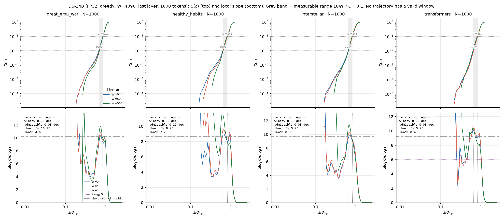
Setup. Four of the 13 trajectories, chosen to span the TwoNN range and the T4 range: great_emu_war (TwoNN 4.66, lowest), healthy_habits (7.23, the widest admissible range), interstellar (8.90, highest TwoNN), transformers (8.43; T4 chord 9.25 and MLE 15.9). For each, $C(\epsilon)$ is drawn for Theiler $W=0,50,500$ on the common $\epsilon/d_{typ}$ grid; the grey vertical band is the admissible range $[\epsilon_{10/N},\epsilon_{0.1}]$; dotted horizontals in the top row are $10/N$ and $0.1$. The bottom row is the local slope, with the finite-$N$ ceiling $2\log_{10}N=6.0$ (violet dotted) and the $W=0$ chord over the admissible range (grey dash-dot). No valid window is shaded because there is none.
Axes. Top row: $\epsilon/d_{typ}$ log, $10^{-2}$ to $2.5$; $C(\epsilon)$ log, $10^{-5}$ to $1$. Bottom row: same $x$; $d\log C/d\log\epsilon$ linear, 0 to 11-13. Each panel is one trajectory, $N=1000$.
Numbers. $W=0$, in the order of the panels:
| quantity | great_emu_war |
healthy_habits |
interstellar |
transformers |
|---|---|---|---|---|
| admissible span (dec) | 0.08 | 0.11 | 0.08 | 0.08 |
| $\epsilon$ at $C=10/N$ / $C=0.1$ | 0.672 / 0.846 | 0.634 / 0.827 | 0.651 / 0.826 | 0.654 / 0.835 |
| slope at those edges | 9.1 -> 9.3 | 8.9 -> 8.0 | 9.4 -> 9.0 | 10.1 -> 9.1 |
| chord $D_2$ | 10.27 | 8.70 | 9.73 | 9.26 |
| TwoNN | 4.66 | 7.23 | 8.90 | 8.43 |
| peak local slope (any $\epsilon$) | 24.2 | 29.0 | 30.3 | 27.9 |
The $C(\epsilon)$ curves are nearly indistinguishable across trajectories and across Theiler windows: the $W=50$ and $W=500$ curves peel off only at the smallest $\epsilon$ (where removing adjacent pairs matters) and coincide through and above the admissible band. The slope curves have the same shape in all four panels: a noisy steep rise at small $\epsilon$, a bowl at 3-5, then the bulk rise to 9-11 and a drop to zero at saturation. No panel has a horizontal segment.
What it shows. The absence of a plateau is not idiosyncratic to one prompt. It is the same geometric object in all four: a distance distribution whose $1\%$ to $10\%$ quantiles are 20% apart in $\epsilon$. The four panels also show why the "D2" numbers move with the Theiler window: the only visible changes from $W=0$ to $W=500$ are at small $\epsilon$, below the depletion floor, so they cannot create or destroy a valid window.
What it does not show. The 4-point sampling of the admissible band means the plotted slope inside the grey band is essentially an interpolation between grid points; the curve is not evidence of a fractal at any finer resolution. The panels are at $N=1000$ only. The fact that the slope inside the band is close to the chord (by construction) does not mean the chord is a dimension: the same construction would return 12 for any smooth distance distribution with a 0.08-decade 1%-to-10% range. And the (visible) similarity of the four prompts is not a test of prompt-independence: these prompts are all long expository requests, and 12 of 13 are from one prompt list.
ds14d2_summary.png — estimates, loop screen, and N dependence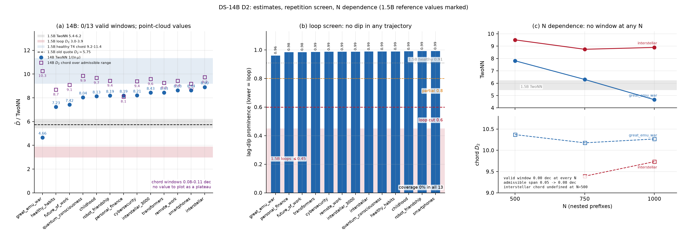
Setup. All 13 trajectories, sorted by TwoNN. The open violet squares are the $W=0$ chord over the admissible range -- the number a reader gets who does not demand a plateau. The filled blue circles are TwoNN. No filled symbol of the "valid window $D_2$" kind appears because 0/13 passed. Horizontal bands are the 1.5B reference values: TwoNN 5.44-6.23 (grey), the period-53/69 loop T4 chords 2.98-3.89 (red), the healthy T4 chords 9.20-11.35 (blue), and the old headline 5.75 (black dashed, from docs/MEASUREMENTS.md, with 5.69 on its time-shuffled control).
Axes. $x$: the 13 trajectory names, sorted by TwoNN; $y$: $\hat D$ / TwoNN, 0-13.6. Numbers beside the symbols are the plotted values.
Numbers. TwoNN 4.66-8.90 (median 8.19); chord 8.10-10.27; T4-style 8.69-11.75 with fit windows 0.02-0.07 decades. The MLE $k=10$ (not drawn, table above) is 10.97-15.87. So the 14B TwoNN median (8.19) sits above the 1.5B TwoNN band, the chords partly overlap its healthy T4 band (8.10-10.27 against 9.20-11.35), and the MLE (10.97-15.87) is above the TwoNN band with its lower end overlapping the top of the T4 band. The lowest TwoNN (great_emu_war, 4.66) is below the 1.5B band but is also the least $N$-stable of the 13 (7.82 at $N=500$).
What it shows. Three things. (1) The old 1.5B headline 5.75 has no 14B analogue that means the same thing: the 14B chords are 8-10 and the 14B TwoNN spans the 1.5B band and both sides of it. (2) The point-cloud estimators disagree by a factor 1.7-2.4 (MLE/TwoNN), so "the dimension of the 14B state cloud" is not a single number even before the scaling question. (3) Any 14B number quoted as "D2" would be a chord, and chords here are 0.02-0.07 decades wide -- narrower than the 1.5B's already-narrow 0.04-0.10.
What it does not show. The bands are reference values, not confidence intervals; the 1.5B and 14B use different $N$, $d$ and prompt sets. TwoNN is not corrected for the finite-$N$ bias visible in panel (c), so the vertical position of a point is not an unbiased dimension. The T4-style chords are computed on the 1000-point matrix, not on the 2000-state rebuild which reproduced the published 1.5B numbers exactly, so they are the same code path but not a published-number reproduction.
Setup. For each trajectory, the minimum of $p(k)/\mathrm{median}\,p(k\pm1,2,3)$ over lags $k=1\ldots599$, where $p(k)$ is the mean distance at lag $k$ in units of $d_{typ}$. The red band reaches 0.45, the largest prominence of any 1.5B loop (the nine full loops were 0.04-0.22; two partial ones 0.21 and 0.45); the dashed lines are the pipeline's loop cut 0.6 and partial cut 0.8; the grey dotted line is the 1.5B healthy floor 0.91. Bars are the 13 values.
Axes. $x$: trajectories sorted by prominence; $y$: prominence, 0-1.06. A loop is a low bar. The coverage (fraction of positions returning within $0.1d_{typ}$ at the best lag) is 0% for every bar.
Numbers. Prominence 0.961-0.992; coverage exactly 0.0 for all 13. The lowest is great_emu_war (0.961), which also has the lowest nearest-twin distance (0.53 $d_{typ}$). The 1.5B full loops were 0.04-0.22 (the two validated runs 0.058 and 0.098; coverage 70-95%), and the 1.5B healthy runs 0.91-0.99. All 13 14B bars sit inside the 1.5B healthy range, and the margin to the loop cut is 0.36 (0.961-0.6).
What it shows. The absence of loops is not a threshold artefact: the values are at the top of the metric's range, not near the cut. The lag-distance curve has no dip at any lag: even the shortest lag (1 token) has mean distance 0.79-0.83 $d_{typ}$ and the minimum over lags 1-49 is at lag 1 in every trajectory, so there is no short-period alternation either. The 1.5B loop signature (a dip to 6-10% of the neighbouring lags at a period of 12-81) is simply absent.
What it does not show. A repetition whose period exceeds 600 tokens cannot produce a prominence dip in a 1000-token run (at most one recurrence); the screen would miss a slow loop that appears only once. The screen also cannot rule out repetition in the text that does not return the state to within $0.1d_{typ}$; it measures state recurrence, not token n-grams. And a 1000-token horizon is short relative to the 1.5B runs that looped at 4095 tokens, so the comparison in section 5 uses the matched 1000-token subset as well as the full 20.
Setup. Nested prefixes of two trajectories chosen at the TwoNN extremes: great_emu_war (lowest TwoNN) and interstellar (highest). At each $N\in\{500,750,1000\}$ the same pipeline is rerun with $W=0$: the top panel is TwoNN, the bottom panel the chord over the admissible range. The admissible span grows from 0.054 to 0.081 decades.
Axes. $x$: $N=500,750,1000$ (nested prefixes). Top $y$: TwoNN, 4.0-10.2, with the 1.5B TwoNN band 5.44-6.23 in grey. Bottom $y$: chord $D_2$, 9.0-10.8. The valid-window width is 0.00 dec at every point.
Numbers.
| $N$ | great_emu_war TwoNN |
great_emu_war chord |
interstellar TwoNN |
interstellar chord |
|---|---|---|---|---|
| 500 | 7.82 | 10.37 | 9.51 | -- |
| 750 | 6.30 | 10.18 | 8.75 | 9.39 |
| 1000 | 4.66 | 10.27 | 8.90 | 9.73 |
For interstellar at $N=500$ the admissible range contains fewer than three grid points, so not even the chord is defined. The MLE $k=10$ moves 12.6 -> 12.2 -> 11.0 (great_emu_war) and 14.6 -> 15.2 -> 15.1 (interstellar), i.e. much less than TwoNN.
What it shows. The "no window" verdict is not an $N=1000$ accident: it holds at 500 and 750 too. The chord is remarkably stable (10.2-10.4 and 9.4-9.7) while TwoNN moves by 3.2 units on one trajectory and 0.8 on the other; the chord is stable because it is measuring the width of the distance distribution, which is set by $d$ and the cloud shape, not by $N$. TwoNN's drift is the expected finite-$N$ bias of a nearest-neighbour estimator in a high-dimensional, non-uniform cloud; the direction differs between trajectories, so there is no single correction.
What it does not show. Nested prefixes are not independent samples: the $N=500$ cloud is a subset of the $N=750$ and $N=1000$ clouds, so the curves are correlated. The $W=500$ curve is undefined at $N=500$ (no pairs with $\lvert i-j\rvert>500$) and is not shown. And the exercise cannot simulate the $N$ that would actually settle the question: extrapolating the measured $C(\epsilon)$ (e.g. $C(0.33d_{typ})\approx 1.3\times10^{-4}$) puts the $10/N$ floor 0.4 decades below $C=0.1$ only at $N\sim7\times10^{4}$ (range $1.5\times10^{4}$-1.7$\times10^{5}$), 15-170 times more tokens than these runs contain.
ds14d2_time_shuffle.png — the estimator at $W=0$ does not see time at all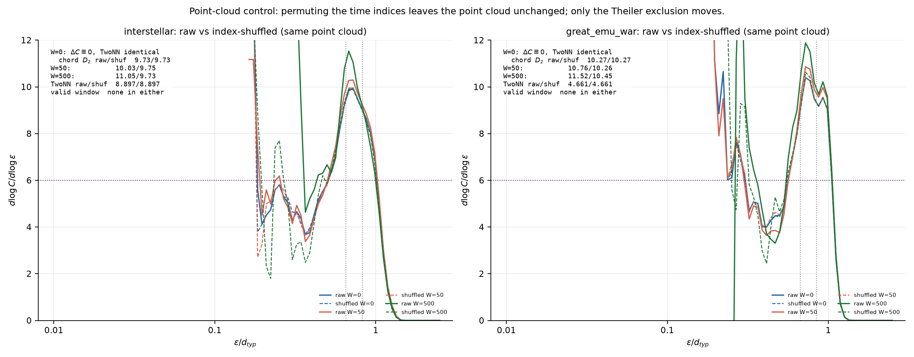
Setup. Two trajectories, interstellar and great_emu_war. For each, the raw distance matrix $D$ is compared with $D'=PDP^{\top}$, where $P$ is a random permutation matrix (seed 20261121) -- equivalently, the same point cloud with its time labels permuted. This changes no distance: the multiset $\{d_{ij}\}$ is identical. $C(\epsilon)$ is evaluated on the same $\epsilon$ grid for both, so at $W=0$ the comparison is exact algebra, not a numerical check. The solid lines are raw, the dashed lines the shuffled matrix; blue/green/red are $W=0/50/500$. The grey vertical lines are the admissible edges of the raw run; the violet dotted line is $2\log_{10}N=6$.
Axes. $x$: $\epsilon/d_{typ}$ log, 0.008-3; $y$: local slope, 0-12. The text block gives the chord $D_2$ and TwoNN for raw and shuffled.
Numbers.
interstellar raw / shuffled |
great_emu_war raw / shuffled |
|
|---|---|---|
| $W=0$: $\max\lvert\Delta C\rvert$ | 0 | 0 |
| $W=0$: chord $D_2$ | 9.73 / 9.73 | 10.27 / 10.27 |
| $W=0$: TwoNN | 8.897 / 8.897 | 4.661 / 4.661 |
| $W=50$: chord $D_2$ | 10.03 / 9.75 | 10.76 / 10.26 |
| $W=500$: chord $D_2$ | 11.05 / 9.73 | 11.52 / 10.45 |
| $W=50$: $\max\lvert\Delta C\rvert$ | 0.011 | 0.018 |
| $W=500$: $\max\lvert\Delta C\rvert$ | 0.039 | 0.020 |
| valid window, any $W$ | none / none | none / none |
What it shows. At $W=0$ the correlation integral and TwoNN are exactly invariant under the permutation: the estimator is a point-cloud statistic by construction. This is the control that the earlier "raw vs time-shuffled" comparison in results/d2/ implicitly relied on: when the old numbers were 5.75 raw vs 5.69 shuffled, the near-equality was not evidence that the dynamics are trivial; it was a tautology at $W=0$ (and the old code used Theiler 20 for raw and 0 for shuffled, so even the comparison was not matched). The only genuine temporal information enters through $W>0$: excluding near-in-time pairs changes the chord by 0.28-0.50 at $W=50$ and 1.07-1.32 at $W=500$, because consecutive last-layer states are 0.79-0.83 $d_{typ}$ apart while the typical separation is $1\,d_{typ}$ by construction. This is a mild temporal smoothness, not a low-dimensional trajectory: it shifts a chord but does not open a window.
What it does not show. The shuffle preserves the point cloud exactly, so it cannot test whether a different cloud with the same time series would have a different dimension; it tests only the estimator's sensitivity to the ordering of a fixed cloud, which is the right control for a point-cloud estimator but is silent about dynamics. It uses one permutation (the $W=0$ result is exact for every permutation, the $W>0$ result is one draw). It does not test phase-randomised surrogates, which destroy the point cloud as well as the order and therefore cannot separate the two effects. And it says nothing about whether the last-layer state should be expected to carry dynamics at all; a state cloud can have a low dimension for reasons unrelated to temporal recurrence.
| quantity | 1.5B (20 local runs) | 14B (13 runs, this section) |
|---|---|---|
| hidden size | 1536 | 5120 |
| horizons | three 4095-token runs, sixteen 1000-token runs, one 1026-token run | twelve 1000-token runs, one 1500-token run truncated to 1000 |
| valid scaling window | none on the two healthy runs; one spurious 0.54-dec window ($\hat D_2=1.09$) on a period-53 loop | none (0/13) |
| admissible span, healthy | 0.08 decades | 0.08-0.11 decades |
| T4-style fit width | 0.039-0.102 decades | 0.02-0.07 decades |
| T4-style $D_2$ | 9.20-11.35 healthy, 2.98-3.89 loops | 8.69-11.75; no loops |
| TwoNN | 5.44-6.23 (all four validated runs) | 4.66-8.90, median 8.19 |
| MLE $k=10$ | 7.9-10.1 healthy, 3.1 loops | 10.97-15.87 |
| repetition loops | 9 full + 2 partial / 20; 6 full + 2 partial / 16 at 1000 tokens | 0 full + 0 partial / 13 |
| loop prominence | 0.04-0.22 full (validated runs 0.058/0.098), 0.21/0.45 partial, 0.91-0.99 healthy | 0.961-0.992 |
| loop coverage | 70-95% | 0% |
| nearest-twin median ($d_{typ}$) | 0.016-0.017 loops, 0.419-0.538 healthy | 0.527-0.670 |
| old headline | 5.75 raw / 5.69 shuffled (max-$R^2$ chords) | no comparable headline; chords 8.10-10.27 |
No. Not one of the 13 passes the rule, and the reason is the same one that made the 1.5B healthy runs fail: the interval between the depletion floor $10/N$ and saturation $C=0.1$ is only 0.08-0.11 decades, sampled by 4-5 grid points, while the rule needs 0.40 decades and 5 points. The 14B is if anything more decisively windowless: its T4-style best fits are 0.02-0.07 decades wide (1.5B: 0.039-0.102), and its MLE at $k=10$ (11-16) is above the 1.5B healthy range (7.9-10.1). The only window ever found on the 1.5B was the spurious 0.54-decade, $\hat D_2=1.09$ window on the period-53 loop cyber; the 14B has no loop, so there is no counterpart, spurious or otherwise.
This is not a claim that the 14B cloud is "more random" or "higher-dimensional" in a dynamical sense. It is a statement about resolution: at $N=1000$ and $d=5120$, the 1%-to-10% range of the distance distribution is 20% wide, and no estimator can extract a 0.4-decade slope from it. The 1.5B at $d=1536$ has the same 0.08-decade range, so the resolution limit is not set by $d$ alone; it is set by the shape of the state cloud and by $N$.
Less, by a wide and screen-independent margin. Counts first.
The two nearest-neighbour definitions agree once their scales are matched, and neither is a threshold trick.
The GPU screen (summary.json). It takes the last three quarters of the states, $h[250{:}]$ for $N=1000$; computes all pairwise distances; excludes $\lvert i-j\rvert<50$; and reports the median and p05 of the nearest remaining distance divided by $\mathrm{median}_i\lVert h_i-\bar h\rVert$, the distance to the centroid. That is a centroid scale, not the pairwise $d_{typ}$ used by the laptop pipeline, so the numbers are not directly comparable to the 1.5B's 0.016 $d_{typ}$ until rescaled. The measured values are median 0.728-0.996 and p05 0.355-0.557.
I recomputed this statistic from the .npz states and reproduced the GPU values for 12/13 rows to all printed digits (e.g. great_emu_war 0.728/0.377, transformers 0.990/0.547). The 13th, interstellar_3000, reads 0.875/0.422 in summary.json because the GPU used the full 1500 states starting at index 375 (1125 points), while the truncated analysis uses 1000 states starting at index 250 (750 points); recomputing on the full run gives exactly 0.8751/0.4216. This is a definitional difference from truncation, not a disagreement.
The laptop screen. It uses all $N$ points, the same $\lvert i-j\rvert\ge50$ exclusion, and $d_{typ}$ (median rms pairwise distance) as the scale; it reports the fraction of points below $10^{-3}d_{typ}$, plus median and p05. The values are median 0.527-0.670, p05 0.270-0.369, fraction below $10^{-3}$ 0.000 in every run. The ratio between the two conventions is 1.38-1.55, roughly $\sqrt2$, as expected when a centroid distance is compared with a pairwise one. Within either convention the 14B is far from a loop: the 1.5B loop runs' nearest-twin median was 0.016-0.017 $d_{typ}$ (about 0.023 in centroid units), a factor 31-43 below the 14B medians (0.527-0.670 $d_{typ}$ / 0.728-0.996 centroid), and the 14B's lowest p05 (0.270 $d_{typ}$ / 0.377 centroid) is still 16-17 times the 1.5B loop median.
Reconciling the two screens is also a warning about the $10^{-3}$ threshold. The absolute-threshold screen returns 0.000 for the 1.5B loops too, because those loops drift: their repeats sit at 1.6% of the cloud scale, not at $10^{-3}$. So the "fraction below $10^{-3}$" is not the loop detector, and the fact that it is zero here would not by itself prove no loops. The detector that found the 1.5B loops is the lag-distance prominence; the GPU rel_nearest median is a second, cruder version of the same signal (a near-recurrence at some lag lowers the nearest-neighbour distance). On the 14B, the prominence screen is at the top of its range (0.961-0.992) and the GPU nearest-neighbour median is at 0.73-1.00, so both agree: no repeating trajectory. The two statements are consistent because they measure the same near-recurrence, one through the minimum over lags and one through the nearest neighbour among all $j$ with $\lvert i-j\rvert\ge50$.
The 14B is not a lower-dimensional object than the 1.5B; if anything the point-cloud estimates are higher. TwoNN's median (8.19) is above the 1.5B's 5.44-6.23, and the MLE at $k=10$ (11-16) is above the 1.5B healthy range (7.9-10.1). The chord $D_2$ partly overlaps the 1.5B healthy T4 range but is not the same estimator: it is a 4-point fit over a 0.08-decade interval, whereas the 1.5B T4 values came from 6-8 of 22 percentile grid points. The honest cross-model statement is therefore narrow: both models' last-layer clouds are too high-dimensional and too concentrated for $N\sim10^3$ to resolve a correlation dimension; the 14B is at least as high-dimensional as the 1.5B by the nearest-neighbour and MLE estimators, and neither model has a valid scaling region on a healthy trajectory. The 14B is clearly different in one respect: its greedy trajectories do not fall into the drifting repetition loops that affected 9 of the 20 1.5B runs.
Qwen3.5-9B is a 9B hybrid-attention model: 32 blocks, hidden size 4096, and a repeating period of four in which three Gated DeltaNet (linear-attention) blocks are followed by one full-attention block (blocks $3,7,11,\dots,31$). It has no sliding window (the run metadata stores window=0). On the same prompt and protocol as the 14B — interstellar_travel, $P=64$ tokens, 300 greedy tokens, $r=0.1$, 1000 directions — its behaviour is quantitatively between the 1.5B and the 14B, but much closer to the 1.5B in flippability.
The calibration run (400 tokens) contains no razor-thin tie. Its smallest top-1/top-2 gap is $6.87\times10^{-3}$ nats at $t=327$, then $7.27\times10^{-3}$ at $t=267$, $1.74\times10^{-2}$ at $t=160$, $1.89\times10^{-2}$ at $t=322$ and $2.05\times10^{-2}$ at $t=69$. The smallest margin is 75x thicker than the 14B's $9.73\times10^{-5}$ and 2.8x thinner than the 1.5B's $2.02\times10^{-2}$. Its fp32 response floor is $6.1\times10^{-4}$, 4.4x below the 14B's $2.7\times10^{-3}$, so the linear window is wider than the 14B's on the low side: $r\in[0.01,0.3]$.
The core A1 run ($K=1000$, $r=0.1$, $T=300$) has one step below 0.01 nats ($t=267$, $m=7.27\times10^{-3}$), 12 steps below 0.1, median margin 2.46 nats. The flux-tube radius has median $r_*=0.707$ (14B: 0.116; 1.5B: 1.56), so only 12/1000 directions (1.2%) flip at $r=0.1$ — 38x fewer than the 14B's 45.3% — while 35% need $r>1$ to flip anything in 300 tokens.
The new measurement is the per-block layer profile. The median response $\|\delta h_t^b\|/r$ grows monotonically by 159x from block 0 to block 30 (30/30 positive increments), with no visible compression at the three linear-attention blocks in each period. The seven saved full-attention blocks grow on average 1.24x per block against 1.18x for the linear blocks — a 5.3% excess per block — but a permutation over the 7 block labels gives $p=0.18$ ($p=0.15$ after removing the linear depth trend), and two of the seven (blocks 7 and 11) show no excess at all. Only blocks 3, 15, 19 and 27 produce visible local spikes. The response also decays by 3-4.5x along generated time at every depth, and relative to the baseline state norm it saturates after block 19 ($\|\delta h\|/\|h_0\|\approx4.0\times10^{-3}$ from block 19 to 30); most of the late absolute growth is radial/state-norm growth, not a growing angular perturbation.
Free-run validation is decisive. The signed top-2 threshold rule predicts 0/12/160 flips at $\rho=0.05/0.1/0.3$ against 0/12/157 observed; at $\rho=0.1$ all 12 flips are exact, and at $\rho=0.3$ the classification is 91.8% accurate (104 exact, 27 wrong step, 29 false alarms, 26 misses). The sign-blind rule would predict 20 and 305 flips and is rejected. Every observed flip is a top-2 word swap (Ex$\to$Specific at 267, Distance$\to$The at 69, …), and 0/169 flipped rows re-synchronise; post-flip agreement is 2.9% at $\rho=0.1$ and 2.0% at $\rho=0.3$ (0.55% after the echoed task sentence).
Finally, because h0_last is stored in this run, the response-vs-state angle is measurable for the first time at this scale: the median angle between $\delta h$ and the baseline final state is 90.08° (IQR 89.51-90.91°), with 80.2% of pairs inside $87^\circ\pm5^\circ$ and 54.7% beyond 90°. The 1.5B's "responses sit about 87° from the state" is reproduced and sharpened: at 9B the response is, if anything, exactly perpendicular.
| item | value |
|---|---|
| model | Qwen3.5-9B, Qwen3_5ForConditionalGeneration, FP32 |
| blocks / width | 32 / $d=4096$; vocabulary 248320 (padded) |
| attention | period 4: three Gated DeltaNet linear-attention blocks, then one full-attention block |
| full-attention blocks | $3,7,11,15,19,23,27,31$ (8 total) |
| sliding window | none (documented null; metadata window=0) |
| prompt | interstellar_travel, $P=64$ tokens |
| calibration | 8 directions x 9 radii, 400 greedy tokens, prompt perturbation |
| A1 | 1000 directions, $r=0.1$, $T=300$, teacher-forced on the baseline tokens |
| free run | same 1000 directions, greedy, own KV cache, $\rho\in\{0.05,0.1,0.3\}$ |
| files | results_big/qwen35/calib/calib.npz, results_big/qwen35/a1_inter_w0/a1.npz, results_big/qwen35/free_inter_w0/{free_run.npz,summary.json} |
The A1 margins are self-consistent with the baseline tokens: top1[t] == gen_ids[t] for all 300 steps, and the in-batch duplicate $r=0$ rows are bit-identical (stored flag). The free-run summary.json fields mean_postflip_agreement (1.000 / 0.998 / 0.941) are whole-run agreement including the 988 and 843 non-flipped rows; they are not post-flip means and are not used as such below.
This matters because the npz stores 32 state slots but the model has 32 blocks, and the last full-attention block is not among them.
| object | convention (verified against src/chaos_llm/big_engine.py:Capture) |
|---|---|
| state $0$ | embedding output |
| state $l\ge1$ | output of block $l-1$ |
| saved states | $0,1,\dots,31$; therefore blocks $0,\dots,30$ |
| block $31$ (full attention) | output is state $32$, not saved |
| full-attention blocks visible in the profile | $3,7,11,15,19,23,27$ (outputs = states $4,8,12,16,20,24,28$) |
dh_last / h0_last |
final-norm output (after block 31 and RMSNorm), i.e. state 32; 24 directions only |
All figure panels and tables below label by block index $b$, not state. State 0 is identically zero in both the calibration and the A1 run: the perturbation touches only the 64 prompt positions, so nothing can appear at generated positions before the first attention mix.
| symbol | explicit expression | meaning | why this quantity |
|---|---|---|---|
| $m_t$ | $\ell_t^{(1)}-\ell_t^{(2)}$ | top-1 minus top-2 logit gap of the unperturbed run (nats) | the only scalar that says how close a greedy decision was |
| $\delta m_t(u)$ | $m_t(u)-m_t(0)$ at $r=0.1$ | change of the gap under direction $u$ | first-order response of the decision |
| $r_c^-(t,u)$ | $m_t\,r/\max(-\delta m_t(u),0)$; $+\infty$ if $\delta m_t\ge0$ | radius at which step $t$ would flip | signed threshold; a positive $\delta m$ widens the gap and cannot flip |
| $r_*(u)$ | $\min_t r_c^-(t,u)$ | flux-tube radius | smallest radius at which direction $u$ flips anything in 300 tokens |
| $t_*(u)$ | $\arg\min_t r_c^-(t,u)$ | controlling step | which decision is the weak point |
| $T_{\rm pred}(\rho,u)$ | $\min\{t:\rho\ge r_c^-(t,u)\}$ | predicted first flip | comparable with the free run's obs |
| $G(u)$ | $\mathrm{median}_t\|\delta h_t^{\rm last}(u)\|/r$ | response gain per unit radius | how strongly a direction moves the final state |
| $\mathrm{angle}(u,t)$ | $\arccos\!\big(\langle\delta h_t^{\rm last},h_{0,t}^{\rm last}\rangle/(\|\delta h\|\,\|h_0\|)\big)$ | angle between the response and the baseline state | tests the 1.5B claim that responses are near-perpendicular to the state |
For the layer profile, the response is $\|\delta h_t^b\|/r$ with $b$ the block whose output is state $b+1$; the division by $r$ is exact in the measured linear window and makes the profile comparable across radii. Percentile bands are over the 1000 directions (or over $t$ where stated).
One discrepancy with the brief, flagged rather than copied. The brief quotes a calibration median margin of "~3.99". The saved calib.npz margins over 400 steps have median 2.634 and mean 4.143; 3.99 is not a median of this array (it is closest to the mean). The values below are the file's values. The A1 300-token margins have median 2.461 and mean 4.054, consistent with the first 300 steps of the calibration run.
q35_calib.png — no razor tie, a wider linear window, a lower floor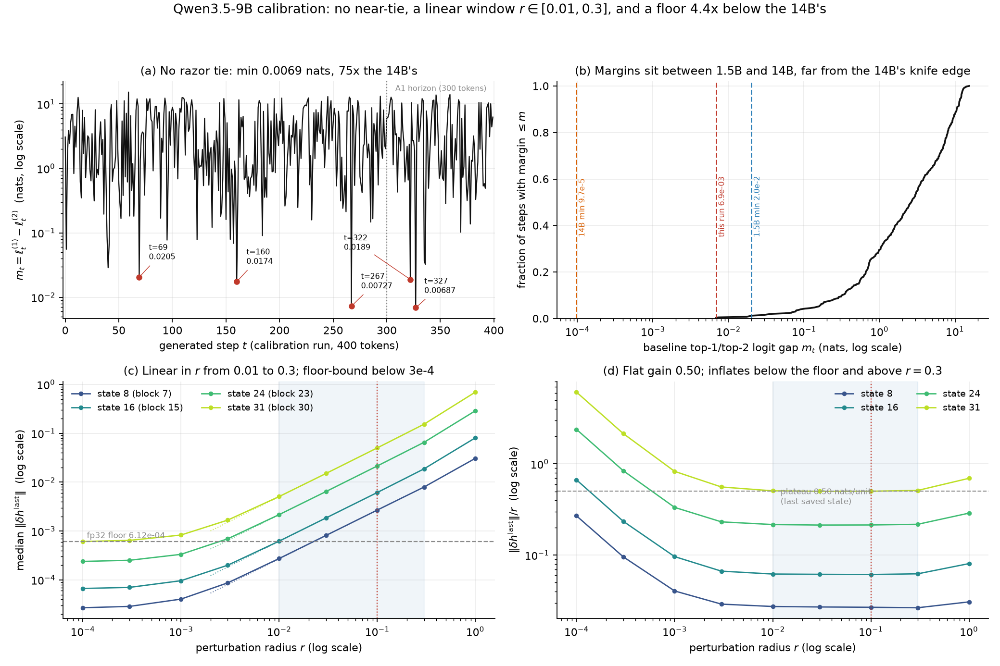
Setup. Eight unit directions on the prompt embedding, nine radii from $10^{-4}$ to $1$, 400 greedy tokens, teacher-forced on the model's own continuation. The response is read at the last saved state (state 31 = output of block 30). The left panels use the unperturbed margins; the right panels use $\mathrm{median}_{u,t\in[100,400)}\|\delta h_t^{\rm last}\|$.
Axes. (a) $x$: generated step $t$; $y$: $m_t$ on a log scale; the dotted line is the 300-token A1 horizon. (b) $x$: $m_t$ on a log scale; $y$: fraction of steps with margin $\le m$. (c) log-log: $x$ radius $r$, $y$ median response $\|\delta h\|$; dotted lines are slope-1 guides anchored at $r=0.1$; the dashed horizontal line is the fp32 floor. (d) $x$: radius; $y$: $\|\delta h\|/r$; the shaded band is the clean window $r\in[0.01,0.3]$, the red dotted line is the campaign radius $r=0.1$.
| $r$ | $10^{-4}$ | $3\times10^{-4}$ | $10^{-3}$ | $3\times10^{-3}$ | $10^{-2}$ | $3\times10^{-2}$ | $0.1$ | $0.3$ | $1$ |
|---|---|---|---|---|---|---|---|---|---|
| $\|\delta h\|$ (state 31) | 6.12e-4 | 6.45e-4 | 8.28e-4 | 1.67e-3 | 5.07e-3 | 1.50e-2 | 5.02e-2 | 1.54e-1 | 6.96e-1 |
| $\|\delta h\|/r$ | 6.12 | 2.15 | 0.828 | 0.558 | 0.507 | 0.501 | 0.502 | 0.512 | 0.696 |
The same plateau appears at the other saved states: $0.0265$ (state 8), $0.0614$ (state 16), $0.214$ (state 24) at $r=0.1$, each flat to a few percent across $r\in[0.01,0.3]$.
q35_layer_profile.png — monotone 159x growth, no linear-block compression, a weak full-attention excess
Setup. Same A1 run: 1000 directions at $r=0.1$, 300 tokens, all 32 saved states. For each block $b$ and step $t$, the plotted quantity is $\mathrm{median}_u\|\delta h_t^b\|/r$; $b$ runs from 0 to 30 (the output of block $b$ is state $b+1$). The seven full-attention blocks whose outputs are saved are marked in red/cyan; block 31's output (state 32) is not in the file.
Axes. (a) Heatmap: $x$ generated step $t$, $y$ block index $b$, color $\log_{10}$ of the median response; cyan horizontal rules and cyan tick labels mark full-attention blocks. (b) $x$ block index $b$, $y$ median $\|\delta h\|/r$ on a log scale; the band is the 10-90% range over $t$; red dots are full-attention blocks, blue dots linear blocks. (c) $x$ block index $b$, $y$ the ratio of the median response at state $b+1$ to that at state $b$; red bars are full-attention blocks; the dashed line is the mean over blocks 1-30.
Depth growth is monotone and large. The median-over-$t$ response rises from $5.3\times10^{-3}$ at block 0 to $0.843$ at block 30, a factor 159x; every one of the 30 block-to-block intervals is positive (30/30). There is no periodic sawtooth at the 3:1 pattern in this median-over-$t$ profile: the three linear blocks between two full-attention blocks always add response, never subtract it. The first finite block-to-block jump is 2.00x at block 1, then 1.37x at block 2, 1.45x at block 3 (full), 1.35x at block 15 (full), 1.32x at block 19 (full) and 1.19x at block 22 (linear); the late blocks are in the 1.09-1.17x range regardless of type. (Per individual step some blocks do contract; the statement here is about the median over the 1000 directions and 300 steps.)
| block $b$ | 3 | 7 | 11 | 15 | 19 | 23 | 27 | mean full | mean linear (1-30) |
|---|---|---|---|---|---|---|---|---|---|
| growth through block | 1.451 | 1.148 | 1.111 | 1.353 | 1.315 | 1.159 | 1.159 | 1.242 | 1.180 |
The full-attention mean is 5.3% higher per block (1.242/1.180). A permutation test over the 7 full-attention labels among blocks 1-30 gives $p=0.179$; after removing a linear depth trend, $p=0.155$. The per-step version is consistent in sign: 76.7% of the 300 steps have a positive full-minus-linear growth difference, with mean $+0.043$ nats/block. So the effect is suggestive but not significant with seven blocks, and it is not uniform: blocks 3, 15, 19 and 27 spike, while blocks 7 and 11 are indistinguishable from their linear neighbours. This is the honest answer to "is there a visible signature at the full-attention blocks": a weak one, not a clean periodic one.
Time decay. At every depth the response is strongest near the prompt and decays with generated step. The ratio of the median over $t\in[250,300)$ to the median over $t\in[0,50)$ is 0.32 at state 1, 0.30 at state 4, 0.32 at state 8, 0.34 at state 12, 0.31 at state 16, 0.23 at state 20, 0.22 at state 24, 0.24 at state 28 and 0.28 at state 31. The heatmap shows the same pattern as vertical banding: the perturbed prompt's influence is diluted as generation proceeds, with individual late tokens acting as local amplifiers. This decay is not specific to the linear blocks; it is present at shallow and deep states alike.
Relative response. Dividing by the baseline state norm $\|h_0\|$ removes the radial growth. The relative response rises from $8.6\times10^{-4}$ at block 0 to $4.22\times10^{-3}$ at block 19 and then stays at $3.9$-$4.3\times10^{-3}$ through block 30. The absolute 159x growth is therefore not a 159x growth of the angular perturbation: after block 19 the residual stream is mostly growing in magnitude, and the perturbation grows with it.
Caveat. The last full-attention block (31) is not in the saved states. Its post-final-norm response is available only for the 24 dh_last directions and is $0.643$ per unit radius (median over directions of the per-direction time median), but the final RMSNorm rescales the vector and makes that number not directly comparable to the pre-norm block profile. No claim is made about block 31's contribution.
q35_margins_rstar.png — a wide flux tube, two controlling steps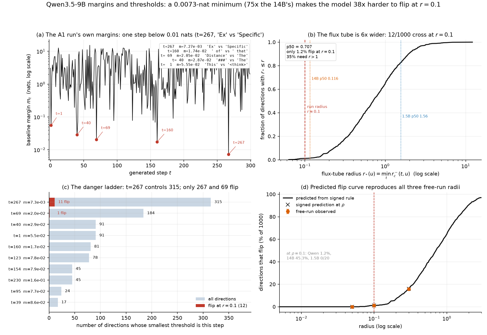
Setup. A1 run only ($r=0$, margins; $r=0.1$, responses), 1000 directions, 300 tokens. The signed threshold is used throughout: $r_c^-(t,u)=m_t r/\max(-\delta m_t,0)$, with $+\infty$ when the perturbation widens the gap.
Axes. (a) $x$: generated step $t$; $y$: $m_t$ on a log scale; the five smallest are marked and the word pair at each is listed. (b) $x$: $r_*$ on a log scale; $y$: fraction of directions with $r_*\le r$; the dashed red line is the run radius, the dotted lines are the 14B and 1.5B medians. (c) Horizontal bars: the ten steps that control the most directions; pale = all 1000, red = the subset that flips at $r=0.1$. (d) $x$: radius on a log scale; $y$: fraction of directions predicted to flip; the black curve is the signed rule over all 1000, the orange points are the free-run observations at 0.05/0.1/0.3 with binomial error bars.
Margins. Median 2.461 nats, mean 4.054, p10 0.310, p1 0.0286; 12/300 steps below 0.1 and 1/300 below 0.01. The five smallest:
| $t$ | 267 | 160 | 69 | 40 | 1 |
|---|---|---|---|---|---|
| $m_t$ | 7.27e-3 | 1.74e-2 | 2.05e-2 | 2.87e-2 | 5.55e-2 |
| top-1 vs top-2 | Ex / Specific |
of / that |
Distance / The |
### / The |
This / <think> |
The thinnest gap is a word-choice tie inside a bullet list: the baseline writes **Exhaust Velocity..., while the runner-up opens **Specific Impulse.... Both are grammatically and semantically plausible, which is exactly why a 0.007-nat gap is dangerous.
Flux-tube radius. $r_*$ quantiles: p10 0.232, p25 0.394, p50 0.707, p75 1.254, p90 1.956, p95 2.516; 350/1000 directions need $r>1$. At $r=0.1$ only 12 directions (1.2%) cross; at $r=0.3$, 16.0%. The 14B's p50 was 0.116 (6.1x smaller) and its flip fraction at 0.1 was 45.3% (38x larger). The 1.5B's p50 was 1.56 (2.2x larger) and it flipped 0/20 at 0.1. The Qwen3.5-9B flux tube is therefore intermediate but much closer to the 1.5B.
Danger ladder. Only 16 distinct steps control any of the 1000 directions, and only 2 control a direction that flips at $r=0.1$:
| step | $m_t$ | all directions | flip at $r=0.1$ |
|---|---|---|---|
| 267 | 7.27e-3 | 315 | 11 |
| 69 | 2.05e-2 | 184 | 1 |
| 40 | 2.87e-2 | 91 | 0 |
| 1 | 5.55e-2 | 91 | 0 |
| 160 | 1.74e-2 | 81 | 0 |
| 123 | 7.80e-2 | 78 | 0 |
| 154 | 7.91e-2 | 45 | 0 |
| 230 | 1.59e-1 | 45 | 0 |
| 95 | 7.73e-2 | 24 | 0 |
| 39 | 8.62e-2 | 17 | 0 |
The distribution is not a single knife edge: it is a small set of moderately thin decisions (0.007-0.16 nats) spread through the continuation. That is qualitatively different from the 14B, where 503 directions were controlled by $t=21$ alone at $9.7\times10^{-5}$.
q35_free_validation.png — the signed rule predicts all 12 flips at $\rho=0.1$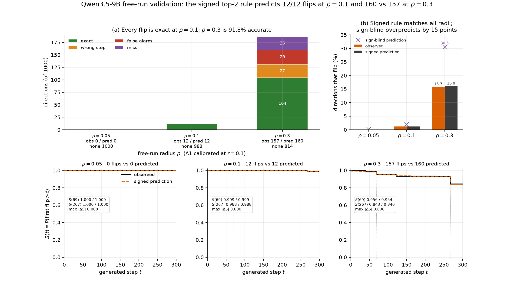
Setup. The same 1000 directions and prompt perturbation as A1, now generated greedily with the model's own KV cache for 300 tokens at $\rho=0.05,0.1,0.3$. obs is the first generated token that differs from the baseline; pred is recomputed here with the signed rule from A1's $m_t$ and $\delta m_t$ (the npz's stored pred is the sign-blind m r/|\delta m| variant and is not used for the scorecard). Both variants are reported.
Axes. (a) Stacked bars of the four informative classes (exact, wrong step, false alarm, miss) per radius; the tick labels give observed/predicted flips and the number of both-none directions. (b) Observed vs signed-predicted flip percentage, with the sign-blind prediction as purple crosses. (c-e) Survival $S(t)=P(\text{first flip}>t)$ per radius; black = observed, orange dashed = signed prediction; dotted verticals at $t=69$ and $t=267$.
| $\rho=0.05$ | $\rho=0.1$ | $\rho=0.3$ | |
|---|---|---|---|
| observed flips / 1000 | 0 | 12 | 157 |
| predicted, signed | 0 | 12 | 160 |
| predicted, sign-blind | 2 | 20 | 305 |
| exact | 0 | 12 | 104 |
| wrong step | 0 | 0 | 27 |
| false alarm | 0 | 0 | 29 |
| miss | 0 | 0 | 26 |
| both none | 1000 | 988 | 814 |
| classification accuracy | 100% (trivial) | 100% | 91.8% |
| observed mean / median flip step | — | 250.5 / 267 | 187.1 / 267 |
| $A_{\rm after}$ (post-flip agreement) | — | 0.0286 | 0.0201 |
| $A_{\rm late}$ ($t>{\rm obs}+45$) | — | 0.000 | 0.0055 |
| longest identical post-flip run | — | 1 | 1 |
| resynchronised (run $\ge20$) | — | 0/12 | 0/157 |
Ex$\to$Specific) and 1 at $t=69$ (Distance$\to$The), exactly the two controlling steps of the A1 ladder. The survival curves coincide to the printed precision (max $|\Delta S|=0$).Ex$\to$Specific) 89, 69 (Distance$\to$The) 30, 123 (Chemical$\to$Current) 21, 40 (###$\to$The) 8, 1 (This$\to$<think>) 4, 160 (of$\to$that) 2, 41 (Executive) 2, 230 (Near$\to$Proposed) 1. The survival curve is reproduced to 0.008 at worst (at $t=39$).The $\rho=0.05$ row is trivially perfect: with zero observed and zero signed-predicted flips, accuracy is 100% by construction and carries no step information. It is still a useful null: the signed rule does not hallucinate a flip where the model is stable.
q35_gain_structure.png — 15x gain spread, orthogonal responses, 90.1° to the state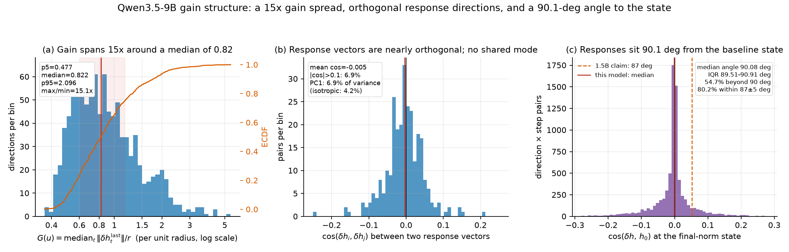
Setup. A1 run. Gain is computed for all 1000 directions at the last saved block state (block 30): $G(u)=\mathrm{median}_t\|\delta h_t^{\rm last}(u)\|/r$. The pairwise cosines and the angle use the 24 stored dh_last vectors (final-norm output, 300 steps x 4096) and the stored h0_last; each direction's representative vector is its response at the step where its norm is closest to that direction's median norm (same convention as the 14B gain figure).
Axes. (a) $x$: $G$ on a log scale; left $y$: directions per bin, right $y$: ECDF; the red line is the median and the band the IQR. (b) $x$: $\cos(\delta h_i,\delta h_j)$ between two response vectors; $y$: pairs per bin. (c) $x$: $\cos(\delta h,h_0)$ at the final-norm state; $y$: direction $\times$ step pairs; the dashed orange line is the 1.5B's 87°, the red line this model's median.
| quantity | value |
|---|---|
| gain p5 / p25 / p50 / p75 / p95 | 0.477 / 0.608 / 0.822 / 1.167 / 2.096 |
| gain min / max / max-min ratio | 0.361 / 5.449 / 15.1x |
| pairwise mean / median $\cos$ | $-0.0047$ / $-0.0037$ |
| pairs with $|\cos|>0.1$ | 6.9% |
| first PC share (isotropic baseline) | 6.9% (4.2%) |
| temporal cosine, lag 1 / 10 / 50 | 0.370 / 0.067 / 0.037 |
| angle median / mean | 90.08° / 90.25° |
| angle IQR / p1-p99 | 89.51-90.91° / 78.23-102.41° |
| fraction $>90°$ | 54.7% |
| fraction within $87^\circ\pm5^\circ$ | 80.2% |
| median $\|\delta h\|/\|h_0\|$ | $4.9\times10^{-4}$ |
| stored $\cos(h',h_0)$ min / max | 0.99975 / 1.0000000 |
cos field cannot be used for this. a1.npz stores $\cos(h',h_0)$, which is 1 to fp32 precision (minimum 0.99975) because $\|\delta h\|/\|h_0\|\approx5\times10^{-4}$. The angle requires the actual $h_0$ vector, which exists only for the final-norm state and only 24 directions; that is the measurement above. The same limitation blocked the 14B analysis (its a1.npz stored no baseline state vectors), so the cross-model angle comparison has only the 1.5B's literature value and this run.All rows use the same prompt, greedy decoding, FP32, and $r=0.1$ unless stated. The 1.5B and 14B values are from Parts 1-3 and the cross-scale/floor sections; the Qwen3.5-9B values are from this section.
| quantity | 1.5B | DS-14B | Qwen3.5-9B |
|---|---|---|---|
| blocks / width | 28 / 1536 | 48 / 5120 | 32 / 4096 |
| attention | full | full | 3 linear : 1 full |
| $K$ directions | 20 | 1000 | 1000 |
| margin min (step) | 2.02e-2 (123) | 9.73e-5 (21) | 7.27e-3 (267) |
| margin median | 4.78 | 3.10 | 2.46 |
| $r_*$ p50 / p90 | 1.56 / 4.12 | 0.116 / 2.59 | 0.707 / 1.96 |
| fp32 floor (last saved) | 1.0e-3 | 2.7e-3 | 6.1e-4 |
| clean radius window | [1e-3, 0.1] | [0.03, 0.3] | [0.01, 0.3] |
| gain $G$ p50 (range) | 1.33 (11.8x) | 0.583 (13.7x) | 0.822 (15.1x) |
| flip fraction at $r=0.1$ | 0/20 | 45.3% | 1.2% |
| free flip fraction 0.05 / 0.1 / 0.3 | — / 0 / — | 32.1% / 45.3% / 64.3% | 0% / 1.2% / 15.7% |
| response-vs-state angle | ~87° (claimed) | not recoverable | 90.08° |
Reading the table:
The scorecard is the free-run validation in §5. In one line: signed top-2 rule, 0/12/160 predicted vs 0/12/157 observed; 100% exact at $\rho=0.1$, 91.8% classification at $\rho=0.3$; sign-blind 2/20/305 is rejected. The two quantities that make the rule work are the sign of $\delta m_t$ (a margin can be widened, and then no finite radius flips it) and the first crossing in time (a step with a small instantaneous threshold can be crossed later than a step with a larger one). The layer profile adds a third, structural fact: the response is not concentrated in one attention type, so a single "full-attention layer" correction would not improve the prediction.
dh_last gives its post-final-norm response for 24 directions, but the RMSNorm makes it not comparable to the pre-norm profile. The "seven full-attention blocks" in the permutation test are therefore 7 of 8.calib.npz.window field is 0 and window experiments are undefined. The comparison with the 14B's true-window-100 run is therefore a comparison of architectures, not of window settings.The last-layer states of Qwen3.5-9B (FP32, greedy, no sliding window, 1000 generated tokens, $d=4096$) form a point cloud on which the validated correlation-dimension pipeline finds no scaling region in any of the 12 trajectories, at any of the three Theiler windows. Under the fixed rule that was applied to the 1.5B and the DS-14B, the usable range between the depletion floor $C=10/N$ and saturation $C=0.1$ is 0.065-0.082 decades (0.157 for one run with a late repeat), sampled by 2-3 of the 90 grid points (6 for that run); the rule requires at least 5 points over at least 0.40 decades. The local slope over that range runs 9.0 -> 18.8 (2.7 -> 9.8 on the repeat-contaminated run) and its maximum anywhere is 14.8-31.7, against the finite-$N$ ceiling $2\log_{10}N=6.0$. The edge-to-edge drift is 2.6-7.3 units in the 11 clean runs, above the flatness tolerance (0.34-0.94 at these slopes). There is therefore no $\hat D_2$ to quote. On a 900-point grid the chord over the admissible range is 6.64-15.33 (median 14.54); the fixed 90-point grid defines it for only 5 of 12 runs (7.11, 11.69, 13.89, 15.47, 15.62) because it lands 2-3 points inside the band. The old max-$R^2$ estimator returns 12.58-22.36 over windows 0.013-0.066 decades wide.
The point-cloud estimates disagree with each other more than in either previous model. TwoNN gives 6.05-8.09 (median 7.51), the Levina-Bickel MLE at $k=10$ gives 8.90-12.89 (median 12.00), the chord gives 6.64-15.33, and the T4-style estimator gives 12.58-22.36: within one trajectory the spread reaches a factor 3.1 (T4/TwoNN, smartphones 22.36/7.12). Neither TwoNN nor the MLE is converged in $N$: on great_emu_war TwoNN falls 6.76 -> 6.68 -> 6.05 as $N$ goes 500 -> 750 -> 1000, and its MLE falls 10.8 -> 10.1 -> 8.9 because a repeated tail enters at $t\approx800$; on robot_friendship the same numbers move 7.73 -> 7.84 -> 8.09 and 12.4 -> 12.7 -> 12.9. The correct statement is a range, not a dimension: the 9B last-layer cloud is locally 6-13 dimensional by the nearest-neighbour estimators and 12-22 by the global chord, depending on method, neighbourhood and $N$, with no estimator stable in $N$.
Almost no trajectory repeats. Eleven of 12 have a lag-dip prominence of 0.981-0.995 (a 1.5B loop is $<0.6$; the 1.5B's full loops were 0.04-0.22) and 0.0% of positions return within $0.1\,d_{typ}$ at the best lag. The exception is great_emu_war: prominence 0.849, a period-7 dip in the last ~200 states (positions 800-990) with 13.8% coverage, the only run whose nearest non-adjacent neighbour drops to 0.059 $d_{typ}$ (all others $\ge0.21$). That is a late, local, 7-token repeat — the fixed rule's partial cut is $<0.8$, so the pipeline calls it healthy, but the coverage and nearest-neighbour evidence make it one partial out of 12. The count is therefore 0 full + 1 partial / 12, against 9 full + 2 partial of 20 on the 1.5B (6 full + 2 partial of the 16 runs at the same 1000-token horizon) and 0 full + 0 partial of 13 on the DS-14B. The GPU-side summary.json agrees with this reading: median rel_nearest 0.68-1.12 with p05 0.11-0.76, and great_emu_war is the only run whose p05 falls to 0.113.
Two controls make the interpretation explicit. N-dependence: at $N=500/750/1000$ the valid window is still empty at every $N$; the admissible span moves 0.05 -> 0.16 decades, and the great_emu_war chord drops 11.95 -> 10.95 -> 6.64 only because the repeated tail enters at $N=1000$, not because of finite-$N$ bias. Time shuffle: permuting the distance-matrix rows and columns identically leaves the point cloud unchanged, and at $W=0$ the correlation integral and TwoNN are bit-identical; only the Theiler band moves, changing the chord by +3.8 on interstellar and +9.4 on great_emu_war at $W=500$, the latter precisely because the exclusion removes the lag-7/56 repeats.
The answer to the architecture question is therefore no on both counts. The hybrid Gated-DeltaNet/full-attention stack does not produce a valid scaling region where the dense 1.5B and 14B had none, and it does not lower the last-layer state-cloud dimension: the 9B's TwoNN (6.05-8.09, median 7.51) lies between the 1.5B's 5.44-6.23 and the 14B's median 8.19, its MLE $k=10$ (8.9-12.9) is below the 14B's 11.0-15.9 and just above the 1.5B's healthy 7.9-10.1, and its global estimates are the highest of the three — the chord median (14.5) is above the 14B's 8.1-10.3 band and the T4 (12.6-22.4) is above both — because its pairwise-distance distribution is the narrowest (CV 0.057-0.079 against 0.110-0.135 for the 14B). Nor does it make the model loop-prone: one late partial repeat in 12 runs is statistically indistinguishable from the 14B's zero and far below the 1.5B's 9/20.
| item | value |
|---|---|
| model | Qwen3.5-9B, 32 blocks, hidden size 4096 |
| architecture | hybrid: per period of four, three Gated DeltaNet (linear-attention) blocks then one full-attention block; full-attention blocks 3, 7, 11, ..., 31 |
| attention window | none (metadata window=0), so no clipping inside the 1000-token horizon |
| precision / decoding | FP32, greedy |
| states | last layer (h_last), one $[1000,4096]$ cloud per trajectory; h_last is the final-norm state (the lm_head input after block 31), not a raw block output: in the 14B files the raw block-47 state has norm ~985 while h_last has norm ~170-200, and the same slot is used here. The last block (31) is a full-attention block, so h_last is not a Gated-DeltaNet recurrent state |
| input | results_big/qwen35/d2/dist_<name>_h_last.npy, fp32 Euclidean $[1000,1000]$, plus summary.json |
| horizon | 1000 tokens for all 12 |
| prompts | the 12 lines of prompts_d2.txt, one trajectory each (no duplicate topic, unlike the 14B's extra interstellar run) |
| state norms | median 133.5-135.6, late/early norm ratio 0.973-1.003 (no drift or blow-up) |
The distance matrices are float32, symmetric to $3\times10^{-5}$, with diagonal entries of 0.11-0.13 and smallest off-diagonal distance 36.7-50.5 (2.24 for great_emu_war, the near-repeat). Every $\epsilon$ in the admissible range is $\ge0.61\,d_{typ}\approx100$, so the diagonal round-off cannot enter any count that matters here.
Only h_last was analysed. The collector also stored block outputs 8, 16, 24 and 31 in the trajectory files, but those were not pulled to the laptop and are not part of this section.
Let $d_{ij}=\lVert x_i-x_j\rVert$, $N=1000$ points, Theiler window $W$. The definitions are identical to the DS-14B section; the two additions are the fine-grid chord and the distance-distribution CV.
| quantity | expression | note |
|---|---|---|
| typical scale | $d_{typ}=\mathrm{median}_i\left(\frac{1}{N}\sum_j d_{ij}^2\right)^{1/2}$ | median over points of the rms distance to the cloud (512-point subsample, seed 0); 165.9-178.4 here |
| correlation integral | $C(\epsilon)=\dfrac{\#\{(i,j):\ \lvert i-j\rvert>W,\ d_{ij}<\epsilon\}}{\#\{(i,j):\ \lvert i-j\rvert>W\}}$ | denominator $N(N-1)-2\sum_{k\le W}(N-k)$; at $W=0$ exactly $\frac{2}{N(N-1)}\#\{i |
| grid | 90 log-spaced $\epsilon/d_{typ}\in[10^{-2},2.5]$ | one sort of the upper triangle, then searchsorted; $W$-band counts subtracted from the diagonals |
| local slope | $\mathrm{d}\log C/\mathrm{d}\log\epsilon$ | central differences, second order at the edges |
| TwoNN | $\mu_i=r_2^{(i)}/r_1^{(i)}$, $\hat d=1/\langle\ln\mu\rangle$ | Pareto MLE for $P(\mu>M)=M^{-d}$; the CDF-OLS variant gives 6.6-8.5 and the "$\log 2/\langle\log_2\mu\rangle$" variant returns $0.48d$ and is not used |
| Levina-Bickel MLE | $m_k(i)=\frac{1}{k-1}\sum_{j| $k=5,10,20$ |
|
| repetition screen | fraction of points with a nearest neighbour at $\lvert i-j\rvert\ge50$ below $10^{-3}d_{typ}$ | median and p05 of that relative distance are also reported |
| lag-distance loop screen | $p(k)=\overline{\lVert x_t-x_{t+k}\rVert}/d_{typ}$, prominence $=p(k)/\mathrm{median}\,p(k\pm1,2,3)$ | a drifting loop has a sharp dip; coverage is the fraction of positions with $d_{t,t+p}<0.1d_{typ}$ |
| admissible range | $\epsilon\in[\epsilon_{10/N},\epsilon_{0.1}]$, the interpolation points where $C=10/N$ and $C=0.1$ | at least $\sim5N$ pairs inside the ball at the left edge; below saturation at the right |
| chord $D_2$ | OLS slope of $\log C$ on $\log\epsilon$ over the admissible range | quoted on a 900-point grid; the 90-point pipeline grid lands 2-3 points inside the band and leaves the chord undefined for 7/12 |
| T4-style estimator | the reference fit_plateau: maximum $R^2$ over every sub-interval with $\ge6$ grid points, on percentiles 2-60 of a 1000-point subsample, Theiler 20 |
reproduces results/d2/ exactly on the 1.5B; not a plateau test |
| distance CV | $\mathrm{std}(d_{ij})/\mathrm{mean}(d_{ij})$ over all pairs | width of the pairwise-distance distribution; sets the largest achievable $\log C$ slope near the mode |
A window is valid only if all three hold simultaneously.
The width is reported whether or not it is valid. There is no post-hoc choice of sub-interval: the rule, the 90-point grid, the 0.40-decade and 6% thresholds, and the $10/N$ / $0.1$ edges are the ones in scripts_spark/d2_local.py, fixed on the 1.5B before these matrices were read. The Theiler windows are $W=0,50,500$; at $N=1000$, $W=500$ keeps only pairs with $\lvert i-j\rvert>500$. All 12 runs fail the rule at all three windows with a window width of exactly 0.00 decades.
$W=0$, $N=1000$ for every row. $\epsilon$ in units of $d_{typ}$; the span is $\log_{10}(\epsilon_{0.1}/\epsilon_{10/N})$; the chord is the fine-grid OLS; "points" counts 90-point grid points inside the band.
| trajectory | $\epsilon_{10/N}$ | $\epsilon_{0.1}$ | span (dec) | slope at edges | points | $D_2$ chord | T4-style (fit dec) | valid window |
|---|---|---|---|---|---|---|---|---|
childhood |
0.777 | 0.925 | 0.076 | 10.3 -> 16.9 | 2 | 13.08 | 20.13 (0.014) | none (0.00 dec) |
cybersecurity |
0.781 | 0.916 | 0.069 | 11.5 -> 16.6 | 2 | 14.59 | 18.77 (0.024) | none (0.00 dec) |
future_of_work |
0.786 | 0.920 | 0.069 | 11.6 -> 17.3 | 2 | 14.57 | 19.46 (0.033) | none (0.00 dec) |
great_emu_war |
0.609 | 0.873 | 0.157 | 2.7 -> 9.8 | 6 | 6.64 | 12.58 (0.020) | none (0.00 dec) |
healthy_habits |
0.800 | 0.933 | 0.066 | 11.5 -> 18.8 | 3 | 15.06 | 22.11 (0.013) | none (0.00 dec) |
interstellar |
0.754 | 0.912 | 0.082 | 9.0 -> 15.1 | 3 | 12.23 | 17.24 (0.019) | none (0.00 dec) |
personal_finance |
0.776 | 0.913 | 0.071 | 11.5 -> 16.1 | 2 | 14.08 | 18.32 (0.027) | none (0.00 dec) |
quantum_consciousness |
0.783 | 0.917 | 0.068 | 12.0 -> 16.5 | 2 | 14.71 | 18.30 (0.022) | none (0.00 dec) |
remote_work |
0.794 | 0.925 | 0.067 | 11.7 -> 18.1 | 2 | 15.12 | 20.49 (0.024) | none (0.00 dec) |
robot_friendship |
0.778 | 0.912 | 0.069 | 12.1 -> 16.0 | 2 | 14.52 | 17.52 (0.040) | none (0.00 dec) |
smartphones |
0.803 | 0.933 | 0.065 | 12.0 -> 18.7 | 3 | 15.33 | 22.36 (0.013) | none (0.00 dec) |
transformers |
0.760 | 0.897 | 0.072 | 11.9 -> 14.5 | 3 | 14.08 | 16.04 (0.066) | none (0.00 dec) |
| trajectory | TwoNN | MLE 5 / 10 / 20 | prominence (coverage) | nearest-twin median / p05 / frac $<10^{-3}$ | GPU rel_nearest (p05) |
norm median |
|---|---|---|---|---|---|---|
childhood |
7.61 | 11.7 / 11.7 / 13.0 | 0.992 (0%) | 0.735 / 0.453 / 0.000 | 1.056 (0.641) | 135.6 |
cybersecurity |
7.58 | 11.6 / 11.8 / 13.4 | 0.995 (0%) | 0.759 / 0.531 / 0.000 | 1.094 (0.754) | 135.4 |
future_of_work |
7.56 | 12.7 / 12.3 / 13.5 | 0.994 (0%) | 0.745 / 0.503 / 0.000 | 1.062 (0.727) | 135.4 |
great_emu_war |
6.05 | 9.3 / 8.9 / 9.7 | 0.849 (14%) | 0.533 / 0.082 / 0.000 | 0.682 (0.113) | 134.9 |
healthy_habits |
7.36 | 11.7 / 11.7 / 13.1 | 0.993 (0%) | 0.755 / 0.495 / 0.000 | 1.086 (0.697) | 135.5 |
interstellar |
6.97 | 11.2 / 11.5 / 12.9 | 0.981 (0%) | 0.671 / 0.382 / 0.000 | 0.932 (0.517) | 135.3 |
personal_finance |
7.65 | 11.8 / 11.9 / 13.5 | 0.990 (0%) | 0.753 / 0.461 / 0.000 | 1.074 (0.663) | 135.4 |
quantum_consciousness |
7.12 | 12.4 / 12.4 / 13.8 | 0.991 (0%) | 0.722 / 0.459 / 0.000 | 1.044 (0.619) | 135.6 |
remote_work |
7.84 | 12.7 / 12.7 / 14.0 | 0.993 (0%) | 0.755 / 0.526 / 0.000 | 1.080 (0.739) | 135.5 |
robot_friendship |
8.09 | 12.7 / 12.9 / 14.2 | 0.994 (0%) | 0.720 / 0.518 / 0.000 | 1.050 (0.762) | 135.5 |
smartphones |
7.12 | 12.0 / 12.0 / 13.7 | 0.991 (0%) | 0.772 / 0.491 / 0.000 | 1.120 (0.689) | 135.6 |
transformers |
7.45 | 12.1 / 12.3 / 13.8 | 0.991 (0%) | 0.704 / 0.492 / 0.000 | 0.995 (0.678) | 133.5 |
How to read the two tables together. All clouds put the $C=10/N$ edge at 0.61-0.80 and the $C=0.1$ edge at 0.87-0.93, i.e. the usable interval is a 17-21% change in $\epsilon$, sampled by two or three of 90 grid points. The average slope needed to carry $C$ from $10/N$ to 0.1 across that interval is $\log_{10}(N/100)/\text{span}=1/\text{span}=12.2$-$15.4$, and the observed chord (12.2-15.3 for the 11 clean runs) matches it: the number is set by the width of the distance distribution, not by a fractal dimension. In every run the slope at the two edges differs by 2.6-7.3 units, and the maximum slope anywhere is 14.8-31.7, both above the 0.34-0.94 flatness tolerance and far above the 6.0 finite-$N$ ceiling. The 0.40-decade rule cannot be met by construction.
The distance CV column explains the cross-model position: 0.057-0.079 for these clouds against 0.110-0.135 for the 14B. A narrower distance distribution means a steeper $\log C$ in the 1%-to-10% band, hence a higher chord and T4, even though the nearest-neighbour estimators are lower. This is the main new quantitative fact in this section, and it is why the 9B's global estimates exceed the 14B's while its local ones do not.
q35d2_overview.png — four clouds, four non-plateaus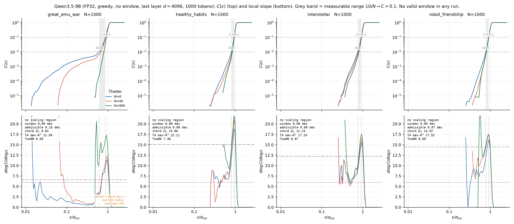
Setup. Four of the 12 trajectories, chosen to span the TwoNN range and the repeat outlier: great_emu_war (TwoNN 6.05, lowest, and the only partial repeat), healthy_habits (7.36, the second-highest T4 chord), interstellar (6.97; mid-range MLE), robot_friendship (8.09, highest TwoNN). For each, $C(\epsilon)$ is drawn for Theiler $W=0,50,500$ on the common $\epsilon/d_{typ}$ grid; the grey vertical band is the admissible range $[\epsilon_{10/N},\epsilon_{0.1}]$; dotted horizontals in the top row are $10/N$ and $0.1$. The bottom row is the local slope, with the finite-$N$ ceiling $2\log_{10}N=6.0$ (violet dotted) and the fine-grid chord over the admissible range (grey dash-dot). No valid window is shaded because there is none.
Axes. Top row: $\epsilon/d_{typ}$ log, $10^{-2}$ to $2.5$; $C(\epsilon)$ log, $10^{-5}$ to $1$. Bottom row: same $x$; $d\log C/d\log\epsilon$ linear, 0 to 22 (the first-nonzero-$C$ spike of great_emu_war reaches 31.7 above the axis; it is a two-pair fluctuation). Each panel is one trajectory, $N=1000$.
Numbers. $W=0$, in the order of the panels:
| quantity | great_emu_war |
healthy_habits |
interstellar |
robot_friendship |
|---|---|---|---|---|
| admissible span (dec) | 0.157 | 0.066 | 0.082 | 0.069 |
| $\epsilon$ at $C=10/N$ / $C=0.1$ | 0.609 / 0.873 | 0.800 / 0.933 | 0.754 / 0.912 | 0.778 / 0.912 |
| slope at those edges | 2.7 -> 9.8 | 11.5 -> 18.8 | 9.0 -> 15.1 | 12.1 -> 16.0 |
| chord $D_2$ (fine grid) | 6.64 | 15.06 | 12.23 | 14.52 |
| T4 max-$R^2$ | 12.58 | 22.11 | 17.24 | 17.52 |
| TwoNN | 6.05 | 7.36 | 6.97 | 8.09 |
| peak local slope (any $\epsilon$) | 31.7 | 18.8 | 16.8 | 16.8 |
| distance CV | 0.110 | 0.058 | 0.071 | 0.068 |
The three clean panels are nearly identical: $C(\epsilon)$ rises with a slope of 5-6 in a shallow range below 0.5, steepens to 11-18 through the 1%-to-10% band, and saturates at $C=1$ with a slope of zero. The $W=50$ and $W=500$ curves peel off only at the smallest $\epsilon$ (where excluding neighbouring states matters) and coincide through and above the admissible band. No panel has a horizontal segment: the slope is a monotone rise cut off by saturation.
great_emu_war is different in one specific way. Its $C(\epsilon)$ curve has an extra shelf between $10^{-4}$ and $10^{-2}$ — the correlation integral grows only as $\epsilon^{0.5-2.2}$ from $\epsilon=0.05$ to 0.5 — because the last 200 states contain near-recurrences every 7 tokens. That is what pulls its chord to 6.64 and its TwoNN to 6.05 while its T4 (12.58) remains in the normal range. The panel marks the period-7 dip; the effect is quantified in section 3.3 and in the shuffle control.
What it shows. The absence of a plateau is not idiosyncratic to one prompt: the same geometry (a distance distribution whose 1% and 10% quantiles are 17-21% apart in $\epsilon$) appears in all four panels. The four panels also show why the "D2" numbers move with the Theiler window: the only visible changes from $W=0$ to $W=500$ are below the depletion floor, except in great_emu_war, where the exclusion removes the repeated tail and lifts the chord by 9.4.
What it does not show. The 2-3-point sampling of the admissible band means the plotted slope inside the grey band is essentially an interpolation between grid points, not evidence of a fractal at finer resolution. The panels are at $N=1000$ only. The similarity of the four prompts is not a test of prompt-independence; all 12 are long expository requests from one prompt list. And great_emu_war's shelf is a repetition effect, not a second scaling regime: on a 900-point grid the shelf is still only 0.15 decades wide and its slope drifts by 7 units across it.
q35d2_summary.png — estimates, loop screen, and N dependence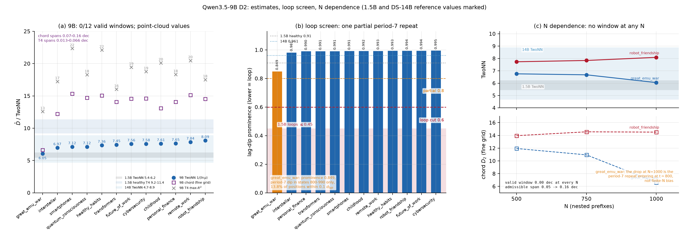
Setup. All 12 trajectories, sorted by TwoNN. Filled blue circles are TwoNN; open violet squares are the fine-grid chord over the admissible range (the number a reader gets who does not demand a plateau); grey crosses are the T4 max-$R^2$ estimate. No filled symbol of the "valid window $D_2$" kind appears because 0/12 passed. Horizontal bands are reference values: 1.5B TwoNN 5.44-6.23 (grey), 1.5B healthy T4 9.20-11.35 (blue), and 14B TwoNN 4.66-8.90 (light blue). The 14B chord band (8.10-10.27) is omitted because it overlaps the 1.5B T4 band; it is in the text.
Axes. $x$: the 12 trajectory names, sorted by TwoNN; $y$: $\hat D$ / TwoNN, 0-25. Numbers beside the circles are TwoNN; numbers beside the crosses are T4. The chord is not labelled point by point (it is between the two).
Numbers. TwoNN 6.05-8.09 (median 7.51); chord 6.64-15.33 (median 14.54); T4 12.58-22.36 (median 18.55) over 0.013-0.066 decades; MLE $k=10$ 8.90-12.89 (median 12.00). All 12 TwoNN values sit inside the 14B band; 11 of 12 are above the 1.5B band, the exception being great_emu_war (6.05), which is the repeat-contaminated run. All 12 chords except great_emu_war (6.64) sit above the 14B chord band, and all 12 T4 values sit above the 1.5B healthy T4 band. So by the global estimators the 9B is the highest-dimensional of the three clouds, while by TwoNN/MLE it is between them.
What it shows. Three things. (1) "The dimension of the 9B state cloud" is not a single number even before the scaling question: within one run the estimators span a factor up to 3.1, and the T4 value is always the largest because max-$R^2$ selects the steepest 0.01-0.07-decade sub-interval. (2) The 9B is not a compressed, recurrent-state-like object: its nearest-neighbour dimension is above the 1.5B's and its global distance-concentration slope is above both. (3) Any 9B number quoted as "D2" would be a chord over 0.065-0.082 decades (0.157 for the repeat run) — narrower than the 1.5B's already-narrow 0.04-0.10.
What it does not show. The bands are reference values, not confidence intervals, and the three models use different $N$, $d$ and prompt sets. TwoNN is not corrected for the finite-$N$ bias visible in panel (c). The chord is a 900-point evaluation of an estimator that the 90-point pipeline leaves undefined for 7/12; the five pipeline chords are 7.11, 11.69, 13.89, 15.47, 15.62, consistent with the fine-grid values to 0.3. And the T4 values are computed on the 1000-point matrix, not on the 2000-state rebuild that reproduced the published 1.5B numbers exactly.
Setup. For each trajectory, the minimum of $p(k)/\mathrm{median}\,p(k\pm1,2,3)$ over lags $k=1\ldots599$, where $p(k)$ is the mean distance at lag $k$ in units of $d_{typ}$. The red band reaches 0.45, the largest prominence of any 1.5B loop; dashed lines are the pipeline's loop cut 0.6 and partial cut 0.8; the grey dotted line is the 1.5B healthy floor 0.91 and the blue dotted line the 14B floor 0.961. Bars are the 12 values; the orange bar is great_emu_war.
Axes. $x$: trajectories sorted by prominence; $y$: prominence, 0-1.13. A loop is a low bar. Coverage (fraction of positions returning within $0.1d_{typ}$ at the best lag) is 0% for every bar except great_emu_war (13.8%).
Numbers. Prominence 0.849-0.995; the second-lowest is 0.981, and 11 of 12 are $\ge0.981$. great_emu_war has its minimum at lag 7, prominence 0.849, and 13.8% coverage. Its nearest non-adjacent neighbour is 0.059 $d_{typ}$ at lags 56 and 70, and the pairs with $d(x_t,x_{t+7})<0.1d_{typ}$ cover positions 800-990 (72% of that tail). The other 11 have nearest-twin medians 0.67-0.77 and p05 0.38-0.53, with 0.000 fraction below $10^{-3}$ in all 12. The GPU screen gives the same ordering: great_emu_war has rel_nearest 0.682 and p05 0.113, all others 0.932-1.120 and p05 0.382-0.762.
What it shows. The absence of loops in 11 of 12 is not a threshold artefact: those values sit at the top of the metric's range, 0.38 above the loop cut and 0.02-0.03 above even the 14B floor. The lag-distance curve has no dip at any lag: even lag 1 has mean distance 0.726-0.767 $d_{typ}$, so there is no short-period alternation either. The exception is a local repeat: a 7-token cycle in the final fifth of one run, which returns the state to 5.9% of the cloud scale rather than to the 1.5B loops' 1.6%. That is qualitatively weaker than the 1.5B loops (coverage 70-95%), but it is a real near-recurrence and the nearest-neighbour screen sees it.
What it does not show. A repetition with period $>600$ tokens cannot produce a prominence dip in a 1000-token run; the screen would miss a slow loop that appears only once. The screen cannot rule out repetition in the text that does not return the state to within $0.1d_{typ}$; it measures state recurrence, not token n-grams. And the fixed rule's cut at 0.8 does not flag great_emu_war (0.849): that is why this section reports both the rule's count (0 full + 0 partial) and the evidence-based count (0 full + 1 partial), and does not move the threshold after seeing the data.
Setup. Nested prefixes of two trajectories chosen at the TwoNN extremes: great_emu_war (lowest) and robot_friendship (highest). At each $N\in\{500,750,1000\}$ the same pipeline is rerun with $W=0$: the top panel is TwoNN, the bottom panel the fine-grid chord over the admissible range. The valid window is 0.00 decades at every point.
Axes. $x$: $N=500,750,1000$ (nested prefixes). Top $y$: TwoNN, 4.0-10.2, with the 1.5B band 5.44-6.23 and 14B band 4.66-8.90 shaded. Bottom $y$: chord $D_2$, 5.0-17.0.
Numbers.
| $N$ | great_emu_war TwoNN |
great_emu_war chord |
great_emu_war MLE 10 |
robot_friendship TwoNN |
robot_friendship chord |
robot_friendship MLE 10 |
|---|---|---|---|---|---|---|
| 500 | 6.76 | 11.95 | 10.8 | 7.73 | 13.96 | 12.4 |
| 750 | 6.68 | 10.95 | 10.1 | 7.84 | 14.56 | 12.7 |
| 1000 | 6.05 | 6.64 | 8.9 | 8.09 | 14.52 | 12.9 |
The admissible span moves 0.057 -> 0.080 -> 0.157 (great_emu_war) and 0.049 -> 0.059 -> 0.068 (robot_friendship).
What it shows. The "no window" verdict is not an $N=1000$ accident: it holds at 500 and 750 too. The two trajectories behave differently for a reason that is now understood: robot_friendship's estimators are almost flat in $N$ (TwoNN +0.36, chord +0.56, MLE +0.5 over a doubling), the expected mild bias of a nearest-neighbour estimator, while great_emu_war's collapse (chord -5.3, TwoNN -0.7, MLE -1.9) coincides exactly with the entry of the repeated tail at $t\approx800$ when the prefix length reaches 1000. The outlier is therefore a repetition effect, not evidence of a finite-$N$ correction with a different sign.
What it does not show. Nested prefixes are not independent samples: the $N=500$ cloud is a subset of the $N=750$ and $N=1000$ clouds; the panels show $W=0$ only, and $W=500$ would be undefined at $N=500$. And the exercise cannot simulate the $N$ that would settle the scaling question: extrapolating the measured chord below the depletion floor to where the admissible range would be 0.40 decades wide requires $N\sim4.6\times10^7$-$1.5\times10^8$ for the 11 clean runs (a factor $4.6\times10^4$-$1.5\times10^5$ more tokens than these runs), and $5.5\times10^4$ for great_emu_war only because its loop makes the local slope artificially shallow. The extrapolation assumes the chord slope holds for another 0.33 decades of $\epsilon$; it is an order-of-magnitude statement, not a measurement.
q35d2_time_shuffle.png — the estimator at $W=0$ does not see time at all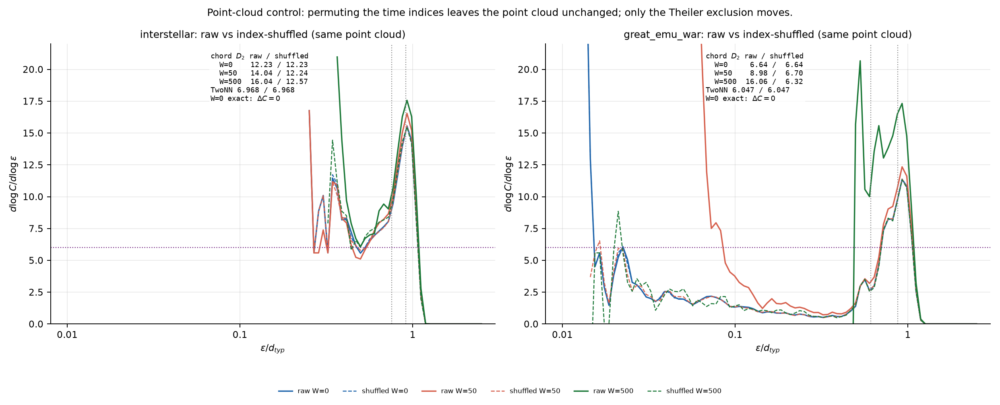
Setup. Two trajectories, interstellar (a clean mid-range run) and great_emu_war (the repeat outlier). For each, the raw distance matrix $D$ is compared with $D'=PDP^{\top}$, where $P$ is a random permutation matrix (seed 20261121) — equivalently, the same point cloud with its time labels permuted. This changes no distance: the multiset $\{d_{ij}\}$ is identical. $C(\epsilon)$ is evaluated on the same $\epsilon$ grid for both, so at $W=0$ the comparison is exact algebra, not a numerical check. The solid lines are raw, the dashed lines the shuffled matrix; blue/red/green are $W=0/50/500$. The grey vertical lines are the admissible edges of the raw run; the violet dotted line is $2\log_{10}N=6$. Chords in the text block are fine-grid values.
Axes. $x$: $\epsilon/d_{typ}$ log, 0.008-3; $y$: local slope, 0-22. The text block gives the chord $D_2$ and TwoNN for raw and shuffled.
Numbers.
interstellar raw / shuffled |
great_emu_war raw / shuffled |
|
|---|---|---|
| $W=0$: $\max\lvert\Delta C\rvert$ | 0 | 0 |
| $W=0$: chord $D_2$ | 12.23 / 12.23 | 6.64 / 6.64 |
| $W=0$: TwoNN | 6.968 / 6.968 | 6.047 / 6.047 |
| $W=50$: chord $D_2$ | 14.04 / 12.24 | 8.98 / 6.70 |
| $W=500$: chord $D_2$ | 16.04 / 12.57 | 16.06 / 6.32 |
| $W=50$: $\max\lvert\Delta C\rvert$ | 0.018 | 0.023 |
| $W=500$: $\max\lvert\Delta C\rvert$ | 0.063 | 0.095 |
| valid window, any $W$ | none / none | none / none |
What it shows. At $W=0$ the correlation integral and TwoNN are exactly invariant under the permutation: the estimator is a point-cloud statistic by construction. This is the same control that made the old 1.5B "5.75 raw vs 5.69 shuffled" comparison a tautology. The only genuine temporal information enters through $W>0$, and the two trajectories show two different mechanisms. On interstellar, excluding near-in-time pairs raises the chord by 1.8 ($W=50$) and 3.8 ($W=500$): consecutive states are 0.756 $d_{typ}$ apart while the typical separation is $1\,d_{typ}$, so the trajectory is mildly smooth in time, not low-dimensional. On great_emu_war, the same exclusion raises the chord by 2.3 and 9.4 because it removes exactly the lag-7/56 repetitions that created the shelf; with the repeats excluded, its chord (16.06) is in line with the clean runs (12.2-15.3), which is independent confirmation that its low chord is a repetition artefact.
What it does not show. The shuffle preserves the point cloud exactly, so it cannot test whether a different cloud with the same time series would have a different dimension; it tests only the estimator's sensitivity to the ordering of a fixed cloud. It uses one permutation (the $W=0$ result is exact for every permutation, the $W>0$ result is one draw). It does not test phase-randomised surrogates, which destroy the point cloud as well as the order. And it says nothing about whether the last-layer state should be expected to carry dynamics at all.
| quantity | 1.5B (20 local runs) | DS-14B (13 runs) | Qwen3.5-9B (12 runs, this section) |
|---|---|---|---|
| architecture | dense transformer | dense transformer (distilled Qwen-14B) | hybrid: 3 Gated DeltaNet + 1 full attention per period of 4 |
| hidden size | 1536 | 5120 | 4096 |
| horizons | three 4095-token runs, sixteen 1000-token runs, one 1026-token run | twelve 1000-token runs, one 1500-token run truncated to 1000 | twelve 1000-token runs |
| valid scaling window | none on the two healthy runs; one spurious 0.54-dec window ($\hat D_2=1.09$) on a period-53 loop | none (0/13) | none (0/12), at $W=0,50,500$ |
| admissible span, healthy | 0.08 decades | 0.08-0.11 decades | 0.065-0.082 decades (0.157 repeat run) |
| T4-style fit width | 0.039-0.102 decades | 0.02-0.07 decades | 0.013-0.066 decades |
| T4-style $D_2$ | 9.20-11.35 healthy, 2.98-3.89 loops | 8.69-11.75 | 12.58-22.36 |
| TwoNN | 5.44-6.23 (all four validated runs) | 4.66-8.90, median 8.19 | 6.05-8.09, median 7.51 |
| MLE $k=10$ | 7.9-10.1 healthy, 3.1 loops | 10.97-15.87 | 8.90-12.89 |
| chord over admissible | — | 8.10-10.27 (90-pt grid) | 6.64-15.33 (900-pt grid; 7.11-15.62 on the 90-pt grid) |
| pairwise-distance CV | — | 0.110-0.135 | 0.057-0.079 (0.110 repeat run) |
| repetition loops | 9 full + 2 partial / 20; 6 full + 2 partial / 16 at 1000 tokens | 0 full + 0 partial / 13 | 0 full + 1 partial / 12 |
| loop prominence | 0.04-0.22 full (validated 0.058/0.098), 0.21/0.45 partial, 0.91-0.99 healthy | 0.961-0.992 | 0.981-0.995 clean; 0.849 partial |
| loop coverage | 70-95% | 0% | 0%; 13.8% in the partial |
| nearest-twin median ($d_{typ}$) | 0.016-0.017 loops, 0.42-0.54 healthy | 0.527-0.670 | 0.671-0.772 clean; 0.533 partial |
| old headline | 5.75 raw / 5.69 shuffled (max-$R^2$ chords) | no comparable headline; chords 8.10-10.27 | no comparable headline; chords 6.64-15.33, T4 12.58-22.36 |
No. Not one of the 12 passes the rule at any Theiler window, and the reason is the same one that made both previous healthy runs fail: the interval between the depletion floor and saturation is only 0.065-0.082 decades, sampled by 2-3 grid points, while the rule needs 0.40 decades and 5 points. The 9B is the most decisively windowless of the three in the sense that its distance distribution is the narrowest (CV 0.057-0.079): the admissible band is a 17-21% change in $\epsilon$, the chord must climb 12-15 units of slope to cross it, and the T4 estimator's best sub-intervals are 0.013-0.066 decades wide, narrower than the 14B's 0.02-0.07 and the 1.5B's 0.039-0.102.
This is not a claim that the 9B cloud is "more random" or dynamically higher-dimensional. It is a statement about resolution: with 1000 points and a pairwise-distance distribution this narrow, no estimator can extract a 0.4-decade slope. The hybrid architecture does not change that arithmetic. If anything it moves the required $N$ further away: the chord extrapolation puts a 0.40-decade window at $N\sim4.6\times10^7$-$1.5\times10^8$, versus $1.5\times10^4$-$1.7\times10^5$ for the 14B, because the local slope is steeper.
Far less than the 1.5B; statistically indistinguishable from the 14B. Counts first.
The two near-recurrence definitions agree once their scales are matched.
The GPU screen (summary.json). It takes the last three quarters of the states ($h[250{:}]$), computes pairwise distances, excludes $\lvert i-j\rvert<50$, and reports the median and p05 of the nearest remaining distance divided by $\mathrm{median}_i\lVert h_i-\bar h\rVert$ (a centroid scale, not the pairwise $d_{typ}$). The values are median 0.682-1.120 and p05 0.113-0.762. Unlike the DS-14B case I cannot reproduce these exact numbers from the distance matrices alone (the centroid scale and the $h[250{:}]$ truncation need the states, which were not pulled), so the laptop and GPU numbers are quoted as two conventions, not as a reproduction.
The laptop screen. It uses all $N$ points, the same $\lvert i-j\rvert\ge50$ exclusion, and $d_{typ}$ as the scale; it reports the fraction below $10^{-3}d_{typ}$, plus median and p05. The values are median 0.533-0.772, p05 0.082-0.531, fraction below $10^{-3}$ 0.000 in every run. Within either convention, 11 runs are far from a loop: the 1.5B loop runs' nearest-twin median was 0.016-0.017 $d_{typ}$, a factor 39-48 below the 9B clean medians. The one exception is great_emu_war: median 0.533, p05 0.082 — still 4.8-5.1x above the 1.5B loop median at p05, but 4.6-6.5x below the other clean runs at p05, and the only run where the GPU screen's p05 (0.113) approaches the 1.5B loop scale.
Reconciling the screens is also a warning about the $10^{-3}$ threshold. The absolute-threshold screen returns 0.000 for the 1.5B loops too, because those loops drift: their repeats sit at 1.6% of the cloud scale, not at $10^{-3}$. So the "fraction below $10^{-3}$" is not the loop detector, and the fact that it is zero here does not by itself prove no loops. The detector that found the 1.5B loops is the lag-distance prominence; the GPU rel_nearest median is a cruder version of the same signal. On the 9B, both agree: eleven runs have no near-recurrence at any lag, and one has a late 7-token one.
The 9B is not a lower-dimensional object than either dense model, and it is not more regular. TwoNN's median (7.51) is above the 1.5B's 5.44-6.23 and below the 14B's 8.19; the MLE at $k=10$ (8.9-12.9) is above the 1.5B healthy range (7.9-10.1) and below the 14B's (11.0-15.9); the chord (median 14.5) and T4 (12.6-22.4) are above both. The rank order of "dimension" therefore depends on the estimator, which is the same conclusion as for the 14B, only more strongly: the 9B last-layer cloud is locally 6-13 dimensional by nearest-neighbour estimators and 12-22 by global chords, with no estimator converged in $N$, and no valid scaling region at $N=1000$.
The architectural reading is narrow but clear. A hybrid stack with linear-attention blocks carrying a fixed-size recurrent state might have been expected to compress the trajectory into a low-dimensional manifold or to make it periodic. Neither happens at the last layer. The last block of this model is a full-attention block and h_last is its post-final-norm output, so it is not a Gated-DeltaNet state; the recurrent states themselves were not saved, and this section cannot say whether they are low-dimensional. What it can say is that whatever compression the linear-attention blocks perform is not visible in the last-layer cloud: its dimensionality is in the dense-model range or above, and its loop propensity is in the dense-14B range. One caveat on the CV comparison: because h_last is post-RMSNorm, part of the narrow distance distribution is a property of the normalization and the learned gain rather than of the trajectory — but the 14B is measured at the same slot and still has almost twice the CV, so the difference between the clouds is real at this layer.
h_last (and the last block is full attention), so nothing here tests whether that state is low-dimensional or periodic. The collector saved block outputs 8, 16, 24 and 31 but they were not pulled to the laptop.great_emu_war repeat is detected through coverage and nearest neighbours, not through the prominence cut; a text-level repetition that does not return the state to $0.1d_{typ}$ would not be flagged.Same correction note as Part 1: the 14B numbers here are full-attention runs (window inactive). Everything except the flush-ratio row is a same-prompt, same-radius comparison and stands as stated; the flush row is explained by the missing window, and the margin comparison is partially confounded by the window regime (on the 1.5B the window is known to change the margin spectrum). The true-window 14B rerun will close both gaps.
Two models of the same family — 28 layers with $d=1536$, and 48 layers with $d=5120$, roughly eight times the parameters — generate 300 greedy tokens from the identical 65-token prompt with an attention window of 100, and then the same kind of prompt-embedding perturbation (a unit direction times $r=0.1$) is applied and the continuation is teacher-forced. The larger model's decisions are far more fragile: its median top-1/top-2 logit gap is 3.10 nats against 4.78 for the small one, and its thinnest gap (9.7e-5 nats at step 21) is 207 times thinner than the small model's thinnest (2.0e-2 nats at step 123). As a consequence the radius at which a random direction first flips a token — a "flux-tube radius", the largest perturbation size along that direction that leaves the greedy continuation intact — is 13 times smaller in the 14B (median 0.116 vs 1.55 in absolute embedding units, 17 times smaller after dividing by the token-embedding scale), and 464 of 1000 directions flip something at the run radius against 0 of 20. The response itself is not stronger in the bigger model: per unit radius its last-state displacement is 2.3 times smaller in absolute units and 4.6 times smaller relative to the state it lives in, so the fragility is a property of how close the decisions are, not of how hard the perturbation pushes. Two shape features do differ: only the 1.5B shows a window-flush surge at $t=35$ (its last state jumps 1.70x across it, the 14B's 1.11x), and the 1.5B's response decays to 19% of its early level by $t=200$ while the 14B's is still at 68% — though that second difference is partly textual, because the small model falls into a repeating four-token loop at $t=143$ and the large one does not.
| item | 1.5B | 14B |
|---|---|---|
| model | DeepSeek-R1-Distill-Qwen-1.5B |
DeepSeek-R1-Distill-Qwen-14B |
| blocks / hidden size | 28 / 1536 | 48 / 5120 |
| precision | FP32 | FP32 |
| prompt | interstellar_travel, "Provide a comprehensive technical review of current and proposed propulsion systems for interstellar travel. …" |
same, token-identical (prompt_ids compare equal) |
| prompt length | $P=65$ | $P=65$ |
| attention window | $W=100$ (active, transformers 4.50 on x11) | full attention (window setting inactive; see the correction note) |
| continuation | $T=300$ greedy tokens, model's own | $T=300$ greedy tokens, model's own |
| decoding | greedy, no sampling, no EOS stop | same |
| perturbation | prompt embeddings only, unit direction $u$ times $r$, 20 non-zero coordinates | same construction |
| directions | $K=20$, one simplex block of 20 | $K=1000$, 50 independent blocks of 20 |
| radius used | $r=0.1$ (index 4 of radii=[1e-3 … 2]) |
$r=0.1$ (the only radius) |
| teacher forcing | all $K$ perturbed passes reuse baseline prompt_ids+gen_ids |
same |
| saved states | layer indices [0,1,2,3,7,14,21,27] (state 0 = embedding, 27 = input to final norm) |
[0,6,12,18,24,30,36,42,47] (47 = input to final norm) |
dh_last vectors |
3 directions (0–2), 1536-d, last state | 24 directions (0–23), 5120-d, last state |
| file | chaos_llm_2026/results/local_data/w100_layers/a1.npz (read-only) |
results_big/ds14/a1_inter_full/a1.npz + meta.json |
Two things the table makes explicit. (i) The prompt is identical but the continuation is not: the two models generate different tokens, so "$t=21$" is the 22nd token of a different text in each run. Comparable across models are the protocol, the distribution of margins over steps, and the flush step $t^*=W-P=35$ (which follows from the mask, not from the tokens). (ii) The direction sets are not equally rich: the 1.5B samples one 20-dimensional input subspace, the 14B samples fifty, and cross-block directions in the 14B are exactly orthogonal while within-block pairs have inner product $-1/19$. An ECDF over 20 directions is a 20-step staircase; an ECDF over 1000 is smooth. That is a sampling-precision difference, not a bias, but it is why the 1.5B curves look coarse.
Note on a quoted number. The analysis brief quotes a 14B median margin of 1.68 nats. The margins array in this npz has median 3.096 (mean 4.996, p10 0.435, min $9.727\times10^{-5}$). I could not reproduce 1.68 from the array (median of the 100 smallest margins is 0.686, of the 20 smallest 0.116, of steps $t<100$ is 4.558). Everything below uses 3.096, which is also the value used in section_a1_deep.md. The quoted minima (9.7e-5 at $t=21$, and 2.0e-2 at $t=123$ for the 1.5B) reproduce exactly.
Notation: $u$ indexes a direction, $t\in\{0,\dots,299\}$ a generated step, $\ell^{(1)}_t,\ell^{(2)}_t$ the top two logits of the unperturbed run, $h_t^{\ell}$ the unperturbed state at saved index $\ell$, $\delta h_t^{\ell}$ the same state under the perturbation.
| symbol | explicit expression | meaning | why this quantity |
|---|---|---|---|
| $m_t$ | $\ell^{(1)}_t-\ell^{(2)}_t$ | top-1 minus top-2 logit gap of the unperturbed continuation (nats) | the only scalar that says how close the baseline decision is; a flip needs this gap closed |
| $\delta m_t(u)$ | $m_t(u)-m_t$ at the perturbed pass, stored dm (nats) |
change of that gap under direction $u$ at radius $r$ | response of the decision variable, measured without letting the text diverge |
| $r^-_c(t,u)$ | $m_t\,r/\max(-\delta m_t(u),0)$, $+\infty$ if $\delta m_t\ge0$ | radius at which step $t$ would flip under direction $u$ | solving $-\delta m_t\ge m_t$ for the radius, and only $\delta m_t<0$ can close the gap |
| $r_*(u)$ | $\min_t r^-_c(t,u)$ | flux-tube radius: largest $r$ along $u$ that keeps every baseline argmax | one number per direction, comparable across models and radii (linearity) |
| $t_*(u)$ | $\arg\min_t r^-_c(t,u)$ | controlling step | says which near-tie is the weak point |
| $s_{\rm emb}$ | $\mathrm{median}_t\lVert h_t^{0}\rVert$ | median token-embedding norm (layer-0 state norm) | converts $r$ into "fraction of a token vector"; the perturbation is added at this layer |
| $s_{\rm last}$ | $\mathrm{median}_t\lVert h_t^{\ell_{\max}}\rVert$ | median norm of the last saved state | what the network actually carries at the read-out depth |
| $G(u)$ | $\mathrm{median}_t\lVert\delta h_t^{\ell_{\max}}\rVert/r$ | absolute per-direction gain (state units per unit radius) | robust scalar response strength |
| $G_{\rm rel}(u)$ | $\mathrm{median}_t\lVert\delta h_t^{\ell_{\max}}\rVert/\lVert h_t^{\ell_{\max}}\rVert$ | relative gain (dimensionless) | the only gain comparable across models with different stream norms |
| $\rho(u)$ | $G(u)/s_{\rm emb}$ | gain per unit radius in embedding-scale units | second normalization, used as a robustness check |
Both $r_*$ and $G$ are computed from the signed threshold ($\delta m<0$ only). The npz's own r_c array was built with $|\delta m|$; using it would call 810/1000 directions flips in the 14B instead of 464. The recomputation is three lines and is the difference between a physically meaningful threshold and a symmetric one.
This is the part where a cross-scale comparison can quietly go wrong, so it is worth being explicit.
Concretely: $r_*/s_{\rm emb}$ is the normalized input comparison (used in Fig. xscale_rstar), $G_{\rm rel}$ is the normalized output comparison (used in Fig. xscale_gain). Cross-normalizing (radius by the last-layer norm, gain by the embedding norm) is possible but answers a different and less interpretable question; $\rho=G/s_{\rm emb}$ is included in the JSON as the check that this choice does not drive the result (median $\rho$: 1.105 vs 0.385, i.e. 2.9x, between the 2.3x of raw $G$ and the 4.6x of $G_{\rm rel}$).
| quantity | 1.5B | 14B | ratio (1.5B / 14B) |
|---|---|---|---|
| $K$ (directions), radius | 20, $r=0.1$ | 1000, $r=0.1$ | — |
| median margin $m_t$ | 4.778 nats | 3.096 nats | 1.54 |
| smallest margin | $2.016\times10^{-2}$ (t=123) | $9.727\times10^{-5}$ (t=21) | 207 |
| steps with $m_t<0.1$ nats | 6 / 300 | 8 / 300 | — |
| controlling step (mode) | $t=116$ (6/20) | $t=21$ (503/1000) | — |
| directions controlled by the top-3 steps | 75% | 88.5% | — |
| $r_*$ median, raw (embedding units) | 1.555 | 0.1164 | 13.4 |
| $r_*$ p10 / p90, raw | 0.486 / 4.12 | 0.0171 / 2.59 | — |
| $s_{\rm emb}$ | 1.206 | 1.516 | 0.80 |
| $r_*$ median, $/s_{\rm emb}$ | 1.289 | 0.0768 | 16.8 |
| $r_*$ p10 / p90, $/s_{\rm emb}$ | 0.403 / 3.42 | 0.0113 / 1.71 | — |
| flips at $r=0.1$ | 0 / 20 | 464 / 1000 | — |
| flips at $r=0.3$ / $r=1$ | 1 / 4 | 671 / 834 | — |
| smallest $r_*$ | 0.133 (dir 10) | $2.44\times10^{-3}$ (dir 63) | 54 |
| $G$ median, raw | 1.333 | 0.583 | 2.29 |
| $G$ p10 / p90 | 0.922 / 2.24 | 0.409 / 1.30 | — |
| $s_{\rm last}$ | 545.3 | 1067.3 | 0.51 |
| $G_{\rm rel}$ median | $2.535\times10^{-4}$ | $5.567\times10^{-5}$ | 4.55 |
| $\rho=G/s_{\rm emb}$ median | 1.105 | 0.385 | 2.87 |
| fp32 response floor, last state | $1.0\times10^{-3}$ | $2.7\times10^{-3}$ | — |
| gain floor $\text{floor}/r$ | 0.010 | 0.027 | — |
| measured $G$ / gain floor | 133x | 22x | — |
| clean $r$ window | $[10^{-3},0.1]$ | $[0.03,0.3]$ | — |
| flush ratio, last state ($\overline{\lVert\delta h\rVert/r}_{36..40}$ over $\overline{\lVert\delta h\rVert/r}_{30..34}$) | 1.70 | 1.11 | — |
| late/early response ratio ($t\in[200,300)$ vs $[0,50)$) | 0.186 | 0.680 | 0.27 |
The fp32 floor is a property of the response measurement, not of this analysis: at the last state a perturbed forward pass at the cleanest radius reproduces the baseline only to $\approx10^{-3}$ (1.5B) / $2.7\times10^{-3}$ (14B) in $\lVert\delta h\rVert$. Both medians sit 22–133x above that floor, so no number here is round-off. The floor does, however, set the smallest meaningful gain, which is why the noisy end of the $r$ ladders is excluded from the table above (clean windows quoted).
xscale_margins.png — the 14B's weakest tie is 207x thinner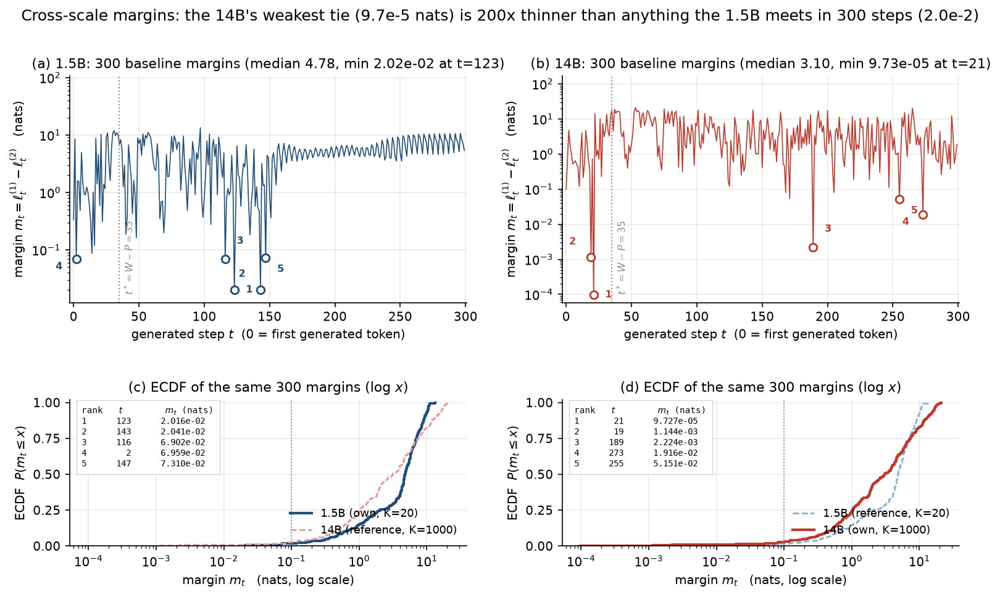
Setup. Both runs of §1.1, unperturbed pass only ($r=0$): 300 top-1/top-2 gaps per model. Top row: $m_t$ against $t$. Bottom row: the ECDF of the same 300 values, log $x$. In each bottom panel the own model is bold and the other model is the pale dashed reference. The dotted vertical line at $t=35$ is the flush step $W-P$; the dotted line at 0.1 nats in the ECDF is only a reading aid.
Axes. - (a),(b) $x$: generated step $t$, 0 = first generated token; $y$: $m_t$ in nats, log scale, range $0.6\min$ to $8\max$ (free per panel). Open circles: the five smallest gaps of that model; the number next to each circle is its rank in the table below/inside the panel. - (c),(d) $x$: $m_t$ in nats, log scale; $y$: ECDF $P(m_t\le x)$, linear 0–1. The inset box repeats the five smallest gaps with their steps.
The five smallest gaps (the shared table for this figure):
| rank | 1.5B $t$ | 1.5B $m_t$ (nats) | 14B $t$ | 14B $m_t$ (nats) |
|---|---|---|---|---|
| 1 | 123 | $2.016\times10^{-2}$ | 21 | $9.727\times10^{-5}$ |
| 2 | 143 | $2.041\times10^{-2}$ | 19 | $1.144\times10^{-3}$ |
| 3 | 116 | $6.902\times10^{-2}$ | 189 | $2.224\times10^{-3}$ |
| 4 | 2 | $6.959\times10^{-2}$ | 273 | $1.916\times10^{-2}$ |
| 5 | 147 | $7.310\times10^{-2}$ | 255 | $5.151\times10^{-2}$ |
What is in the figure.
- The two margin distributions are similar in centre but not identical in shape: median 4.778 vs 3.096 nats, p10 0.628 vs 0.435, and both have 6–8 steps below 0.1 nats. Their ECDFs differ by at most 0.217 (at $m\approx3.1$ nats) and cross at 6.7 nats: below that value the 14B accumulates slightly more mass, above it the 1.5B does.
- The difference is entirely in the extreme lower tail. The 1.5B's five smallest values are all in $[0.020,0.073]$ — a floor of two hundredths of a nat. The 14B reaches $9.7\times10^{-5}$, then $1.1\times10^{-3}$, then $2.2\times10^{-3}$: three steps more than an order of magnitude below the 1.5B's floor.
- The 1.5B's weakest steps cluster at $t=116$–$147$ (four of the five within 31 steps); the fifth is at $t=2$. The 14B's are spread over $t=19$–$273$.
- The zig-zag visible in both curves after $t\approx150$ is the text, not noise. The 1.5B's continuation is the exact 4-token cycle 1576, 807, 525, 11050 from $t=143$ to the end, so its $m_t$ repeats with period 4 to within 2.2 nats; the 14B's 300 tokens contain no such cycle (the best lag, $p=9$, matches 2.4% of positions — chance). So the 1.5B's late-time statistics describe a degenerate loop, the 14B's describe fresh text.
What it shows. The 14B does not merely have slightly tighter decisions; it has a genuinely thinner floor, by two orders of magnitude. That single fact, not the shape of the distribution, is what drives every other cross-scale number in this section.
What it does not show. It does not show that thin margins are more common in the 14B — they are not, at the 0.1-nat level (8 vs 6 of 300 steps). It says nothing about whether these margins are stable: a token that is nearly tied at one prefix can be comfortable at another, and only one prefix is measured per model. And it cannot separate "bigger model" from "different text": the 1.5B's continuation is not the 14B's, and margins are a property of the prefix as much as of the model.
xscale_rstar.png — threshold radii, raw and normalized
Setup. Both runs, $r=0.1$. $r_*(u)=\min_t m_t r/\max(-\delta m_t(u),0)$ per direction, ECDF over directions. Panel (a) plots $r_*$ in absolute embedding units; panel (b) plots $r_*/s_{\rm emb}$ with $s_{\rm emb}=\mathrm{median}_t\lVert h_t^{0}\rVert$ = 1.206 (1.5B) and 1.516 (14B). Bottom row: the same data as a log-log survival function $\hat P(r_*>x)=1-\hat F(x)$ with the $+1/K$ correction, which is the only way to see the tail with 20 samples. Short vertical ticks on the ECDFs mark p10/p50/p90; dashed vertical lines mark the run radius $r=0.1$ in the same units as the panel (0.083 and 0.066 in (b)).
Axes. - (a),(b) $x$: $r_*$ (embedding units) or $r_*/s_{\rm emb}$ (dimensionless), log scale; $y$: ECDF, 0–1. - (c),(d) $x$: same as above, log; $y$: $P(r_*>x)$, log.
Numbers.
| 1.5B | 14B | |
|---|---|---|
| $r_*$ p10 / p50 / p90 (raw) | 0.486 / 1.555 / 4.124 | $1.713\times10^{-2}$ / 0.1164 / 2.592 |
| $r_*$ min / max (raw) | 0.133 / 5.53 | $2.44\times10^{-3}$ / 55.5 |
| $r_*/s_{\rm emb}$ p10 / p50 / p90 | 0.403 / 1.289 / 3.418 | $1.13\times10^{-2}$ / $7.68\times10^{-2}$ / 1.710 |
| flips at $r=0.1$ | 0 / 20 | 464 / 1000 |
| flips at $r=0.3$ / $r=1$ / $r=2$ | 1 / 4 / 14 | 671 / 834 / 886 |
What is in the figure. - The raw medians differ by 13.4x; after dividing by $s_{\rm emb}$ by 16.8x. The normalization increases the gap, because the 14B's embedding vectors are 26% longer and the same absolute $r$ is therefore a relatively smaller kick. - The bulk of the 1.5B's distribution spans less than a decade (p10–p90: 0.486–4.12) while the 14B's spans 2.2 decades ($1.7\times10^{-2}$–2.59), and the 14B has an even heavier upper tail: its survival curve stays above $10^{-2}$ out to $r\approx10$, i.e. about ten directions need more than $10r$, with a maximum of 55.5. Those are directions whose perturbation widens every near-tie and therefore never breaks the continuation at any reasonable radius. In this npz all 1000 $r_*$ are finite, so none is literally infinite; the 536 directions above the run radius are simply not flipped at $r=0.1$. - The 1.5B's minimum, 0.133, belongs to direction 10 — the same direction that is the most destructive at $t=123$ (§6). It is 1.33x above the run radius, which is why the run has zero flips despite a 0.02-nat tie. - The 14B's smallest, $2.4\times10^{-3}$, is 41x below the run radius; 464 directions are below it.
What it shows. The threshold radius — the width of the tube of perturbations that leaves the continuation intact — is an order of magnitude narrower in the 14B, and the gap survives the normalization check (it widens slightly rather than closing).
What it does not show. With $K=20$ the 1.5B ECDF is a 20-step staircase: its p10 and p90 are each one sample away from the next stair, and the "min" is the minimum of 20 draws, not a population minimum. The 1.5B's max (5.53) is also not a real upper bound — 20 samples cannot see a 55-unit tail even if one exists. And $r_*$ is computed from teacher-forced responses: it is the radius at which the first token would flip while the prefix is still the baseline one, not the radius at which the free-running text changes.
xscale_gain.png — the 14B responds less, absolutely and relatively
Setup. Both runs, $r=0.1$, last saved state (index 27 for the 1.5B, 47 for the 14B — both the input to the final norm, i.e. the penultimate exit, matched relative depth 27/28 vs 47/48). $G(u)=\mathrm{median}_t\lVert\delta h_t^{\rm last}\rVert/r$; $G_{\rm rel}(u)=\mathrm{median}_t\lVert\delta h_t^{\rm last}\rVert/\lVert h_t^{\rm last}\rVert$ at the run radius (dimensionless, no division by $r$). ECDFs over directions, log $x$. Dotted vertical lines: the fp32 floor expressed in the same units, $\text{floor}/r$ = 0.010 (1.5B) and 0.027 (14B) in (a), and $\text{floor}/s_{\rm last}$ = $1.8\times10^{-6}$ / $2.5\times10^{-6}$ in (b).
Axes. - (a) $x$: $G$ in state units per unit $r$, log; $y$: ECDF. - (b) $x$: $G_{\rm rel}$, dimensionless, log; $y$: ECDF.
Numbers.
| 1.5B | 14B | |
|---|---|---|
| $G$ min / p10 / p50 / p90 / max | 0.635 / 0.922 / 1.333 / 2.235 / 7.47 | 0.224 / 0.409 / 0.583 / 1.297 / 3.06 |
| $G_{\rm rel}$ min / p10 / p50 / p90 / max | $1.17\times10^{-4}$ / $1.68\times10^{-4}$ / $2.54\times10^{-4}$ / $4.22\times10^{-4}$ / $1.45\times10^{-3}$ | $2.12\times10^{-5}$ / $3.89\times10^{-5}$ / $5.57\times10^{-5}$ / $1.24\times10^{-4}$ / $2.95\times10^{-4}$ |
| $s_{\rm last}$ | 545.3 | 1067.3 |
| median above fp32 gain floor | 133x | 22x |
What is in the figure. - The two raw ECDFs are separated by a factor 2.3 at the median and do not overlap except in the upper tail (the 1.5B's p10, 0.922, is above the 14B's p75, 0.877). The 1.5B also has a single direction at $G=7.47$, 5.6x its own median — a heavy right tail that the 14B does not have (max 3.06, 5.2x its median). - In relative units the median separation grows to 4.6x. The bulk is separated — the 1.5B's p10 ($1.68\times10^{-4}$) is 3.0x the 14B's median and 1.36x its p90 — but the tails are not: 12% of the 14B's directions have a larger relative gain than the 1.5B's weakest direction ($1.17\times10^{-4}$), and the 14B maximum ($2.95\times10^{-4}$) is 2.5x that minimum. So the ordering is a shift of the distribution, not a complete separation. - Both are far above the fp32 floor, so the ordering is not a precision artifact: 133x and 22x above the respective gain floors.
What it shows. The bigger model is the less responsive one per unit perturbation, both in absolute state units and as a fraction of what its residual stream carries. Combined with §3 this localizes the fragility entirely in the decision margins: $r_*\sim m/|\delta m|$ falls 13x because $m$ falls 207x at the weakest step while the response falls only 2.3x.
What it does not show. It does not show that the 14B is "less sensitive" in any behavioral sense — a smaller relative displacement can still flip a decision if the decision is nearly tied, which is exactly what happens. $G$ is a median over 300 steps and hides the time structure (that is Fig. xscale_shape). And the normalizations are not interchangeable: dividing by $s_{\rm last}$ answers "what fraction of the carried state", dividing by $s_{\rm emb}$ answers "how many token vectors' worth"; they give 4.6x and 2.9x respectively, and both are reported in the JSON.
xscale_shape.png — same depth ordering, different persistence, and a flush only in the small model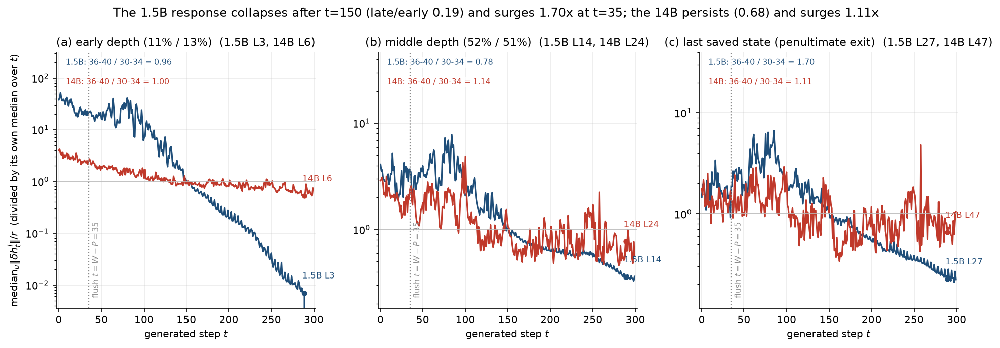
Setup. Both runs, $r=0.1$, three matched relative depths: early (1.5B L3 / 14B L6, 11% / 13% deep), middle (L14 / L24, 52% / 51%), last saved state (L27 / L47, the penultimate exit in both). Curves are $\mathrm{median}_u\lVert\delta h_t^{l}\rVert/r$ at each $t$, each divided by its own median over $t$ (300 values), so they are dimensionless and their absolute levels are not comparable — only their shapes are. The dotted vertical line is $t^*=W-P=100-65=35$; the annotated ratio is $\bar m_{36..40}/\bar m_{30..34}$, i.e. the mean level just after the flush over the mean level just before it. The horizontal grey line is 1 (the curve's own median).
Axes. $x$: generated step $t$; $y$: $\mathrm{median}_u\lVert\delta h_t^{l}\rVert/r$ divided by its median over $t$ (dimensionless), log scale, free per panel.
Numbers.
| depth | late/early (t 200–299 vs 0–49) | peak / late | flush ratio 36–40 / 30–34 | step t=34→35 |
|---|---|---|---|---|
| 1.5B L3 (11%) | 0.0024 | 643 | 0.96 | 1.15 |
| 1.5B L14 (52%) | 0.169 | 15.0 | 0.78 | 1.00 |
| 1.5B L27 (last) | 0.186 | 18.4 | 1.70 | 2.06 |
| 14B L6 (13%) | 0.286 | 2.66 | 1.00 | 1.16 |
| 14B L24 (51%) | 0.420 | 5.95 | 1.14 | 1.22 |
| 14B L47 (last) | 0.680 | 3.17 | 1.11 | 0.80 |
What is in the figure. - Early depth. Both curves decline monotonically through the window, but by very different amounts. The 1.5B's normalized response falls from 38 at $t=0$ to 1 at $t=148$, to 0.04 at $t=250$, and is exactly 0 from $t=290$ on (its flush cascade reaches layer 3). The 14B's falls from 4.0 at $t=0$ to 1 at $t=123$ and then flattens at 0.7–0.9 — it never decays away. - Middle depth. Both show the same qualitative object: a broad hump (1.5B peak at $t=84$, 14B at $t=100$), then decay. The 1.5B falls 14x below its hump by $t=250$; the 14B falls 2.9x and then flattens. - Last state. The 1.5B has the clearest structure: a rise to a peak at $t=85$ (8.5 in units of $r$, 18x its late level) and a monotone decay afterwards. The 14B's last-state curve is a noisy plateau with excursions (a $3.15\,r$ spike at $t=258$) and no hump: peak/late is 3.2 versus 18.4. - The flush at $t=35$. The 1.5B's last state jumps by 2.06x in the single step $t=34\to35$ and 1.70x in the 5-step means, then keeps rising to its $t=85$ peak. The 14B's last state does not: the single-step ratio is 0.80 (a decrease) and the 5-step ratio is 1.11. Across all saved layers the 1.5B shows the surge only at L21 (1.38) and L27 (1.70) and a small dip at L1–L14 (0.73–0.96); the 14B never exceeds 1.14 at any saved layer. - The zero-response layer is L0 in both (100% of entries exactly 0): the perturbation is on prompt positions and the read positions are generated tokens, so at the embedding layer there is nothing to see.
What it shows. The response has the same architecture in both models (zero at the embedding, growing with depth, decaying with $t$), but two scale-dependent differences are visible: the large model's response persists over the whole 300-step window instead of collapsing, and it does not show the window-flush surge that the small model shows at $t=35$. The flush is a mask event and its step is identical in both protocols, so the timing agreement is structural; the amplitude disagreement (1.70 vs 1.11) is the empirical content.
What it does not show. It does not establish why the surge is absent in the 14B. Two candidates are (i) the response is dominated by directions that are insensitive to the dropped prompt token, and (ii) the 14B's sliding-window mask was not applied in as many layers — Qwen2 applies the window per layer via max_window_layers, both runs only set config.sliding_window=100 and use_sliding_window=True, and neither npz records the resulting per-layer mask or the model config. For the 1.5B the mask is independently known to be live (the controlled same-token $W=100$ vs $W=1000$ comparison departs exactly at $t=35$); for the 14B the npz alone cannot distinguish "no mask" from "mask but no surge". This is a real ambiguity, not a rhetorical one, and it should be resolved by dumping config.sliding_window, use_sliding_window, max_window_layers and the layer_types of the loaded model on the next 14B run. It also does not compare like-for-like text: the two models generate different tokens — the 1.5B's continuation degenerates into a 4-token loop from $t=143$ while the 14B's never repeats — and a response can decay differently simply because the token stream changes how much prompt content is re-injected. The late-time decay difference (0.19 vs 0.68) is therefore not a clean model-size effect.
xscale_dm.png — how far the responses sit from the margin they must cross
Setup. Both runs, $r=0.1$, at each model's own smallest-margin step: $t=123$ for the 1.5B ($m=2.016\times10^{-2}$ nats), $t=21$ for the 14B ($m=9.727\times10^{-5}$ nats). Histogram of $\delta m_t(u)/r$ over all directions of that model. Two vertical markers: the red dashed line at $-m_t/r$ (nats per unit radius) is the slope a direction must beat to close the gap at $r=0.1$ — a direction left of it flips; the grey dash-dot line at $-m_t$ (nats) is the same margin without dividing by $r$, i.e. the threshold only if the run radius were 1.
Axes. $x$: $\delta m_t(u)/r$ in nats per unit radius; $y$: number of directions (free per panel). The $x$ ranges differ by a factor 2.8 between panels (1.5B: $-0.22$ to $0.06$; 14B: $-0.045$ to $0.055$).
Numbers.
| 1.5B, $t=123$ | 14B, $t=21$ | |
|---|---|---|
| $m_t$ | $2.016\times10^{-2}$ nats | $9.727\times10^{-5}$ nats |
| $-m_t/r$ (flip threshold) | $-0.2016$ | $-9.727\times10^{-4}$ |
| $\delta m_t/r$ min / p5 / p50 / p95 / max | $-0.136$ / $-0.0688$ / $+0.0091$ / $+0.0376$ / $+0.0525$ | $-0.0399$ / $-0.0082$ / $-3.13\times10^{-4}$ / $+0.0090$ / $+0.0514$ |
| directions with $\delta m_t<0$ | 7 / 20 | 529 / 1000 |
| directions left of $-m_t/r$ | 0 / 20 | 427 / 1000 |
What is in the figure. - At the 1.5B's weakest step the response distribution is centred slightly positive (+0.0091, so 13 of 20 directions widen the margin) and its most destructive direction reaches $-0.136$ — 68% of the $-0.2016$ needed. The whole distribution lives in a window of about $\pm0.15$, and the threshold sits outside it. This is the visual content of "0 of 20 flip". - At the 14B's weakest step the response distribution is centred essentially on zero ($-3.1\times10^{-4}$, a factor 30 smaller than the 1.5B's offset) and is wider than the margin by two orders of magnitude: 42.7% of the mass is left of $-9.7\times10^{-4}$. The threshold line is invisible at this scale because it sits inside the peak — which is the point. - The two panels are on the same physical axis (nats per unit radius) but different ranges; drawn on one axis the 14B's distribution would be a spike $\sim$6x narrower than the 1.5B's. The ratio of the widths (1.5B p5–p95 ≈ 0.106, 14B ≈ 0.017) is 6.2 — the opposite direction from the threshold ratio (207), which is what makes the 14B's margin crossable.
What it shows. The 14B's decisions are not merely near-tied; they are near-tied at a level that a typical direction's response overshoots by two orders of magnitude. The 1.5B's weakest decision is a real tie (0.02 nats) that a typical perturbation simply cannot reach at this radius — the most destructive of 20 directions still comes up 1.5x short.
What it does not show. It does not show what happens after the first flip (the prefix is still the baseline one here; free-running consequences are a separate experiment). It cannot say whether the 42.7% figure would survive a different prompt, since $t=21$ is one token of one continuation. And the grey line is a deliberate unit mismatch kept for readability of the "margin in nats" — the physically correct comparison is the red one.
1576, 807, 525, 11050 from $t=143$ on; the 14B's never repeats within 300 steps. Every 1.5B statistic that aggregates over late $t$ (the late/early ratio, the shape curves after $t=150$) is therefore measured on a loop, and the 14B's is not.max_window_layers, layer_types), which was not recorded. The 1.5B's flush is independently known from a controlled same-token $W=100$ vs $W=1000$ comparison; the 14B's is not.dh_last is not symmetric. The 1.5B stores 3 directions, the 14B 24. Nothing in this section uses those vectors, so this does not enter any number above — it only limits what a vector-geometry follow-up could do on the 1.5B side.python scripts_spark/figs_cross_scale.py
Writes notebook_big/figures/xscale_{margins,rstar,gain,shape,dm}.png (dpi 150) and notebook_big/figures/xscale_numbers.json, which contains every quantile quoted above, the per-layer flush ratios, the per-layer late/early ratios, and the p10/p50/p90 of both $r_*$ normalizations and both gains. The 1.5B npz is read in place from the main checkout and is not modified.